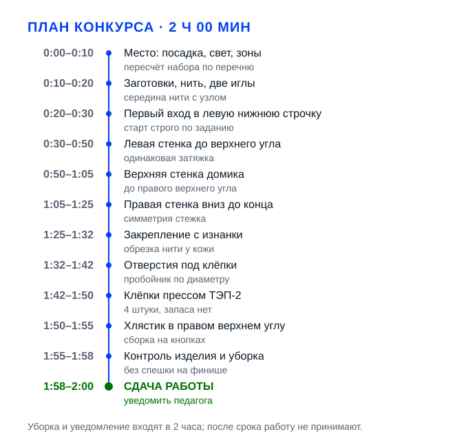
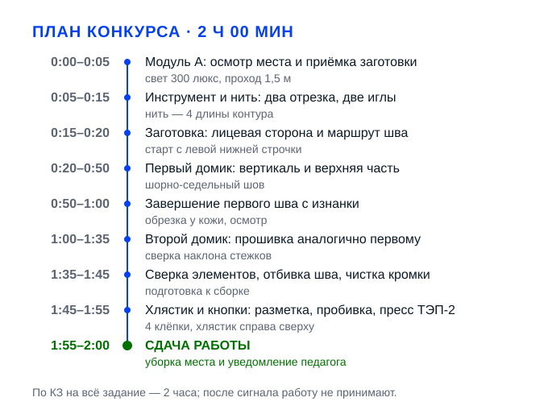
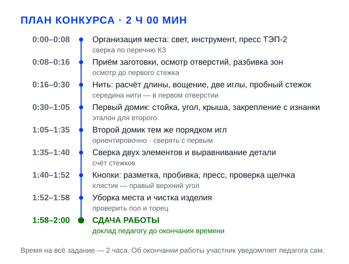

Кожевенное дело (изготовление кожаного изделия) (ФВ)
Задания ниже — официальные файлы «Абилимпикс» (источник: abilympics-russia.ru), разложенные по категориям. Решения написаны по тексту задания, регламенту и критериям оценки; в них указано, что именно проверяет эксперт.
Школьник
14–16 лет, базовый уровень заданияВ официальном файле категории не разделены отдельными разделами — приводим задание целиком; различия по категориям смотрите в таблице модулей.
Пошаговое решение
Перед вами конкурсное задание категории «Школьники» компетенции «Кожевенное дело»: за два часа нужно превратить заранее подготовленную заготовку в брелок «Домик» — прошить один элемент декора шорно-седельным швом, соединить две детали брелка и хлястик при помощи кнопок и поставить клёпки прессом ТЭП-2. Работа идёт по порядку: организация места, подготовка нити и вход в первое отверстие, шов по контуру домика от левой нижней строчки через верхний угол до правого верхнего угла и вниз до конца строчки, затем сборка на кнопках, где хлястик обязан оказаться в правом верхнем углу. Баллы в задании не расписаны, поэтому ориентир — то, что эксперт проверяет руками: ровность стежков, равномерность затяжки, чистая изнанка, нить, обрезанная у самой кожи, и порядок на столе. Уборка и уведомление педагога входят в те же два часа, и именно на них чаще всего не хватает последних минут.

Задача 1. Организовать место и принять наборКЗ, п. 2.3 · организация рабочего места
До первого прокола иглой место должно быть готово полностью: удобная посадка, свет на строчке, инструмент разложен по зонам, заготовки проверены, комплектующие пересчитаны. Эта часть работы не даёт отдельного изделия, но определяет всё остальное: при плохом свете вы пропускаете отверстия, при неудобной посадке к середине шва рука устаёт и затяжка становится разной, а при непроверенном комплекте в нужный момент оказывается, что клёпок меньше, чем точек. Поэтому первые пятнадцать минут из двух часов уходят на это, и тратить их надо спокойно, без попытки сразу шить.
Действие 1.1. Сесть, поставить свет и разложить инструмент по зонам
Шаг 1.1.1
Ставим стул так, чтобы локти лежали на столе, а не висели в воздухе: сиденье на высоте, при которой предплечье и столешница образуют почти прямую линию, спина прижата к спинке, обе ноги стоят на полу. Свет ставим слева и чуть спереди, если вы правша, и зеркально, если левша: тень от собственной руки не должна падать на строчку, потому что отверстия пропускаются именно в тени. Лампу опускаем так, чтобы яркое пятно накрывало участок размером с лист бумаги, а не весь стол — горящее в стороне пятно слепит и мешает различать мелкое.
Шов идёт на весу, двумя иглами одновременно, и неудобная посадка через двадцать минут превращается в дрожь в кисти: затяжка становится неравномерной, а стежки — разной высоты. Свет решает не меньше: отверстия мелкие и того же цвета, что кожа, при боковом освещении каждое читается как тень, а сверху они сливаются в линию. Времени на всё отведено два часа, и пересаживаться на середину шва — значит терять уже начатую работу.
Проверьте тремя движениями: положите обе руки на стол — предплечья лежат целиком, а не висят; наклоните голову к работе — шея не тянется вперёд; посмотрите на заготовку сверху — на ней нет резкой тени от кисти. Если приходится сутулиться, чтобы разглядеть отверстия, лампа стоит слишком высоко или слишком далеко.
Самая частая ошибка — сесть «как удобно» и положить заготовку на край стола: шов тогда идёт под углом к руке, стежки ложатся по косой. Вторая — свет сзади или сверху-сбоку: рука закрывает строчку собственной тенью, и вы шьёте на ощупь, пропуская каждое третье отверстие.
Эксперт обходит рабочие места в первые минуты и отмечает, как участник сел и куда поставил лампу. Отдельно фиксируется, лежит ли заготовка на мате для нарезки кожи, а не на голой столешнице: на твёрдом столе игла скользит и тупится, а проколы получаются рваными.
Шаг 1.1.2
Раскладываем инструмент по зонам, не смешивая то, что режет, с тем, что бьёт: ножницы — справа, лезвиями от себя и от края стола; две иглы — воткнутыми в подушечку или положенными на магнит, но не лежащими просто на столе; молоток — слева, рукояткой к себе; три пробойника — в ряд по диаметру, от тонкого к толстому; коврик для пробивки и мат для нарезки — там, где вы будете бить, а не на площади шва. Клёпки и нить оставляем в наборе до момента, когда они понадобятся: рассыпанные по столу клёпки теряются и путаются с обрезками кожи.
Зоны нужны не для красоты: молоток и пробойник работают с усилием, и если они лежат рядом с тонкой заготовкой, при первом ударе заготовка сдвигается, а кромка подминается. Игла, лежащая открыто, уходит остриём в ладонь или в кожу изделия и оставляет царапину, которую с лица уже не убрать. Порядок на столе эксперт отмечает отдельно: разложенный инструмент читается как понимание процесса.
Проверьте, дотягиваетесь ли вы до каждой зоны, не вставая со стула, и видите ли остриё иглы в тот момент, когда берёте её. Все три пробойника должны быть видны целиком, без наваленных сверху обрезков, а коврик — лежать так, чтобы при ударе молотком он не съезжал на край стола.
Типичная ошибка — высыпать набор одной кучей посередине: через десять минут нужный пробойник не найти, а упавшая клёпка считается потерянной, потому что запас ровно по числу точек. Вторая — держать ножницы раскрытыми и остриём к себе.
Эксперт смотрит на две вещи: безопасно ли лежит режущий и ударный инструмент и разложены ли детали так, что их можно пересчитать. Куча посередине стола фиксируется как слабая организация.
Шаг 1.1.3
Кладём перед собой заготовку так, как она будет лежать до конца работы: лицевой стороной вверх, контуром домика к себе, длинной стороной вдоль края стола. Определяем лицевую сторону до первого стежка: у кожи лицо гладкое, с ровным рисунком, а изнанка ворсистая, матовая, часто с более светлым или более тёмным оттенком среза. Если заготовка вырублена из одной пластины, лицо у неё то же, что у верхнего слоя среза, — смотрим на кромку и находим, с какой стороны срез имеет плотную гладкую полоску.
Перепутать лицо и изнанку — значит сделать работу, которую нельзя исправить: шов останется на изнанке, а лицевая сторона будет смотреть внутрь, и весь брелок придётся разбирать. Кроме того, от ориентации зависит, где окажется левая нижняя строчка, с которой по заданию начинается шов: если повернуть заготовку наоборот, старт сместится в противоположный угол, и хлястик потом не встанет в правый верхний угол изделия.
Сравните обе стороны при боковом свете: лицо даёт ровный мягкий блеск, изнанка — матовая и слегка ворсистая. Проверьте, что контур домика читается сверху и что стартовая строчка находится в левом нижнем углу — именно с неё по заданию начинается шов.
Ошибка — определять лицо «на глаз» по цвету, не посмотрев на срез: у некоторых заготовок стороны почти одинаковы, и разница видна только на кромке. Вторая ошибка — перевернуть заготовку уже после первых стежков: нить придётся вытягивать, отверстия от этого разбиваются, и шов в этом месте будет заметно слабее.
Эксперт подходит и проверяет ориентацию до начала шитья: он смотрит на срез заготовки и на то, с какого угла участник собирается начинать. Если лицо перепутано, он скажет об этом сразу — переделывать потом дороже.
Действие 1.2. Принять заготовки и сверить комплектующие с перечнем
Шаг 1.2.1
Берём набор и проходим по перечню оборудования сверху вниз, называя каждую позицию про себя: ножницы — одна штука, иголки — две, нитки — один моток, кожаные заготовки — один набор, пробойники — три штуки, молоток — один, коврик для пробивки — один, мат для нарезки кожи — один, клёпки — четыре штуки. Считаем клёпки вслух, а не «на глаз»: четыре штуки в руке и четыре на столе — это разные вещи. Если чего-то меньше, чем в перечне, говорим об этом до старта, а не в момент, когда до сдачи осталось двадцать минут.
Перечень в задании — это не формальность, а ваш чек-лист: по нему собирается рабочее место на одного участника, и всё, что в нём есть, выдаётся именно на одного. После старта замена идёт только через эксперта и только если причина уважительная, а клёпки и иглы к расходным «по требованию» не относятся. Пересчёт занимает две минуты из ста двадцати и снимает целый класс проблем, которые потом не решаются.
Все позиции перечня отмечены, число клёпок совпадает с четырьмя, игл — две, пробойников — три. Проверьте отдельно, что иглы не погнуты и их ушки не расплющены: погнутая игла в шорно-седельном шве ведёт себя как рычаг и рвёт отверстия.
Начать шить, не пересчитав набор, и обнаружить нехватку на этапе сборки: без четвёртой клёпки одна точка останется непоставленной, а это уже незакрытое задание. Вторая ошибка — увидеть, что клёпок меньше, и промолчать, рассчитывая «обойтись тремя»: самовольное изменение задания фиксируется экспертом.
Эксперт проверяет комплектность при выдаче и фиксирует обращения до старта. Спокойный и точный пересчёт по перечню он читает как умение работать по документу.
Шаг 1.2.2
Осматриваем сами заготовки: кромка должна быть ровной, без заломов, надрывов и следов замина, лицевая сторона — без царапин и потёртостей, отверстия под шов — пробитыми и одинаковыми по диаметру, без «слепых» мест, где пробойник не вышел насквозь. Детали брелка кладём рядом и сравниваем между собой: контуры должны совпадать, а отверстия — стоять напротив друг друга, чтобы при сборке шов и кнопки попали в свои места. Заготовку с надорванной кромкой сразу откладываем в сторону и показываем эксперту, а не пытаемся подклеить.
Заготовка в этом задании выдаётся уже подготовленной, то есть с пробитыми отверстиями и вырубленным контуром, и её качество определяет потолок вашей работы: если отверстия разного шага, идеально ровного шва не получится ни при какой технике. Поэтому дефекты надо увидеть до первого стежка, пока можно заменить деталь. Сравнение двух деталей между собой — самый быстрый способ поймать перекос: наложите их друг на друга и посмотрите на просвет.
Наложите детали одну на другую и поднимите к свету: контуры совпадают, отверстия совпадают. Проведите пальцем по кромке — она не должна цепляться за подушечку, зацепы означают задиры. Проверьте крайние отверстия строчки: они должны быть пробиты полностью, иначе первый и последний стежок будут слабыми.
Ошибка — начать шить заготовку с надрывом у кромки: при затяжке надрыв расходится, и дырка оказывается ровно в линии шва. Вторая ошибка — принять детали, не сверив их между собой: если контуры не совпадают, кнопки при сборке не встретятся, и это выяснится уже после того, как шов закончен.
Эксперт осматривает заготовки вместе с участником и фиксирует дефекты, если они есть. Если заготовка была с браком, а участник его не заметил, работу всё равно оценят по факту — поэтому смотреть надо самому, до старта.
Шаг 1.2.3
Отдельно готовим нить и клёпки к работе: моток нити кладём так, чтобы он не укатывался, клёпки выкладываем парами — ножка и головка рядом, — и проверяем, что они одного диаметра и подходят к насадке пресса ТЭП-2. Нить проверяем на разрыв коротким рывком: она должна тянуться, но не рваться от усилия пальцев. Если в наборе нить вощёная — это хорошо, она меньше путается и крепче держит затяжку; если нет, воск можно не искать, но тогда узлы придётся затягивать аккуратнее.
Нить и клёпки — те две вещи, которые нельзя добыть в процессе. Рвущаяся нить посреди строчки означает сращивание, а сращённая нить в шорно-седельном шве видна как утолщение и почти всегда вытягивается при носке. Клёпки, разложенные парами, экономят время на сборке: на этапе, когда пресс уже в руках, искать вторую половинку в общем наборе — потеря минуты на каждой точке.
Потяните нить двумя руками в разные стороны средней силы: она пружинит и не рвётся. Каждая клёпка собирается из двух частей — проверьте, что половинок четыре пары, а не четыре детали одного вида. Насадка пресса должна надеваться на клёпку свободно, без люфта в сторону.
Ошибка — оставить клёпки в общем пакете и пересчитать их только на сборке: половинки путаются, и вместо четырёх точек вы ставите две, потому что вторые две «не подошли». Вторая ошибка — взять нить, не проверив её: обрыв на середине контура домика виден на лицевой стороне как узел.
Эксперт обращает внимание на подготовку расходников: разложенные парами клёпки и проверенная нить — признак того, что участник понимает последовательность работы, а не импровизирует по ходу.
Действие 1.3. Снять риски: молоток, пробойники, ножницы, пресс
Шаг 1.3.1
Кладём коврик для пробивки на стол и проверяем, что он не свисает с края: пробивать будем именно на нём, потому что пробойник при ударе проходит кожу насквозь и без подложки бьёт в столешницу, тупясь с первого раза. Пробойник берём тремя пальцами за корпус, ставим вертикально, строго перпендикулярно плоскости кожи, и первый удар делаем лёгким — он намечает точку, — а второй, сильный и короткий, пробивает насквозь. Молоток держим за конец рукоятки, а не у самой головки: так удар получается точным, а не размазанным.
Пробойник, поставленный под углом, выходит с обратной стороны косо и делает отверстие овальным и рваным по кромке — а в такое отверстие клёпка садится с перекосом, и кнопка потом не застёгивается. Удар «от плеча» с большим размахом даёт ту же ошибку и вдобавок сдвигает заготовку под пробойником, поэтому первым лёгким ударом вы фиксируете положение, а вторым работаете. Коврик при этом обязателен: он гасит удар и не даёт пробойнику затупиться.
Проверьте на обрезке кожи, если он есть в наборе: отверстие должно быть круглым, с чистой кромкой, без рваных волокон с обратной стороны. Пробойник после удара должен выниматься свободно, без проворота: если он застревает, значит, вы бьёте под углом или кожу сдвинуло.
Бить по пробойнику с размаха, держа его на весу: пробойник срывается, заготовка подпрыгивает, отверстие уезжает на миллиметр-два, и клёпка садится не по разметке. Вторая ошибка — пробивать кожу на голом столе или на бумаге: кромка отверстия подминается, и клёпка держится хуже.
Эксперт смотрит на постановку удара и на наличие подложки: работа без коврика фиксируется как нарушение требований безопасности и организации. Отдельно он отмечает силу удара: слишком слабый оставляет непробитую кожу, слишком сильный сдвигает заготовку.
Шаг 1.3.2
Ножницы держим так, чтобы резать всей длиной лезвия, а не кончиками: кончиками кожа не режется, а заминается, и кромка получается волнистой. Режем от себя, поддерживая отрезаемую часть второй рукой, и никогда не подставляем пальцы под лезвие. Если нужно подрезать нить — режем у самой кожи коротким движением, предварительно натянув нить, чтобы срез был чистым, а не разлохмаченным.
Кожа — материал, который не прощает замин: замятую кромку уже не расправить, она останется волной, и на готовом брелке это видно по контуру. Кроме того, работа ножницами кончиками требует втрое большего усилия, кисть устаёт, и на шов остаётся меньше сил. Нить, перерезанная без натяжения, распушается на конце и потом не проходит в ушко иглы без слюны и мучений.
Проверьте кромку ногтем: она должна быть ровной, без «ступенек» и зацепов. Проверьте срез нити: он короткий и плотный, кончик не разлохматился на несколько волокон. Ножницы должны закрываться плавно, без хруста — хруст означает, что они тупые или в шарнире грязь.
Резать кожу кончиками ножниц «так точнее»: кромка идёт волной, а на тонкой коже появляются надрывы. Вторая ошибка — передавать ножницы открытыми или класть их на край стола лезвиями наружу: и то и другое — нарушение техники безопасности, которое эксперт отмечает сразу.
Эксперт наблюдает за работой ножницами: режет ли участник всей длиной лезвия и убирает ли инструмент после каждого использования. Если ножницы лежат раскрытыми на краю стола, он делает замечание, не дожидаясь, пока это станет травмой.
Шаг 1.3.3
Осматриваем установщик кнопок ТЭП-2 до работы: проверяем, что рычаг ходит плавно и до конца, насадки вставлены до упора и соответствуют диаметру клёпок, а на столе под прессом есть свободное место, чтобы заготовка легла плоско, а не на весу. Делаем один холостой ход без клёпки: рычаг должен вернуться сам, без заедания, а насадка — не шататься в сторону. Пресс ставим так, чтобы рука шла к рычагу сверху и не задевала соседние предметы.
Клёпка, посаженная прессом с перекошенной насадкой, заминается набок: кнопка застёгивается через силу или не застёгивается вовсе, а выправить её уже нельзя — металл помят. Холостой ход нужен, чтобы поймать это до того, как испорчена первая клёпка: запасных в наборе нет, их ровно четыре. Свободное место под прессом тоже важно: заготовка, лежащая на весу или на краю коврика, при нажатии сдвигается, и клёпка встаёт не по разметке.
Рычаг идёт до упора и возвращается сам, насадка сидит плотно, посторонних щелчков нет. Заготовка, положенная под насадку, лежит плоско и не качается. Если что-то из этого не так — зовите эксперта до первой клёпки, а не после.
Начинать сразу с рабочей клёпки, не проверив пресс: перекошенная насадка портит первую же кнопку, и на четырёх точках это потеря четверти задания. Вторая ошибка — держать заготовку рукой в проекции насадки во время нажатия: это прямая опасность для пальцев.
Эксперт проверяет, осмотрел ли участник пресс и держит ли руки вне зоны насадки. Нажатие с пальцами под насадкой — грубое нарушение охраны труда, работа останавливается.
Задача 2. Подготовить нить и войти в первое отверстиеКЗ, п. 2.3, шаги 2–3 · подготовка к шву
Шорно-седельный шов держится на одном принципе: две иглы на одной нити проходят каждое отверстие с двух сторон и затягиваются одновременно, поэтому середина нити обязана оказаться в первом отверстии. Отсюда две вещи, которые решают весь дальнейший шов — правильно отмеренная нить и правильно сделанный первый прокол. В этом действии вы отмеряете нить, заправляете две иглы, входите в первую дырку и затягиваете так, чтобы нить легла в коже, а не поверх неё. Всё это занимает не больше пятнадцати минут, но ошибка здесь стоит всего контура: длину нити и первый стежок переделывают только распусканием.
Действие 2.1. Найти начало строчки и определить её длину
Шаг 2.1.1
Находим левую нижнюю строчку — ту, с которой по заданию начинается шов. Кладём заготовку лицом вверх и ориентируем её так, как она будет висеть готовым брелком: контур домика сверху, хлястик пойдёт в правый верхний угол, а старт — в левый нижний. Отверстия строчки идут по контуру элемента декора; первое из них находится в самом низу слева, и именно в него войдёт первая игла. Отмечаем его для себя, но не карандашом и не царапиной: на коже любые следы остаются навсегда.
Направление шва задано в задании не случайно: шов идёт снизу вверх по левой стенке, потом по прямой по верху до правого верхнего угла и вниз по правой стенке. Если начать с другой стороны, стежки лягут с наклоном в обратную сторону, а свободный конец нити окажется не там, где его удобно прятать. На плотной коже обратный наклон бросается в глаза как «шов задом наперёд».
Пройдите глазами всю строчку от первого отверстия до последнего, не пропуская ни одного: их число вы должны знать, чтобы потом сверять. Проверьте, что первое отверстие в левом нижнем углу пробито насквозь — посмотрите на просвет. Убедитесь, что по пути нет порванных или забитых отверстий.
Ошибка — начать с того отверстия, которое удобнее руке, а не с левого нижнего: дальше шов пойдёт в обратную сторону, и последний стежок окажется в углу, где неудобно закреплять нить. Вторая — начинать с края, не пройдя строчку глазами: пропущенное отверстие обнаруживается только в конце, когда исправить его можно лишь распустив участок.
Эксперт смотрит, с какого отверстия начат шов и в какую сторону он идёт: это первое, что видно при сравнении работы с заданием. Он также сверяет, доведён ли шов до последнего отверстия: по этому признаку видно, что контур закрыт полностью.
Шаг 2.1.2
Считаем отверстия строчки и прикидываем длину шва в сантиметрах — просто прикладываем нить по контуру, не отрезая. Число отверстий нужно затем, чтобы на середине работы понимать, сколько осталось, а длина контура — чтобы отмерить нить. Для шорно-седельного шва берут нить в четыре-пять раз длиннее шва: на каждый стежок уходит две длины плюс запас на затяжку и на хвосты. Если контур небольшой, нить всё равно не делают короче полуметра — с короткой нитью неудобно работать двумя иглами.
Длина нити — компромисс, и оба края плохи. Слишком короткая нить закончится раньше, чем вы дойдёте до правого верхнего угла, а сращивание в шорно-седельном шве видно как утолщение и почти всегда потом расходится. Слишком длинная путается, трётся о кромку кожи, лохматится и цепляется за всё на столе, а распутывание узла стоит дороже, чем экономия. Четыре-пять длин — это проверенная практикой вилка, которая оставляет запас на ошибку.
Проверьте расчёт простым способом: приложите отмеренный отрезок к контуру и посмотрите, сколько раз он укладывается. Четыре укладки — минимум, пять — с запасом. Хвосты по концам должны оставаться по десять-пятнадцать сантиметров, иначе за них неудобно тянуть при затяжке.
Отрезать нить «на глаз, чтобы не мешала»: на середине правой стенки она заканчивается, и приходится либо сращивать, либо оставлять незашитый угол. Вторая ошибка — отрезать сразу три метра: такая нить всё время перекручивается и завязывается узлами, а каждый узел — это остановка и потеря темпа.
Эксперт оценивает результат, а не расчёт, но длина нити видна по работе: узел или утолщение на контуре он замечает сразу и просит объяснить, откуда оно.
Действие 2.2. Заправить две иглы одной нитью
Шаг 2.2.1
Отрезаем нить нужной длины и сразу готовим оба конца: кончик нити сминаем между пальцами и продеваем в ушко первой иглы. Если нить не идёт, кончик не надо кусать — его подрезают ножницами под острым углом, и он проходит в ушко с первого раза. Затем второй конец продеваем во вторую иглу точно так же. Получается одна нить с иглой на каждом конце: это и есть рабочее положение для шорно-седельного шва.
Две иглы на одной нити — суть техники: каждая игла проходит отверстие со своей стороны, и стежок затягивается одновременно с двух концов. Если заправить одну иглу, получится обычный прямой шов с протяжкой нити через кожу, и он будет держаться хуже, а на изнанке останутся длинные перемычки. К тому же при затяжке в одну сторону нить режет кожу по кромке отверстия, и на лицевой стороне появляется вмятина.
Проверьте: иглы сидят на нити плотно, нить не выскальзывает из ушка при лёгком рывке, концы одинаковой длины. Ушки не расплющены, иглы прямые. Положите нить на стол — она должна лежать без самопроизвольных петель.
Заправить одну иглу и «вторую потом»: в процессе это уже невозможно без перерезания нити. Вторая ошибка — продеть оба конца в одну иглу: тогда шов получится односторонним, изнанка будет с протяжками, а затяжка — неравномерной по всей длине строчки.
Эксперт проверяет, две ли иглы на нити, ещё до первого стежка: это техническая основа задания, а не украшение. Если игла одна, он предупреждает сразу: переделать шов после первых стежков уже нельзя без потери темпа.
Шаг 2.2.2
Находим середину нити и завязываем на ней узел — маленький, в один оборот, плотно затянутый. Середина нужна потому, что первое отверстие прошивается сразу в две стороны, и обе половины нити должны быть примерно равны: иначе одна игла будет всё время отставать, а вторая — тащить за собой лишнюю длину. Узел на середине — это метка, которая при первом стежке уйдёт внутрь первого отверстия и зафиксирует нить без дополнительного закрепления.
Отсутствие узла на середине — самая коварная ошибка: внешне первый стежок получается нормальным, но при первом же натяжении одна половина нити вытягивается из отверстия, и шов начинает «ездить». Узел, ушедший в первое отверстие, работает как стопор: он не даёт нити проскользнуть, и затяжка держится до конца строчки. Делать его большим нельзя — утолщение не войдёт в отверстие и останется снаружи бугорком.
Сложите нить пополам: концы должны сойтись с точностью до сантиметра, узел стоять ровно на сгибе. Подёргайте за одну иглу — узел не должен смещаться по нити. Узелок на ощупь плотный и не больше диаметра отверстия.
Пропустить узел и начать шить «как получится»: нить постепенно вытягивается, и к правому верхнему углу одна половина оказывается вдвое короче другой, затяжка перекашивается, стежки идут с разным наклоном. Вторая ошибка — завязать узел слишком близко к игле: он мешает входу в отверстие.
Эксперт может попросить показать середину нити до начала шва. Узел на середине — признак того, что участник знает технику, а не копирует движения по картинке.
Шаг 2.2.3
Проверяем иглы на острие и на изгиб: прокатываем каждую по столу — кривая игла катится по дуге, ровная по прямой. Остриё проверяем на обрезке кожи: оно должно входить в отверстие без усилия и не цеплять волокна. Если игла тупая, она не проходит отверстие, а раздвигает кожу и рвёт кромку; если погнутая — отверстие разбивается в овал. Проверку делаем до заправки нити: с нитью в ушке иглу не прокатать ровно по столу.
Отверстия в заготовке уже пробиты, и игла в них должна идти свободно, с небольшим сопротивлением кожи, но без нажима. Именно поэтому тупую иглу нельзя «дожать»: усилие передаётся на кромку отверстия, и она рвётся, а на лицевой стороне появляется характерная бахрома. Погнутая игла, кроме того, что разбивает отверстие, ещё и уводит стежок в сторону, и линия шва перестаёт быть ровной.
Обе иглы катятся по прямой, остриё входит в отверстие под лёгким нажимом, кожа вокруг отверстия не белеет. Проверьте на первом отверстии без нити: игла проходит и выходит с обратной стороны без скрипа.
Работать тем, что дали, не проверяя: тупая игла превращает ровный шов в рваный, а исправить это потом нельзя — отверстия уже разбиты. Вторая ошибка — выпрямлять погнутую иглу пальцами: она ломается в руке, а осколок летит в лицо.
Эксперт осматривает иглы при выдаче набора и отмечает случаи, когда участник начал работу заведомо непригодным инструментом. Он же подсказывает, что делать с погнутой иглой: заменить, а не выпрямлять, потому что исправленная ломается в руке.
Действие 2.3. Сделать первый стежок и зафиксировать середину нити
Шаг 2.3.1
Продеваем правую иглу с ниткой в первое отверстие — то, что в левом нижнем углу, — с лицевой стороны и тянем обе иглы вверх, пока нить не натянется. Тянем именно за обе иглы одновременно, а не за одну: натяжение должно распределиться по обеим половинам, и узел на середине войдёт в отверстие. В этот момент середина нити и оказывается в первом крайнем отверстии, а обе иглы смотрят вверх над заготовкой.
Именно так задаётся середина нити по заданию: пока нить не натянута, непонятно, где она ляжет, и первая же затяжка может перетянуть половины в одну сторону. Натяжение двумя иглами одновременно — это ещё и проверка узла: если он ушёл в отверстие и не выскочил обратно, стопор держит. Если потянуть за одну иглу, узел проскочит наружу, а вторая половина нити соберётся в петлю под заготовкой.
Середина нити с узлом ушла в первое отверстие, обе половины натянуты одинаково и смотрят вверх. Подёргайте каждую иглу по очереди: нить не должна проскальзывать, а узел — выходить из отверстия. Заготовка не должна морщиться от натяжения.
Потянуть за одну иглу: узел выскакивает, и середина нити оказывается не в первом отверстии, а в воздухе — шов после этого всё время будет разъезжаться. Вторая ошибка — натянуть так, что кожа вокруг отверстия собирается в складку: складка останется на лицевой стороне вмятиной.
Эксперт смотрит на первый вход иглы: правильный вход — тот, где обе иглы выходят наверх, а нить лежит по лицевой стороне ровно, без узла снаружи. Узел, оставшийся на лице у первого отверстия, он отмечает сразу — это самая заметная ошибка начала шва.
Шаг 2.3.2
Делаем первый полный стежок: левую иглу продеваем во второе отверстие с лицевой стороны и протягиваем, затем правую иглу вставляем в это же отверстие — она идёт навстречу, с изнаночной стороны. Теперь в отверстии стоят обе иглы, каждая со своей стороны. Тянем за оба конца одновременно, пока стежок не затянется туго: нить должна лечь в кожу, а не поверх неё, но не прорезать её. Первый стежок закрыт.
В этом и состоит шорно-седельный шов: обе иглы проходят одно отверстие навстречу друг другу, поэтому нить с двух сторон обхватывает материал, и стежок держит вдвое крепче обычного. Затягивать надо одновременно: если тянуть по очереди, первая половина затянется, а вторая останется слабой, и на лицевой стороне получится перекос — один стежок наклонён влево, следующий вправо. Именно этот перекос эксперт видит первым.
Стежок лежит ровно, нить утоплена в кожу, отверстие не разбито, на лицевой стороне нет петли. Обе иглы после затяжки смотрят в одну сторону и натянуты одинаково. Проверьте ногтем: нить не должна цепляться за поверхность — значит, она легла в кожу.
Тянуть за нити по очереди: стежок получается «пьяным», с наклоном то в одну, то в другую сторону, и по нему потом идёт весь шов. Вторая ошибка — затянуть с такой силой, что нить прорезает кожу: на тонкой коже это происходит легко, а восстановить кромку невозможно.
Эксперт смотрит на первые два-три стежка под лампой, поворачивая работу: если они перекошены, он почти наверняка попросит переделать сразу, потому что дальше ошибка пойдёт по всему контуру.
Шаг 2.3.3
Проверяем, как ведёт себя нить после второго стежка: она должна идти от иглы к отверстию коротким прямым участком, без провиса и без узлов. Если нить начинает скручиваться в жгут, раскручиваем её, давая игле свободно повиснуть: кручёная нить сама набирает витки, и каждый виток при затяжке даёт утолщение. Дальше ведём работу так, чтобы обе иглы всегда были с одной стороны заготовки и не путались между собой.
Кручение нити — главная причина того, что шов начинает «лохматиться» к середине: витки собираются в мелкие шишки, они не проходят в отверстие, и вы либо тянете сильнее и рвёте кожу, либо оставляете слабину. Свободно висящая игла раскручивает нить собственной тяжестью — это самый простой приём, который экономит нервы и время на всей строчке.
Нить от иглы до отверстия прямая, без жгута, без узлов и без петель. Обе иглы не перекручены между собой. После двух-трёх стежков проверьте изнанку: там должны быть видны такие же ровные стежки, а не длинные перемычки.
Игнорировать скручивание «потом распутаю»: на пятом-шестом стежке нить завяжется узлом, и его придётся развязывать иглой, разбивая отверстия. Вторая ошибка — держать обе иглы в одной руке: они цепляются друг за друга, и рабочая нить выдёргивается из ушка.
Эксперт обращает внимание на аккуратность рабочей нити: чистая, не разлохмаченная нить без узлов говорит о том, что участник контролирует процесс, а не борется с материалом.
Задача 3. Прошить контур домика шорно-седельным швомКЗ, п. 2.3, шаги 3–6 · шорно-седельный шов
Основная часть работы: один элемент декора — контур домика — прошивается по готовым отверстиям шорно-седельным швом, начиная с левой нижней строчки. Шов идёт тремя участками: снизу вверх по левой стенке до верхнего угла, по прямой по верхней стенке до правого верхнего угла и вниз по правой стенке до конца строчки, после чего закрепляется с изнанки и обрезается у кожи. Здесь важно не количество стежков, а одинаковость: одна и та же затяжка, один и тот же наклон иглы, одно и то же расстояние до кромки на всём контуре. Перекос затяжки нельзя замаскировать ни сборкой, ни аккуратной изнанкой.
Действие 3.1. Пройти левую стенку от нижней строчки до верхнего угла
Шаг 3.1.1
Входим в каждое следующее отверстие по порядку, не пропуская ни одного: левую иглу ведём с лицевой стороны, правую — навстречу с изнанки, и после каждого отверстия меняем иглы местами, чтобы нить не образовывала петлю. Работаем короткими движениями от кисти, заготовку придерживаем второй рукой у самого края, не сжимая её в кулак: сжатая кожа поднимается волной, и стежок ложится в ямку. Первые пять отверстий проходим медленно, находя ритм, — дальше рука сама держит темп.
Пропуск отверстия — самая частая и самая заметная ошибка: в шорно-седельном шуве каждый стежок обхватывает кожу с двух сторон, и пропуск даёт участок вдвое длиннее остальных, куда игла уже не вернётся без распускания. Ритм нужен по той же причине: когда движения повторяются, затяжка получается одинаковой сама собой, а когда вы останавливаетесь на каждом стежке и думаете заново, сила натяжения каждый раз другая.
Пройдя пять отверстий, переверните заготовку и посмотрите на изнанку: там должны быть такие же ровные стежки, как на лице, без длинных перемычек и без петель. На лице нить должна лежать в коже, а не поверх неё — проверьте ногтем, он не должен цепляться. Число стежков на лице и на изнанке одинаковое.
Ошибка — вести иглу «по памяти», не глядя в отверстие: игла проходит мимо, прокалывает кожу рядом, и на лице появляется лишняя дырка, которую уже не убрать. Вторая ошибка — придерживать заготовку, сжимая её пальцами: кожа под пальцами сминается, и стежок в этом месте оказывается глубже остальных.
Эксперт смотрит на первые пять-шесть стежков левой стенки: по ним видно, найдена ли затяжка. Дальше он проверяет изнанку этого участка — именно там видны петли и перемычки, если иглы путались.
Шаг 3.1.2
Держим одинаковую затяжку: тянем за оба конца нити одновременно, каждый раз с одинаковым усилием — тем, при котором нить уходит в кожу заподлицо, но отверстие не сжимается в точку. Ориентир простой: после затяжки на лицевой стороне видна ровная линия нити, а кожа вокруг отверстия остаётся гладкой. Если вокруг отверстия пошла мелкая сборка, значит, вы тянете сильнее, чем нужно, и надо ослабить на этом и на следующих стежках.
Равномерность затяжки — то, что отличает профессиональный шов от учебного, и то, что невозможно исправить после сборки: слабые стежки вытягиваются при носке первыми, а перетянутые режут кожу. На тонкой коже перетяжка видна как цепочка поперечных морщин вдоль шва, и снять её нельзя ничем. Кроме того, перетянутый шов стягивает контур домика, и элемент декора теряет форму, которую задавал вырубленный контур.
Проведите пальцем вдоль готового участка: поверхность должна быть ровной, без «ступенек» на каждом стежке. Сложите заготовку пополам по линии шва — если шов стянут, кожа пойдёт волной и не ляжет плоско. Сравните первые и последние стежки участка: они должны выглядеть одинаково.
Затягивать настолько сильно, чтобы шов «сидел как влитой»: на коже это означает прорезанную кромку отверстия и волну по контуру, а исправить это уже невозможно. Вторая ошибка — тянуть вполсилы, чтобы не порвать: слабые стежки потом вытягиваются при первой же носке, и шов расходится.
Эксперт проверяет затяжку на ощупь и на просвет: он проводит работой над лампой, и просвет между нитью и кожей виден сразу. Ровная утопленная нить — признак правильной техники.
Шаг 3.1.3
Подходим к верхнему левому углу: здесь строчка поворачивает, и отверстия идут не по прямой, а под углом друг к другу. На повороте стежок не стягиваем внутрь угла — затяжку делаем такую же, как на прямой, и следим, чтобы нить легла по биссектрисе угла, а не срезала его. Заготовку перед поворотом поворачиваем в руке, чтобы игла всё время шла в отверстие под одним и тем же углом к плоскости кожи.
Угол — место, где ошибки складываются: если стянуть стежок на повороте, внутренняя сторона угла соберётся в мелкую складку, а внешняя растянется, и контур домика потеряет чёткость именно там, куда смотрят в первую очередь. Поворот заготовки в руке вместо изменения направления иглы сохраняет одинаковый наклон стежка по всему контуру — а это и есть признак ровного шва.
Приложите линейку к двум сторонам угла: кромка должна остаться прямой, без волнистости. Нить в угле лежит ровно, без бугорка. Проверьте, что в самом углу нет пропущенного отверстия — на повороте его легче всего не заметить.
Проскочить угол и стянуть его вместе с двумя соседними стежками: угол собирается в складку, и расправить её, не распуская шов, нельзя. Вторая ошибка — на повороте перехватить заготовку иначе и начать входить в отверстия под другим углом: наклон стежков по разные стороны угла не совпадёт.
Эксперт осматривает углы отдельно от прямых участков: он ставит работу на стол и смотрит вдоль кромки. Складка во внутренней стороне угла — типовой дефект, который он ищет.
Действие 3.2. Прошить верхнюю стенку до правого верхнего угла
Шаг 3.2.1
Ведём шов по верхней стенке по прямой, в том же ритме и с той же затяжкой: левая игла с лица, правая навстречу, оба конца натягиваются одновременно. Смотрим не на иглу, а на линию отверстий впереди — так глаз держит направление, и стежки не уходят в сторону. Каждые три-четыре отверстия бросаем короткий взгляд на уже прошитый участок: он должен читаться как ровная цепочка, а не как зигзаг.
Прямой участок опасен именно своей простотой: рука расслабляется, темп растёт, и затяжка незаметно слабеет к середине. На готовом изделии это видно как провисший участок между двумя плотными — и исправляется только распусканием. Взгляд на линию отверстий впереди, а не на иглу, даёт ровность: игла идёт туда, куда смотрит глаз, и мелкие отклонения гасятся сами.
Прошитый участок верхней стенки лежит на одной линии с кромкой, расстояние от шва до кромки одинаковое по всей длине. Стежки одинаковой длины, нить не провисает. Проверьте, положив работу на белую бумагу: цепочка стежков видна как ровная линия без изломов.
Ускоряться на прямой «чтобы успеть»: середина верхней стенки получается с более слабой затяжкой, и это видно как просевший участок. Вторая ошибка — смотреть на иглу в момент входа: глаз теряет направление, и линия шва начинает уходить к кромке.
Эксперт смотрит верхнюю стенку на просвет и под углом: просевшие стежки выдают себя тенью. Он также сверяет расстояние от шва до кромки в начале и в конце участка — оно должно совпадать.
Шаг 3.2.2
Контролируем натяжение на длинном участке: раз в несколько стежков проверяем нитку на усилие — она должна тянуться туго, с одинаковым сопротивлением. Если чувствуете, что тянется легче, чем в начале, значит, затяжка ослабла — вернитесь к прежнему усилию на следующем стежке, а не «догоняйте» рывком. Нить держим под постоянным натяжением и между стежками, не давая ей провиснуть под заготовкой.
Нить, провисшая под заготовкой между стежками, при следующем проколе захватывается иглой или затягивается петлёй, и на изнанке появляется узел, который невозможно убрать, не распустив участок. Постоянное натяжение — это тот навык, который отличает ровный шов от «почти ровного»: провисание не видно на лице, но обязательно вылезает на изнанке.
Переверните работу и посмотрите на изнанку верхней стенки: там должны быть ровные стежки той же длины, что на лице, без узлов и петель. Потяните за нить у последнего стежка — она не должна вытягиваться с изнанки.
Ослабить нить «пусть висит, так быстрее»: под заготовкой образуется петля, которая при следующем проколе затягивается в узел. Вторая ошибка — компенсировать ослабшую затяжку резким рывком на одном стежке: он выделяется на общем фоне как вмятина.
Эксперт проверяет изнанку верхней стенки на просвет между стежками: именно там видны петли, которые на лице не видны вообще. Он предупреждает, что петлю нельзя убрать подтягиванием: она уже вплетена, и участок придётся распускать.
Шаг 3.2.3
Доводим шов до правого верхнего угла — того самого, где по заданию должен встать хлястик. Последние два-три отверстия перед углом проходим особенно внимательно: затяжка не сильнее, чем на всей стенке, стежок в самом углу ложится по биссектрисе, нить не выходит за кромку. В углу не делаем дополнительных проколов и не закрепляем нить: закрепление будет только в конце всей строчки, с изнанки.
Правый верхний угол несёт двойную нагрузку: в него встанет хлястик, и любая складка или перетяжка здесь будет видна рядом с кнопкой, то есть на самом заметном месте изделия. Кроме того, слишком туго затянутый угол стягивает контур, и хлястик, приложенный по разметке, окажется смещённым относительно края. Промежуточное закрепление нити здесь не нужно и вредно: узел останется на виду и добавит утолщение под кнопку.
Угол прямой, кромка не стянута, нить лежит ровно. Приложите хлястик к углу без крепления: он должен лечь по месту, не заходя на шов. Проверьте, что до угла не осталось непрошитых отверстий. Если хлястик ложится с натягом, значит, угол стянут сильнее остальных стежков.
Закрепить нить в углу «для надёжности»: узел остаётся на лицевой стороне рядом с кнопкой, и его видно на готовом изделии. Вторая ошибка — стянуть угол сильнее остальных стежков: контур садится, и хлястик встаёт с перекосом.
Эксперт осматривает правый верхний угол вместе с посадкой хлястика: если угол стянут, хлястик не ляжет ровно, и это заметно без измерений. Отдельно он смотрит, не осталось ли в углу непрошитого отверстия: на повороте его пропускают чаще всего.
Действие 3.3. Спуститься по правой стенке до конца строчки
Шаг 3.3.1
Разворачиваем заготовку так, чтобы правая стенка пошла сверху вниз в привычном для руки направлении, и продолжаем тем же ритмом: левая игла с лица, правая навстречу, оба конца одновременно. Следим за наклоном стежка: он должен быть зеркальным тому, что получился на левой стенке, иначе на готовом брелке домик будет выглядеть перекошенным, хотя контур вырублен ровно.
Симметрия стежков на двух стенках — то, что видно на изделии с расстояния вытянутой руки: если на левой стенке нить идёт с наклоном вверх, а на правой вниз, шов читается как небрежный, хотя затяжка может быть идеальной. Домик маленький, обе стенки видны одновременно, и разница бросается в глаза. Разворот заготовки, а не руки, сохраняет одинаковое движение кисти на обоих участках.
Сравните левую и правую стенки, положив работу перед собой: стежки должны идти под одинаковым углом к кромке. Проверьте, что расстояние от шва до кромки справа такое же, как слева, и что число стежков на симметричных участках совпадает.
Вести правую стенку, не разворачивая заготовку: рука идёт в неудобном направлении, наклон стежка меняется, и симметрия теряется. Вторая ошибка — начать правую стенку с пропуском первого отверстия, чтобы «выровнять» шов: пропуск виден как длинный стежок.
Эксперт ставит работу перед собой и сравнивает две стенки домика: разный наклон стежков он отмечает как дефект техники, а не как мелочь. На маленьком изделии обе стенки видны одновременно, поэтому симметрия читается без инструментов.
Шаг 3.3.2
Доводим шов до последнего отверстия строчки, не ускоряясь на финише. Последние стежки делаем с той же затяжкой и тем же наклоном, что и все предыдущие: соблазн «дошить быстрее» именно здесь самый сильный, а видно именно здесь — конец строчки открыт и ничем не прикрыт. Перед последним отверстием сверяемся со счётом: если отверстий осталось больше, чем вы ожидали, значит, где-то был пропуск, и его надо найти сейчас.
Финиш строчки — вторая по заметности зона после углов: последний стежок делают с той же затяжкой, иначе он выделяется на фоне остальных как провисший или, наоборот, втянутый. Сверка по счёту нужна потому, что пропущенное отверстие на правой стенке легко не заметить: она короче и глаз по ней не «спотыкается».
Пройдите по правой стенке пальцем от угла до конца: ни один стежок не должен быть длиннее остальных. Число отверстий на правой стенке совпадает с ожидаемым. Последний стежок затянут так же, как первый.
Прогнать последние три-четыре отверстия наспех, с ослабленной затяжкой: конец шва провисает, и именно он первым бросается в глаза при осмотре. Вторая ошибка — остановиться на предпоследнем отверстии, посчитав, что дальше уже «закрепление»: последнее отверстие остаётся пустым.
Эксперт доходит глазами до конца строчки в первую очередь: незашитое последнее отверстие — грубый, но частый дефект. Он также проверяет, не провисает ли последний стежок: именно он задаёт впечатление от всей правой стенки.
Шаг 3.3.3
Проверяем весь шов целиком, до закрепления нити: кладём работу на белый лист и смотрим на контур сверху, потом под углом к свету, потом на изнанку. Ищем три вещи: пропущенные отверстия, стежки с другой затяжкой и петли или узлы с изнанки. Если что-то найдено — исправляем сейчас, пока нить не закреплена: распустить два-три стежка в этом месте ещё возможно, после закрепления и обрезки — уже нет.
Это последний момент, когда ошибку можно исправить малой кровью: после закрепления нить обрезается у самой кожи, и вернуться к шву нельзя. Просмотр на белом листе убирает главную помеху — цвет самой кожи: на белом контур и стежки читаются как рисунок, и неровность видна сразу. Взгляд под углом к свету показывает то, что не видно сверху: провисание нити и петли.
На белом листе контур читается ровной непрерывной линией, все отверстия заполнены, стежки одинаковой длины. С изнанки нет узлов и перемычек длиннее одного стежка. Углы не собраны в складку. Проверьте также, что нить нигде не перекручена вокруг стежка: перекрут даёт бугорок, который потом не убрать.
Оставить найденный дефект «и так сойдёт»: после обрезки нити исправление невозможно, а дефект на маленьком изделии виден целиком. Вторая ошибка — начать распускать шов без плана: вытянутая нить лохматится, и обратно в отверстия она идёт с трудом, разбивая кромку.
Эксперт осматривает работу до закрепления нити, если участник сам показывает её на этом этапе. Открытый вопрос по шву, заданный вовремя, ценится выше, чем попытка скрыть дефект.
Действие 3.4. Закрепить шов с изнанки и обрезать нить у кожи
Шаг 3.4.1
Выводим обе иглы на изнаночную сторону через последнее отверстие и закрепляем нить с изнанки: проходим последнее отверстие ещё раз в обратном направлении и подтягиваем так, чтобы на лице не появилось вмятины. Затем делаем один-два коротких стежка под кромкой, пропуская иглу под стежками уже готового шва, а не через кожу, и только после этого затягиваем. Узел не вяжем: узел на изнанке прощупывается и виден при отгибании.
Закрепление через готовые стежки, а не узлом, — это требование, которое вытекает из самого шва: узел на тонкой коже даёт бугорок, который потом натирает и цепляется, а при натяжении развязывается. Проход под стежками работает как клин: нить зажимается между кожей и стежком, и держит крепче любого узла, при этом остаётся плоской. Обрезка у самой кожи после такого закрепления не даёт кончику вылезти.
Подёргайте нить за кончик средней силы: она не должна вытягиваться из закрепления. На лице в месте закрепления нет вмятины и нет бугорка. С изнанки виден короткий плоский участок нити, идущий вдоль шва.
Закрепить нить узлом на изнанке: бугорок остаётся навсегда, а на тонком изделии он виден даже с лица как точка. Вторая ошибка — закрепить «на живую», одним стежком без протяжки под шов: кончик вытягивается при первой же носке, и шов распускается с конца.
Эксперт проверяет закрепление, потянув за край работы: он смотрит, держится ли шов и не пошла ли нить. Узел на изнанке он тоже отмечает — это типовая ошибка.
Шаг 3.4.2
Обрезаем нить у самой кожи: натягиваем кончик вдоль шва и срезаем ножницами под острым углом, держа лезвие почти плашмя к поверхности, чтобы не зацепить кожу и не подрезать стежок. Остаток не должен торчать: после обрезки кончик либо уходит под кромку, либо лежит заподлицо. Режем один раз, а не «подравниваем» по частям — каждая лишняя попытка рискует захватить стежок.
Торчащий кончик нити — это то, за что изделие цепляется и что выдаёт незаконченную работу: на брелке, который висит на ключах, он вытягивается в первую же неделю. Обрезка под углом и почти плашмя нужна потому, что вертикально поставленное лезвие упирается в кожу и либо её надрезает, либо тянет за собой стежок, разбивая закрепление.
Проведите пальцем по месту обрезки: кончик не цепляется. Посмотрите на просвет: нить нигде не выходит за кромку. Убедитесь, что не перерезан последний стежок — подёргайте шов, он должен держать. Если кончик всё же цепляется, подрежьте его ещё раз, но не тяните за него.
Оставить хвост в полсантиметра «чтобы держалось»: он торчит, цепляется и выглядит как незаконченная работа. Вторая ошибка — резать, прижав лезвие к шву: вместе с нитью подрезается стежок, и закрепление разваливается.
Эксперт смотрит на концы нити специально: аккуратно обрезанная нить у самой кожи — один из прямых признаков качества исполнения. Торчащий кончик он находит сразу, потому что при осмотре изделие поворачивают и наклоняют к свету.
Шаг 3.4.3
После обрезки ещё раз проверяем шов на прочность и на вид: тянем работу в разные стороны, легко сгибаем по линии шва, смотрим, не разошлись ли стежки в углах. Затем кладём изделие лицевой стороной вверх и смотрим на него как на готовый брелок — с расстояния вытянутой руки: контур домика должен читаться целиком, шов — идти ровной линией, нитки — не торчать.
Проверка на прочность после закрепления — это единственный способ поймать слабое место, пока изделие не собрано: после установки клёпок доступ к шву ограничен, а если нить пойдёт, исправлять придётся всю сборку. Взгляд с расстояния вытянутой руки моделирует то, как работу будет видеть эксперт и как её будет видеть человек, взявший брелок в руки.
Шов держит при натяжении, углы не расходятся, на лице нет торчащих ниток, контур читается ровным. Изделие лежит плоско, не «лодочкой». Если что-то не так — исправляем сейчас, до этапа сборки. Отдельно проверьте углы: они расходятся первыми, если затяжка где-то была слабее.
Считать работу законченной сразу после обрезки нити, не проверив шов: разошедшийся угол обнаруживается уже после установки клёпок, когда переделать его нельзя без снятия кнопки. Вторая ошибка — проверять прочность рывком за саму нить: так её можно вытянуть из закрепления.
Эксперт осматривает прошитый элемент до сборки, если работу показывают на этом этапе, и отмечает ровность линии шва и чистоту изнанки. После сборки этот участок частично закрыт, и оценить его можно только по тому, что видно с торца.
Задача 4. Соединить детали и хлястик кнопкамиКЗ, п. 2.3, шаги 7–8 · кнопки и хлястик
Сборка превращает прошитый элемент в брелок: две детали и хлястик соединяются кнопками, и хлястик по заданию должен оказаться в правом верхнем углу изделия. Клёпок в наборе четыре, запасных нет, поэтому каждая точка ставится с первого раза: отверстие пробивается по диаметру клёпки, детали совмещаются по контуру, пресс ТЭП-2 нажимается одним движением до упора. Здесь важнее не сила, а точность: сдвиг на миллиметр виден сразу, потому что кнопка стоит на самом краю, а перекошенная клёпка уже не выправляется — металл заминается.
Действие 4.1. Разметить и пробить отверстия под клёпки
Шаг 4.1.1
Определяем точки, где встанут кнопки: две детали брелка складываем лицевыми сторонами наружу и совмещаем по контуру и по шву, затем смотрим, где отверстия под клёпки уже намечены или пробиты на заготовке. Если отверстия готовые — обводить и размечать ничего не нужно, достаточно проверить, что они совпадают на обеих деталях. Если намечены, но не пробиты — переносим метку на обе детали и пробиваем строго по ней, не смещая.
Кнопка держит две детали только тогда, когда её половинки стоят строго напротив друг друга: сдвиг на миллиметр-два — и кнопка застёгивается с усилием или не застёгивается вовсе, а детали при застёгивании перекашиваются. Именно поэтому сначала совмещаются детали, и только потом пробиваются отверстия: разметка, сделанная на одной детали и перенесённая «на глаз» на вторую, почти всегда даёт перекос.
Наложите детали друг на друга и посмотрите на просвет: отверстия должны совпасть полностью, без эллипса. Расстояние от отверстия до кромки одинаковое на обеих деталях. Убедитесь, что отверстие под кнопку не попадает в линию шва.
Размечать каждую деталь отдельно, не совместив их: отверстия не совпадают, и одна кнопка ставится с перекосом, а вторая не встречается с ответной частью. Вторая ошибка — пробить отверстие слишком близко к шву: кромка отверстия соединяется с проколом, и кожа между ними рвётся при застёгивании.
Эксперт проверяет совпадение деталей до постановки клёпок: он накладывает их друг на друга и смотрит на просвет. Несовпадение отверстий — заметный дефект сборки.
Шаг 4.1.2
Подбираем пробойник по диаметру клёпки: из трёх пробойников в наборе берём тот, у которого диаметр совпадает с ножкой клёпки — она должна входить в отверстие плотно, но без нажима. Кладём деталь на коврик для пробивки, ставим пробойник вертикально точно на метку, наносим лёгкий удар для фиксации точки и второй, сильный и короткий, — насквозь. Пробойник вынимаем строго вверх, не покачивая, чтобы не разбить кромку.
Диаметр отверстия — единственное, что определяет, как сядет клёпка: меньше нужного, и ножка не войдёт, кожа вокруг соберётся в складку; больше нужного, и клёпка болтается, а при застёгивании кожа рвётся по кромке. Ровное вертикальное извлечение пробойника нужно потому, что при покачивании верхняя кромка отверстия разбивается в овал, и тот же эффект получается, как от слишком большого диаметра.
Проверьте на первой детали: ножка клёпки входит в отверстие с лёгким сопротивлением и стоит в нём без люфта. Отверстие круглое, кромка чистая, без рваных волокон с изнанки. Деталь не сдвинулась относительно метки.
Взять первый попавшийся пробойник «похожего размера»: отверстие выходит больше клёпки, и она садится с зазором, который при застёгивании превращается в разрыв кромки. Вторая ошибка — бить сильно с первого удара: пробойник срывается с метки и уходит в сторону.
Эксперт смотрит на аккуратность отверстий: рваная кромка вокруг клёпки видна на готовом изделии и говорит о нарушении технологии. Он же проверяет, совпадает ли диаметр пробойника с клёпкой: несоответствие видно по зазору вокруг металла.
Шаг 4.1.3
Проверяем пробитые отверстия перед постановкой клёпок: отверстие круглое, кромка ровная, деталь не повело, метка не потеряна. Складываем детали и убеждаемся, что отверстия снова совпадают. Если отверстие получилось смещённым, не пробиваем рядом второе «для исправления»: два отверстия рядом ослабляют край, и кнопка встанет в перемычку между ними. Если деталь при ударе съехала, верните её по контуру и проверьте метку заново.
Ошибочно пробитое второе отверстие почти всегда хуже первого: край теряет прочность, а при застёгивании кнопки кожа рвётся по перемычке между отверстиями. Проверка совпадения после пробивки нужна потому, что при ударе деталь под пробойником слегка сдвигается — это нормально, но если сдвиг больше миллиметра, кнопка уже не сядет ровно.
Все отверстия на обеих деталях круглые и совпадают при наложении. Кромка не имеет надрывов. Детали лежат плоско, не покороблены от ударов. Клёпка, вставленная в отверстие без нажима, должна сидеть плотно и не проваливаться насквозь.
Пробить отверстие «чуть рядом» вместо смещённого: край ослабляется, и кнопка вырывается при первом застёгивании. Вторая ошибка — оставить рваную кромку, решив, что «под клёпкой не видно»: она видна вокруг кнопки и хорошо заметна.
Эксперт осматривает отверстия до постановки клёпок, если работу показывают на этом этапе: чистая кромка — признак правильной работы пробойником. Два отверстия рядом он считает ослаблением края, даже если кнопка встала в одно из них ровно.
Действие 4.2. Поставить клёпки прессом ТЭП-2
Шаг 4.2.1
Разбираем клёпку на две части и раскладываем их по сторонам: лицевая часть кнопки ставится на лицевую сторону изделия, ответная — на изнаночную, и перепутать их нельзя, иначе кнопка защёлкнется «внутрь» и застегнуть брелок будет невозможно. Складываем детали так, чтобы отверстия совпали, вставляем ножку клёпки с изнанки, надеваем лицевую часть с лица и проверяем, что кожа между ними не подвёрнута складкой.
Порядок «ножка с изнанки, лицо с лица» — это не формальность: у кнопки есть рабочая сторона, и при обратной постановке она застёгивается только изнутри, то есть изделием пользоваться нельзя. Подвёрнутая складка кожи между половинками не даёт им сойтись до конца, и запрессовка получается неполной: кнопка держится, но шатается, а со временем разбалтывается совсем.
Половинки стоят строго друг напротив друга, отверстия совпадают, кожа лежит плоско, без складок и подворотов. Половинки не проваливаются в отверстие и не выступают с другой стороны. Проверьте на просвет: между половинками не должно быть тёмной полоски подвёрнутой кожи.
Поставить лицевую часть с изнанки: кнопка работает в обратную сторону, и брелок нельзя застегнуть. Вторая ошибка — подвернуть кромку кожи под половинку, чтобы «не торчала»: запрессовка выходит неполной, и кнопка расшатывается.
Эксперт проверяет ориентацию половинок до нажатия пресса: перевёрнутая кнопка — ошибка, которую потом не исправить, не сняв клёпку. Заодно он смотрит, не подвёрнута ли кожа под половинку: складка видна по бугорку вокруг кнопки.
Шаг 4.2.2
Ставим собранный узел под насадку пресса ТЭП-2 так, чтобы клёпка пришлась ровно по центру насадки, а детали лежали плоско на столе, не на весу. Нажимаем рычаг одним плавным движением до упора и держим до ощущения сопротивления, после чего отпускаем и даём рычагу вернуться сам. Заготовку во время нажатия не придерживаем в проекции насадки: руки держим сбоку, за края деталей.
Одно плавное нажатие до упора даёт равномерную деформацию: ножка расклёпывается по всей окружности и держит одинаково со всех сторон. Нажатие в два приёма или с покачиванием рычага даёт перекос — кнопка встаёт набок, и застегнуть её можно только с усилием. Держать руки вне проекции насадки — требование безопасности: пресс развивает усилие, достаточное для травмы пальца.
После первого нажатия проверьте: клёпка сидит плотно, не проворачивается пальцем, кожа вокруг не замята, с обратной стороны нет выступающих острых кромок. Деталь не сдвинулась, отверстие не разбито. Только после этой проверки ставьте следующую.
Нажимать рычаг короткими толчками, «дожимая» клёпку: металл деформируется неравномерно, и кнопка садится с перекосом. Вторая ошибка — придерживать деталь пальцем прямо под насадкой: это прямая опасность травмы, и эксперт останавливает работу.
Эксперт проверяет первую поставленную клёпку вместе с участником: если она встала ровно, дальше смотрят только результат, а если с перекосом — просят изменить приём.
Шаг 4.2.3
Проверяем каждую поставленную кнопку сразу после запрессовки: застёгиваем и расстёгиваем, пробуем провернуть пальцем, смотрим на просвет между деталями. Кнопка должна застёгиваться с отчётливым щелчком и держать, расстёгиваться с умеренным усилием, не проворачиваться и не шататься. Детали при застёгивании не должны сходиться волной или перекашиваться относительно друг друга.
Проверка после каждой клёпки, а не в конце, экономит весь запас: если первая кнопка встала с перекосом, ещё три можно поставить правильно, а если проверять в конце, то переделывать придётся все сразу, и запасных клёпок не будет. Щелчок при застёгивании — признак того, что половинки сошлись до конца: у недожатой кнопки щелчка нет, она держится за счёт трения и расстёгивается сама.
Все кнопки застёгиваются с щелчком и держат, не проворачиваются, кожа вокруг не замята и не разорвана. Детали в застёгнутом виде лежат ровно, без перекоса. Ни одна клёпка не выступает острой кромкой на изнанку.
Проверять кнопки в самом конце: перекошенная клёпка обнаруживается, когда исправлять уже нечем. Вторая ошибка — расстёгивать с силой, дёргая за края: так разбивается кромка отверстия, и кнопка начинает вырываться.
Эксперт проверяет работу кнопок руками, застёгивая и расстёгивая изделие несколько раз: стабильность застёгивания — прямой критерий качества сборки. Кнопку без щелчка он отмечает отдельно: она держится за счёт трения и расстёгивается при носке сама.
Действие 4.3. Собрать брелок и поставить хлястик в правый верхний угол
Шаг 4.3.1
Ставим хлястик на место: по заданию он должен находиться в правом верхнем углу изделия. Кладём брелок лицевой стороной вверх, находим правый верхний угол — тот, где заканчивалась верхняя стенка шва, — и прикладываем хлястик так, чтобы он выходил из угла наружу, не заходя на линию шва и не закрывая стежки. Совмещаем отверстия хлястика с отверстиями детали и только после этого ставим клёпку.
Положение хлястика — отдельное требование задания, а не вкусовое решение: он пришивается именно в правый верхний угол, и перенос его в другое место считается невыполнением пункта, даже если изделие выглядит аккуратно. Хлястик, заходящий на шов, закрывает стежки, а они — главное, что оценивают в этой работе, поэтому его ставят рядом со швом, а не поверх него.
Хлястик выходит из правого верхнего угла, шов полностью виден, отверстия совпали. Подвесьте изделие за хлястик: брелок должен висеть ровно, не перекашиваясь набок. Кромка хлястика не подвёрнута. Отверстия хлястика и детали должны совпасть полностью, без эллипса.
Приложить хлястик «на глаз», не совместив отверстия: клёпка встаёт с перекосом, хлястик поворачивается вокруг неё. Вторая ошибка — поставить хлястик поверх шва: стежки закрыты, и часть работы просто не видна эксперту.
Эксперт проверяет положение хлястика по заданию: правый верхний угол — жёсткое требование. Он также смотрит, не закрывает ли хлястик шов. Смещённый хлястик виден по тому, как изделие висит: брелок заваливается набок, и это заметно сразу.
Шаг 4.3.2
Соединяем две детали брелка кнопками: совмещаем их по контуру, лицевыми сторонами в одну сторону, и застёгиваем последовательно, начиная с той кнопки, которая стоит дальше от кромки. При застёгивании придерживаем детали так, чтобы они не сдвигались одна относительно другой: сначала попадаем половинками друг в друга, потом дожимаем до щелчка. Если детали «не идут», не давим сильнее, а разводим и проверяем совпадение отверстий.
Две детали должны соединиться ровно, без перекоса: если одна из них сдвинута, контур домика раздваивается, и изделие выглядит бракованным при полностью правильном шве. Застёгивание «через силу» почти всегда означает, что половинки кнопок не совпали по оси, и продавливание разбивает кромку отверстия, после чего кнопка держит хуже.
Детали в застёгнутом виде совпадают по контуру, шов на одной детали продолжается швом на другой без уступа. Между деталями нет зазора, кнопки застёгнуты до щелчка. Изделие лежит плоско, без волны. Заодно проверьте, что кнопки застёгнуты все: одна незакрытая сводит на нет всю сборку.
Давить на детали, пока кнопка не «продавится»: кромка отверстия разбивается, и кнопка начинает вырываться. Вторая ошибка — застегнуть детали со сдвигом и не заметить этого: контур раздваивается, и работа выглядит небрежной.
Эксперт складывает изделие и смотрит на контур с торца: сдвиг деталей относительно друг друга виден именно так, а не сверху. Даже небольшой уступ между контурами он считает дефектом сборки: сверху он почти незаметен, а в руке чувствуется.
Шаг 4.3.3
Проверяем собранный брелок целиком: хлястик в правом верхнем углу, обе детали соединены и совпадают по контуру, все клёпки застёгнуты, шов виден полностью и не закрыт деталями. Подвешиваем изделие за хлястик и смотрим, как оно висит: ровно или с перекосом набок. Затем расстёгиваем и снова застёгиваем — изделие должно собираться и разбираться без усилия.
Собранное изделие — это то, что сдаётся, и проверять его надо в том виде, в котором его увидит эксперт: в сборе, а не разложенным на детали. Перекос при подвешивании выдаёт смещение хлястика или кнопок, которое сверху не видно. Расстёгивание и повторное застёгивание — проверка того, что изделием можно пользоваться, а не только сдать его на стол.
В подвешенном виде брелок висит ровно, контур читается, шов виден, хлястик в правом верхнем углу. Все кнопки работают. Ничего не перекошено и не выступает за габарит. Проверьте, что после расстёгивания детали снова совмещаются по контуру без усилия.
Оставить сборку непроверенной: перекошенный хлястик или разошедшийся контур обнаруживается уже на столе эксперта. Вторая ошибка — поправить перекос, сдвинув детали руками: кнопки сидят жёстко, и сдвиг означает разбитую кромку отверстия.
Эксперт берёт изделие в руки, подвешивает за хлястик и застёгивает: это стандартная проверка сборки, и она занимает у него несколько секунд. Он также смотрит, не выступают ли клёпки с изнанки: острая кромка на внутренней стороне — повод снизить оценку.
Задача 5. Проверить, убрать место и сдать работуКЗ, п. 2.3, шаги 9–10 · уборка и сдача
Финальные шаги задания описаны в нём отдельными пунктами: убрать рабочее место и уведомить педагога об окончании работы. На это уходит немного времени, но именно здесь теряются баллы, которые уже заработаны: обрезки на столе, инструмент не на месте, потерянная игла в коврике, работа, оставленная без уведомления. Кроме того, перед сдачей нужно спокойно проверить изделие по всем пунктам задания, потому что после того, как вы назвали работу готовой, исправлять что-либо уже поздно.
Действие 5.1. Проверить изделие по всем пунктам задания
Шаг 5.1.1
Проходим по пунктам задания как по списку и называем про себя результат каждого: изготовлен брелок «Домик», прошит один элемент декора шорно-седельным швом, соединены две детали брелка и хлястик при помощи кнопок, хлястик находится в правом верхнем углу изделия. Если какой-то пункт не закрыт — лучше узнать об этом сейчас, за десять минут до сдачи, чем услышать от эксперта.
В задании всего четыре содержательных требования, и каждое проверяется отдельно: изделие, шов, соединение кнопками и положение хлястика. Пункт, который не выполнен, не компенсируется качеством остальных — именно так устроена оценка по критериям. Сверка по списку занимает минуту и защищает от самой обидной потери: работа сделана хорошо, но не полностью.
Все четыре пункта названы и подтверждены взглядом на изделие. Шов виден целиком, хлястик в правом верхнем углу, кнопки застёгнуты, детали соединены. Ничего из перечисленного не приходится додумывать. Если хотя бы один пункт не подтверждается взглядом, разберитесь с ним до сдачи.
Считать, что «и так понятно»: пропущенный пункт обнаруживается только при сдаче, когда времени на исправление нет. Вторая ошибка — проверять по памяти, не глядя на изделие: глаз находит то, что не находит память.
Эксперт оценивает работу по критериям, а не «в целом»: каждый пункт задания он проверяет отдельно, и незакрытый пункт виден в листе оценки сразу. Поэтому собственная сверка по пунктам перед сдачей — самая дешёвая страховка из всех.
Шаг 5.1.2
Проверяем изделие руками: застёгиваем и расстёгиваем кнопки, тянем хлястик, сгибаем брелок по линии шва, смотрим на просвет. Затем кладём на белую бумагу и смотрим сверху и под углом: шов должен читаться ровной линией, стежки — быть одинаковой длины, концы нити — не торчать. Отдельно проверяем изнанку: там не должно быть узлов и длинных перемычек. Изнанку смотрите при наклоне к свету: узлы видны только так.
Тактильная проверка находит то, что не видно глазом: выступающую кромку клёпки, шероховатость на месте обрезки нити, слабое место в углу шва. Просмотр на белом листе и под углом — стандартный приём контроля: на белом фоне видна геометрия, под углом — рельеф, то есть провисание нити и замины кожи. Изнанка проверяется обязательно, потому что кнопки и шов смотрят на обе стороны.
Изделие не имеет выступающих острых кромок, шов держит при сгибе, концы нити не цепляются, изнанка чистая. В подвешенном виде брелок висит ровно. Если что-то найдено — оцените, успеете ли исправить до сдачи.
Проверять только лицевую сторону: изнанка с узлами и перемычками остаётся незамеченной, а её смотрят. Вторая ошибка — тянуть изделие сильно, «проверяя на прочность»: так разбиваются отверстия и расшатываются кнопки.
Эксперт осматривает изделие с обеих сторон и обязательно с изнанки: чистая изнанка без узлов — один из признаков аккуратной работы. Он же проверяет места обрезки нити, потому что именно там чаще всего остаются торчащие кончики.
Шаг 5.1.3
Если найдена мелочь, которую можно исправить за пару минут — подрезать торчащий кончик нити, поправить подвёрнутую кромку хлястика, — исправляем сразу и аккуратно. Если найденное требует переделки шва или перестановки клёпки, а до сдачи осталось меньше пятнадцати минут, начинать не стоит: незаконченная переделка хуже небольшого дефекта. Решение принимаем по остатку времени, а не по эмоциям.
Правило простое: любая переделка должна быть закончена до срока сдачи, иначе изделие сдаётся в худшем состоянии, чем было. Шов распускается дольше, чем шьётся, а снятая клёпка обратно не ставится — запасных в наборе нет, и попытка «переставить» кнопку почти всегда означает испорченное отверстие. Аккуратно подрезанный кончик нити, наоборот, исправляется за десять секунд и заметно улучшает вид.
Перед началом любой правки оцените её в минутах и сравните с остатком времени: если правка занимает больше половины остатка — не начинайте. После правки снова проверьте участок, который трогали, чтобы не внести новый дефект.
Начать распускать шов за десять минут до сдачи: изделие остаётся с полураспущенным контуром, и это хуже исходного состояния. Вторая ошибка — снимать клёпку «чтобы поправить»: обратно она не встанет, а отверстие останется разбитым.
Эксперт видит состояние работы в момент сдачи, а не историю её улучшений: попытка исправить в последние минуты часто приводит к худшему результату. Аккуратно подрезанный кончик нити он заметит как плюс, а полураспущенный шов — как минус, и второе тяжелее.
Действие 5.2. Привести рабочее место в порядок
Шаг 5.2.1
Убираем обрезки кожи и нити в отведённое место, а не сметаем на пол: мелкие обрезки забиваются в коврик и в щели стола, а нитки цепляются за инструмент. Инструмент раскладываем по местам: ножницы сомкнутыми лезвиями от себя, иглы — в подушечку (обе, и проверяем, что обе на месте), пробойники — в ряд, молоток — рукояткой к себе, коврик и мат — друг на друга. Клёпки пересчитываем: все четыре должны быть на изделии, а не на столе.
Уборка описана в задании отдельным пунктом, и порядок на столе оценивается: разбросанные обрезки и брошенный инструмент читаются как незаконченная работа. Потерянная игла — это ещё и травма: она уходит в коврик или в край стола, и её находят пальцем. Пересчёт клёпок подтверждает, что задание закрыто полностью: четыре клёпки на изделии — значит, все точки поставлены.
Стол свободен от обрезков, инструмент на своих местах и в безопасном положении, обе иглы в подушечке, клёпок на столе нет. Пройдите взглядом по столу на уровне глаз — так видны обрезки, которые не заметны сверху.
Смести обрезки на край стола «пусть лежат»: край стола проверяют, и это считается неубранным местом. Вторая ошибка — оставить иглу на столе или уронить её на пол и не поднять: потерянная игла — риск травмы для следующего участника.
Эксперт проходит по рабочим местам после сдачи: чистота стола и наличие всего инструмента на местах входят в оценку организации работы. Отсутствие иглы в подушечке он проверяет специально: это и потеря инструмента, и риск травмы.
Шаг 5.2.2
Протираем стол и коврик от кожевенной пыли и стружки, которая остаётся после пробивки, и убираем её в мусор, а не сдуваем: мелкая стружка садится на одежду и на изделие. Проверяем пол под столом — там оказываются обрезки и упавшие клёпки. Стул задвигаем, лампу оставляем в рабочем положении или выключаем, если так принято на площадке. Тряпку после протирки убираем в отведённое место, а не оставляем на столе.
Стружка после пробивки кожи цепляется за всё: она попадает на лицевую сторону изделия и под кнопки, а на тёмной коже видна как светлый налёт. Пол под столом проверяют потому, что упавшая клёпка или игла — это и потеря детали, и риск травмы, а уборка пола входит в приведение места в порядок.
Стол сухой и чистый, стружки нет ни на столе, ни на коврике, пол под столом свободен. Изделие лежит на чистой подложке, а не на кожевенной пыли. Изделие после уборки должно лежать на чистой подложке, а не на коврике со стружкой.
Смахнуть стружку рукой на пол: она остаётся на площадке, а часть — на изделии. Вторая ошибка — сдувать пыль: она летит на соседние рабочие места и на одежду. Третья ошибка — протереть стол влажной тряпкой и оставить его мокрым: на коже это даёт разводы.
Эксперт осматривает рабочее место целиком, включая пол: чистота площадки после работы — часть общей оценки организации. Стружка на коврике и на изделии считается недоработкой, потому что её убирают до сдачи, а не после замечания.
Действие 5.3. Уведомить педагога об окончании работы
Шаг 5.3.1
Подходим к педагогу или эксперту и говорим коротко и по делу: работа закончена, изделие — брелок «Домик», шов прошит, детали и хлястик соединены кнопками, рабочее место убрано. Изделие оставляем на столе в том положении, в котором его удобно осматривать: лицевой стороной вверх, на чистой подложке, рядом — разложенный инструмент, если так принято на площадке.
Уведомление об окончании работы — отдельный пункт задания, и без него работа считается не сданной: эксперт не должен угадывать, закончили вы или ещё шьёте. Короткий и точный доклад показывает, что участник владеет результатом и понимает, что именно сделал, — а это оценивается отдельно от изделия. Изделие, оставленное на столе лицевой стороной вверх, осматривать удобнее, и это экономит время на оценке.
Педагог или эксперт услышал уведомление и подтвердил, что работа принята. Изделие лежит так, что его видно и можно взять, не сдвигая инструмент. Ничего из перечня задания не осталось на столе отдельными деталями.
Молча уйти или остаться сидеть, не сообщив о готовности: работа ждёт своего часа, а время конкурса идёт, и в худшем случае её не оценивают. Вторая ошибка — объявить о готовности, когда изделие ещё в разобранном виде: после уведомления сдавать уже нечего.
Эксперт фиксирует время сдачи по факту уведомления: до него работа не считается сданной, независимо от того, что лежит на столе. Он же отмечает, назвал ли участник, что именно сделал: точный доклад говорит о понимании собственной работы.
Шаг 5.3.2
После уведомления уточняем, нужно ли что-то ещё: подписать ведомость, оставить инструмент на столе или сдать его, можно ли уходить с площадки. Остаёмся на месте до разрешения: уходить, не дождавшись ответа, нельзя — могут понадобиться пояснения по работе. Если эксперт задаёт вопрос по изделию, отвечаем по существу и коротко: что прошито, чем соединено, где хлястик.
Финальные формальности занимают минуту, но их пропуск создаёт проблемы при подведении итогов: работа без подтверждённой сдачи может остаться вне протокола. Уточнение, что делать с инструментом, — это ещё и про сохранность набора: по перечню он выдаётся на одного участника и учитывается при сдаче рабочего места. Спокойные и точные ответы на вопросы эксперта оцениваются как часть коммуникации.
Вы получили ответ на все вопросы: что делать дальше, можно ли уходить, нужно ли что-то подписать. Изделие сдано, инструмент сдан или оставлен по указанию. Вопросов к вам не осталось. Если вам что-то неясно, лучше переспросить сейчас, чем уходить с открытым вопросом.
Уйти с площадки сразу после слов «я закончил»: unresolved вопросы решаются в вашу пользу только при вас. Вторая ошибка — начать объяснять весь ход работы без вопроса: это занимает время эксперта, которого ждут другие участники.
Эксперт отмечает, как участник держится при сдаче: спокойный, точный ответ по существу читается как владение работой, а суетливые объяснения ни о чём — как неуверенность.
Студент
учащиеся колледжей и техникумовВ официальном файле категории не разделены отдельными разделами — приводим задание целиком; различия по категориям смотрите в таблице модулей.
Пошаговое решение
Конкурсное задание категории «Студенты» — брелок «Многоэтажки»: за 2 часа нужно прошить шорно-седельным швом два элемента декора на заранее подготовленной заготовке, а затем соединить две детали брелка и хлястик кнопками так, чтобы хлястик оказался в правом верхнем углу. Работа ручная и почти необратимая: распустить шов без следа на коже нельзя, снятую кнопку обратно не поставить, а клёпок в наборе ровно четыре. Поэтому ценность имеет не скорость, а ритм: ровное натяжение, одинаковый наклон стежков на обоих домиках и аккуратно закрытые углы. Ниже задание разложено на шесть задач — от организации места и отмеривания нити до сборки прессом ТЭП-2 и уборки стола. Для каждого шага указано, что делать, зачем это нужно по критериям оценки, как проверить результат, какая ошибка встречается чаще всего и что именно смотрит эксперт.

Задача 1. Организовать рабочее место и подготовить инструментМодуль А · организация и подготовка
Пока не сделан первый стежок, баллы уже начинают набираться и теряться: эксперт смотрит, как вы вошли в работу, что лежит на столе и чем вы собираетесь шить. Задача этой части — привести место в состояние, в котором рука сама находит инструмент, нить отмерена с запасом, а установщик кнопок проверен на обрезке кожи. По КЗ на всё задание отведено 2 часа, и подготовка должна уложиться в первые двадцать минут, иначе прошивка двух элементов декора и сборка брелка «Многоэтажки» пойдут в спешке, а спешка в шорно-седельном шве видна сразу.
Действие 1.1. Осмотреть место и разложить инструмент по зонам
Шаг 1.1.1
Подходим к своему столу и первые две минуты не раскладываем инструмент, а осматриваем место: по нормам КЗ рабочее место участника занимает не меньше 3000 на 1900 мм, проход между рабочими местами — 1,5 м, освещённость — не менее 300 люкс. Свет должен падать спереди и чуть слева, если вы правша, и не давать тени от руки на заготовку, иначе отверстия строчки сливаются и игла идёт мимо. Мат для нарезки кожи и коврик для пробивки кладём справа, за линию будущей работы, чтобы удары молотка уходили в сторону, а не к лицу и не к соседу по площадке.
Организация рабочего места в карте оценки идёт отдельной строкой, и эксперт фиксирует её в первые минуты, пока вы ещё ничего не сделали. Кроме того, на всё задание по КЗ дано 2 часа, и любая перестановка в середине работы отнимает время уже у прошивки. Плохой свет — самая дорогая мелочь: при тени от собственной руки край отверстия не виден, стежок уходит не туда, а распустить шорно-седельный шов без следа на коже почти невозможно.
Встаньте прямо, положите ладони на стол: на нём нет ничего лишнего, а мат и коврик находятся справа и не свисают с края. Наклонитесь над заготовкой — тени от головы и руки на линии строчки быть не должно. Проверьте шагом, что проход вдоль ряда свободен на ширину 1,5 м: вы должны пройти, не задев соседний стол.
Типичная ошибка — сразу сесть и начать шить, оставив сумку на столе, а инструмент в куче у края: эксперт видит неухоженное место в первые же секунды, и восстановить впечатление уже нечем. Вторая ошибка — работать в собственной тени, считая, что «глаза привыкнут»: кожа тёмная, отверстия мелкие, и промах на полшага читается на лицевой стороне.
Эксперт обходит площадку в начале модуля и отмечает именно стартовое состояние: свободный стол, безопасное расположение молотка, отсутствие посторонних предметов в рабочей зоне.
Шаг 1.1.2
Раскладываем инструмент по принципу «беру не глядя»: слева от заготовки — ножницы и мат для нарезки, по центру, чуть выше линии шва, — игольница с двумя иглами и катушка нити, справа — три пробойника разных диаметров, молоток и коврик для пробивки. Клёпки из набора пересчитываем и кладём в мелкую тару с бортиком, чтобы они не катились по столу: по перечню КЗ их четыре штуки, и потеря одной означает, что кнопку ставить нечем. Установщик кнопок ТЭП-2 ставим справа у дальнего края стола, освобождая перед ним место под деталь.
Порядок на столе — это не эстетика, а скорость: за 2 часа вы сделаете больше сотни стежков, и каждый лишний поиск иглы или пробойника складывается в минуты, которых потом не хватит на второй домик. Разложенный по сторонам инструмент ещё и безопасен: молоток и пробойники стоят отдельно от заготовки, и при случайном движении вы не снесёте ими стройно уложенную нить. Критерий «организация рабочего места» эксперт оценивает по факту работы.
Проверьте себя просто: закройте глаза и протяните руку — игла, нить, пробойник и молоток должны оказаться там, где вы их ждёте. Между молотком и заготовкой должно оставаться свободное поле шириной в ладонь, а клёпки лежат в таре, а не россыпью.
Частая ошибка — сложить всё в одну кучу перед собой: тогда при затяжке стежка локоть сдвигает катушку, нить путается, и вы тратите время на распутывание вместо шитья. Вторая ошибка — держать клёпки на весу или в руке: две из четырёх теряются именно так, и найти их на полу площадки уже не удаётся.
Эксперт смотрит на зонирование стола в начале работы и потом ещё раз, когда вы возьмётесь за кнопки: осталось ли место свободным или завалено обрезками кожи.
Шаг 1.1.3
Сверяем комплект с перечнем КЗ, не полагаясь на память: ножницы одна штука, иголки две, нитки, набор кожаных заготовок, пробойники три штуки, молоток, коврик для пробивки, мат для нарезки кожи, клёпки четыре штуки, установщик кнопок ТЭП-2. Отдельно проверяем иглы: они должны быть одной длины и без заусенцев на острие, потому что погнутая или затупленная игла рвёт кожу вокруг отверстия и оставляет на лицевой стороне бахрому. Ножницы пробуем на обрезке: они должны резать кожу, а не жевать её.
Комплектность — это ваша страховка: заменить инструмент после старта можно только через главного эксперта, и то если причина будет признана уважительной. Тупые ножницы и погнутая игла портят не только время, но и сам материал: рваный край отверстия нельзя исправить, а по аккуратности края эксперты отличают уверенную работу от формальной. По критериям оценки качество шва и аккуратность изделия — основные, и они начинаются с проверки инструмента.
Все позиции перечня отмечены, клёпок ровно четыре, пробойников три, иглы две и обе прямые. Проверьте иглу на просвет, прокатав её по столу: кривая игла катится по дуге, а не по прямой. Ножницы должны оставлять на обрезке чистую линию без белой рваной кромки.
Ошибка — взять инструмент «как есть», не проверив остриё, и обнаружить затупление на середине шва, когда распускать уже нечего. Вторая ошибка — начать работу, не пересчитав клёпки, и выяснить на сборке, что их три и одна кнопка осталась без пары.
Эксперт может подойти и уточнить, чего не хватает или что вызывает сомнение: спокойный и точный ответ «не хватает одной клёпки» ценится выше, чем молчаливая попытка обойтись.
Действие 1.2. Отмерить и подготовить нить
Шаг 1.2.1
Отмеряем нить по правилу шорно-седельного шва: длина нити равна четырём длинам прошиваемого контура. Проще всего провести нить по линии строчки от старта до конца, зажать это место пальцами и отложить ту же длину ещё три раза — получится с запасом на две иглы и на затяжку. Для двух домиков брелка «Многоэтажки» считаем отдельно, каждый элемент прошивается своей нитью, поэтому и отрезаем два отрезка, а не один длинный.
Считать длину «на глаз» опасно в обе стороны: короткая нить закончится на предпоследнем отверстии, и придётся начинать заново, потому что шорно-седельный шов не наращивается незаметно. Слишком длинная нить путается, трётся о кромку стола и теряет воск, а воск — это и скольжение, и защита от перетирания. По КЗ шьются два элемента декора, и время на переделку одного из них в 2 часа просто нет.
Отрезок, сложенный пополам, дотягивается от первого отверстия до последнего с запасом в полторы-две ладони на каждую иглу. Проверьте: приложите сложенную нить к контуру — её концы должны свисать ниже линии шва, но не лежать на полу.
Классика — отрезать нить «как в прошлый раз», не глядя на конкретный контур: у брелка короткие строчки, и лишние полметра нити превращаются в узел при первом же повороте. Вторая ошибка — наращивать нить узлом на изнанке: узел не проходит в отверстие, шов получается рваным, и на лицевой стороне видна петля.
Эксперт смотрит, отмеряет ли участник нить осознанно или рвёт её на глаз: по этому жесту сразу видно уровень владения техникой. Отдельно он отмечает, не рвёт ли участник нить зубами: так делать нельзя, воск и бахтарма этого не прощают.
Шаг 1.2.2
Протягиваем нить через воск, если он есть в наборе, и продеваем концы в две иглы — по одной в каждую. Иглу берём такую, которая проходит в отверстие свободно, но не болтается: при толщине кожи заготовки и стандартном шаге отверстий это обычно игла среднего номера. Каждый конец закрепляем на игле коротким узлом или прокалыванием нити у ушка, чтобы игла не соскальзывала в самый ответственный момент затяжки.
Вощение — не ритуал: вощёная нить меньше распушается, не цепляется за бахтарму и затягивается ровнее, а сам шов получается плотнее и не промокает. Две иглы на одной нити — суть шорно-седельного шва, именно они дают ту самую перекрёстную затяжку, из-за которой шов держит форму и не расходится при растяжении. Аккуратность заправки эксперт видит по первому же стежку.
Потяните за каждый конец: игла сидит плотно и не проворачивается, нить не слетает с ушка. Сложите нить пополам — обе половины должны быть одинаковой длины, иначе на второй половине шва не хватит нити.
Ошибка — заправить обе иглы на один конец нити, оставив второй свободным: шов получается односторонним, с лицевой стороны видны наклонные стежки, а с изнанки — прямые, и это сразу читается как нарушение техники. Вторая ошибка — взять иглу толще отверстия и расширить его при протягивании.
Эксперт проверяет заправку визуально и по первому стежку: перекрёстная затяжка или односторонняя строчка видна без увеличительного стекла. Заправку он проверяет до первого стежка, потому что переделывать её потом дороже, чем сделать сразу.
Шаг 1.2.3
Укладываем заправленную нить так, чтобы она не свисала со стола: сворачиваем свободные концы кольцом и кладём рядом с заготовкой, а иглы втыкаем в игольницу или в отдельный лоскут кожи. Проверяем, что нить не перекручена восьмёркой и не лежит под ковриком для пробивки. Одновременно примеряем, хватает ли места рукам: локти должны стоять на столе, а не висеть, иначе на длинной строчке появится усталость и натяжение начнёт гулять.
Нить, лежащая под инструментом, при затяжке цепляется за кромку коврика и тянется рывками — стежки получаются разной плотности, и на коже появляется волна. Ровное натяжение — главный признак качественного шорно-седельного шва, и он закладывается ещё до первого стежка. Положение локтей на столе — вопрос не удобства, а устойчивости: за 2 часа работы кисти должны оставаться управляемыми до последнего отверстия.
Нить идёт от заготовки к руке свободно, без натяга, кольцо лежит рядом и не путается при протягивании. Иглы не касаются стола остриём и не воткнуты в заготовку. Руки лежат устойчиво, вы можете сделать пробное движение, не сдвигая деталь.
Ошибка — оставить нить свисать с края стола: при первом же подтягивании она цепляется за кромку, и стежок выходит на треть слабее соседних. Вторая ошибка — работать на весу, держа деталь в воздухе: натяжение не контролируется, строчка уходит в сторону от отверстий.
Эксперт отмечает устойчивость позы и то, держит ли участник деталь на столе: для категории студентов это ожидаемая норма, а не бонус. Ему важно увидеть, что нить не валяется под инструментом: это первое, что выдаёт неопытность.
Действие 1.3. Подготовить установщик кнопок ТЭП-2
Шаг 1.3.1
Берём установщик кнопок ТЭП-2 и подбираем пару матриц под те клёпки, что лежат в наборе: нижняя матрица должна принять шляпку кнопки без перекоса, верхний пуансон — совпасть с ножкой. Проверяем холостой ход: опускаем рычаг без детали и смотрим, что пуансон идёт вертикально и возвращается вверх сам, без заеданий. Если в наборе несколько пар, выбираем самую плотную по посадке — люфт даёт расклёпанную кнопку с перекошенной шляпкой.
Установка кнопок по КЗ выполняется прессом ТЭП-2, и это единственная операция, где ошибка не исправляется: снятую кнопку обратно в кожу не поставить, отверстие останется видимым. Проверка пресса до работы стоит полминуты, а испорченная деталь брелка — это уже отсутствие готового изделия и потеря баллов за сборку. Клёпок в перечне ровно четыре, то есть на две кнопки, и запаса на брак нет.
Пуансон ходит без люфта, матрица сидит в гнезде до упора, рычаг возвращается плавно. Клёпка ложится в матрицу от руки, без нажима, и не выпадает при лёгком наклоне пресса. Если матрица сидит неплотно и покачивается, работу с ней не начинаем.
Ошибка — начать установку на матрицах «какие были»: ножка клёпки не попадает в гнездо, шляпка сминается набок, и деталь испорчена. Вторая ошибка — работать на прессе с заедающим рычагом: усилие идёт рывком, кнопка расклёпывается неравномерно и потом не застёгивается.
Эксперт наблюдает подготовку пресса: подбор матриц по клёпке и проверка холостого хода — признак того, что участник работал с этим оборудованием раньше.
Шаг 1.3.2
Делаем технологическую пробу на обрезке кожи, оставшейся от набора: пробиваем отверстие под ножку, собираем пакет из двух слоёв и ставим одну кнопку целиком. Пробу складываем и расстёгиваем три-четыре раза, оценивая усилие: кнопка должна защёлкиваться с отчётливым щелчком и держать, но не требовать тисков. Если проба вышла с перекосом — меняем матрицу и пробуем снова, пока не получим чистую шляпку.
Пробный образец — единственная возможность увидеть результат до того, как он попадёт на готовое изделие. На пробе видно всё сразу: глубину расклёпа, посадку шляпки, ход защёлки, и заодно проверяется, хватает ли длины ножки на два слоя кожи с хлястиком. Именно толщина пакета — самая частая причина, по которой кнопка на готовом брелке не застёгивается.
На пробе шляпка сидит ровно, без задиров и вмятин по краю, ответная часть не выступает с изнанки больше чем на толщину кольца, кнопка щёлкает и держит деталь на весу. Слои кожи вокруг кнопки не сдавлены в волну.
Ошибка — пропустить пробу и сразу ставить кнопку на изделие: перекос обнаруживается, когда деталь уже испорчена. Вторая ошибка — проверять только внешний вид шляпки, не расстегнув кнопку: слабая защёлка видна только в работе.
Эксперт ценит наличие пробы: она показывает, что участник понимает риск необратимой операции и управляет им заранее. Отсутствие пробы он тоже отмечает: значит, участник не проверял необратимую операцию заранее.
Шаг 1.3.3
Отдельно проговариваем для себя безопасность работы с прессом: деталь держим за край, пальцы всегда вне зоны пуансона, рычаг опускаем до упора одним плавным движением и только после того, как убедились, что клёпка села в матрицу. Молоток и пробойники используем только на коврике для пробивки, а не на столе и не на весу: отскочивший пробойник — это травма и потеря инструмента. Обрезки кожи и обрезки нити убираем сразу в отведённую тару, а не сдвигаем на край стола.
Требования охраны труда из КЗ проверяются наравне с качеством изделия, и нарушение фиксируется экспертом в момент, а не после. Кроме того, чистое поле работы — это ещё и качество: стружка от пробивки прилипает к бахтарме, попадает под шов и выдавливается на лицевую сторону при затяжке. За 2 часа работы мусор накапливается быстро, и убирать его нужно по ходу, а не в конце.
Пальцы в рабочей зоне пресса не оказываются ни в один момент, пробойник каждый раз стоит на коврике вертикально. На столе нет стружки и обрезков, тара для отходов стоит рядом и не мешает локтю. Пробойник после каждого удара возвращается на коврик, а не остаётся лежать на коже.
Самая опасная ошибка — придерживать клёпку пальцем в момент опускания рычага: при усилии пресса это гарантированная травма ногтя. Вторая — пробивать отверстия на весу или на жёстком столе без коврика: пробойник тупится, а кромка стола портится.
Эксперт следит за руками у пресса и за тем, пользуется ли участник ковриком: техника безопасности входит в обязательные критерии оценки. Работа с прессом без коврика и с пальцами у пуансона для него стоп-сигнал.
Задача 2. Подготовить заготовку «Многоэтажки» к прошивкеМодуль А · подготовка изделия
Заготовка по КЗ приходит уже подготовленной: детали выкроены, отверстия под шов намечены. Но подготовленной — не значит готовой к работе: нужно понять, где лицевая сторона, где правый верхний угол, в который потом встанет хлястик, и в каком порядке пойдут строчки двух домиков. Ошибка ориентации детали на этом этапе стоит дороже всего: шов, прошитый не с той стороны, уже не исправить, а второй элемент декора придётся делать в спешке.
Действие 2.1. Разложить заготовку и определить лицевую сторону
Шаг 2.1.1
Достаём из набора все части брелка: две детали-основы и хлястик. Кладём на мат лицевой стороной вверх — лицевая, то есть мерея, отличается более плотной и гладкой поверхностью, а бахтарма с изнанки ворсистая и матовая. Определяем верх и низ рисунка «Многоэтажки»: домики стоят на нижней линии, крыши смотрят вверх, и именно к правому верхнему углу по КЗ крепится хлястик. Деталь разворачиваем так, чтобы этот угол был от вас справа и сверху, как на иллюстрации к заданию.
Ориентация детали — первое решение, которое нельзя отменить: строчка прокладывается по готовым отверстиям, и если вы начнёте с правого верхнего угла вместо левого нижнего, последовательность стежков развернётся зеркально и рисунок домика ляжет неправильно. КЗ прямо указывает: прошивка начинается с левой нижней строчки. Лицевая сторона при этом должна смотреть на вас, иначе при затяжке стежка вы будете видеть изнанку и не заметите перекос.
Деталь лежит лицевой стороной вверх, гладкая поверхность видна, бахтарма под пальцем ворсистая. Нижняя линия домиков обращена к вам, правый верхний угол — справа сверху. Проверьте по иллюстрации в задании: рисунок должен совпадать по расположению.
Ошибка — шить, не определив лицевую сторону, и получить стежки с наклоном не в ту сторону: на шорно-седельном шве лицевая сторона выглядит как ровная косая линия, а изнанка — как прямая, и перепутать их значит показать эксперту изнанку изделия. Вторая ошибка — перевернуть деталь «чтобы удобнее» и потерять ориентацию хлястика.
Эксперт сверяет положение детали с эталоном на фото: направление рисунка и место хлястика проверяются до начала шитья. Он же проверяет, не перевёрнута ли деталь: изнанка на лицевой стороне видна по ворсу.
Шаг 2.1.2
Проверяем отверстия под шов: они должны идти ровной линией с одинаковым шагом, без смещений и разрывов на поворотах. Если в заготовке где-то отверстие не пробито или пробито с задиром, аккуратно исправляем это пробойником нужного диаметра на коврике, держа его строго вертикально. Отдельно проверяем углы домика: на повороте отверстия должны стоять так, чтобы линия шва обходила угол, а не срезала его.
Качество отверстий определяет вид шва: рваный край отверстия при затяжке раскрывается и даёт бахрому вокруг стежка, а смещённое отверстие ломает ритм косой линии. Исправлять это после прошивки уже нельзя, а аккуратность лицевой стороны — один из главных критериев оценки изделия. На поворотах ошибка шага заметна сильнее всего, потому что именно там эксперт смотрит на угол.
Отверстия идут по линии, шаг одинаковый, край каждого отверстия чистый, без белой рваной каймы. На углу линия поворачивает плавно, без пропуска. Прокатайте по строчке пальцем: ритм должен чувствоваться как ровная пульсация.
Ошибка — пробивать отверстие поверх старого, сдвинув его на полшага: получается вытянутое отверстие, стежок встаёт косо, и на лицевой стороне появляется заметная дыра. Вторая ошибка — пробивать на столе без коврика, отчего край отверстия сминается с изнанки.
Эксперт осматривает заготовку до шитья и отмечает, приведены ли отверстия в порядок: это часть критерия подготовки изделия. Особое внимание — углам: если на угле шаг сбит, шов там обязательно разойдётся.
Шаг 2.1.3
Укладываем деталь на мат так, чтобы она не сдвигалась во время работы: подкладываем под неё кусок плотной кожи или нескользящей подложки, а саму деталь разворачиваем лицевой линией шва поперёк себя. Проверяем, что край стола не подпирает деталь снизу и нить может свободно проходить под ней. Свет направляем так, чтобы тень от игл падала в сторону, а не на линию отверстий.
Сдвинувшаяся деталь — самая коварная причина перекошенного шва: вы шьёте ровно, но относительно стола заготовка поехала, и на повороте получается лишний наклон. Неподвижная фиксация нужна и для второй детали: она должна лежать точно так же, иначе два домика получатся разной формы. По КЗ оценивается изделие целиком, и симметрия двух элементов декора — первое, что бросается в глаза.
Деталь не сдвигается, если нажать на неё пальцем и потянуть за угол: она держится. Нить проходит под деталью свободно. Тень от руки не падает на линию шва, все отверстия читаются. Проверьте ещё, что деталь лежит целиком на мате, а не свисает краем.
Ошибка — работать на гладком столе без подложки: деталь уезжает на каждом стежке, и к концу строчки смещение достигает нескольких миллиметров. Вторая ошибка — прижать деталь ладонью: кожа засаливается, и на лицевой стороне остаётся тёмное пятно.
Эксперт смотрит на организацию рабочей зоны и на то, держит ли участник деталь контролируемо, а не придерживает её на весу. Он смотрит и на подложку: работа на голом столе сразу выдаёт неопытность.
Действие 2.2. Спланировать маршрут шва
Шаг 2.2.1
Проходим маршрут шва пальцем, не беря иглу: старт — левая нижняя строчка, движение вверх по прямой до верхнего угла первого домика, затем по прямой по верхней части домика, поворот и спуск вниз до конца строчки. Второй домик прошивается отдельно и в том же порядке: снова с левой строчки, аналогично первому. Проговариваем вслух порядок движений, потому что на повороте рука должна знать, какая игла идёт сверху.
Планирование маршрута экономит главный ресурс — время: по КЗ на всё задание 2 часа, и на два элемента декора с поворотами уходит больше половины. Кроме того, осмысленный маршрут даёт одинаковые по направлению стежки на обоих домиках, а это и есть визуальный критерий качества: косая линия на первом и втором элементе должна смотреть в одну сторону. Импровизация в середине шва почти всегда даёт разворот на полстежка.
Вы можете провести пальцем весь путь без остановок и сомнений, включая два поворота. Направление наклона стежков на обоих участках совпадает с эталоном на иллюстрации. Если на каком-то участке маршрут не читается, разберите его ещё раз до первого стежка.
Ошибка — начать шить и разбираться по ходу: на повороте забывается, где лицевая сторона, и стежок ложится зеркально. Вторая ошибка — шить домики в разном направлении, отчего наклон стежков на них смотрит в разные стороны.
Эксперт видит осмысленность движений: участник, который ведёт шов по заранее продуманному пути, не останавливается на углах и не разворачивает иглы назад.
Шаг 2.2.2
Считаем отверстия по маршруту первого домика и запоминаем число — это нужно, чтобы точно отмерить нить и чтобы на середине шва не гадать, много ли осталось. Второй домик обычно повторяет первый, значит и число отверстий у него то же. Если по КЗ элементы разной длины, считаем каждый отдельно. Полученное число умножаем на длину стежка и сверяем с уже отрезанной нитью: если нить короче четырёх длин контура, отрезаем новую сразу.
Счёт отверстий — простой способ не остаться без нити на последних стежках. Шорно-седельный шов не наращивается: узел не пройдёт в отверстие, а оставленный хвост придётся закреплять отдельно, и на лицевой стороне появится утолщение. По КЗ оба элемента декора прошиваются полностью, и незашитый участок сразу виден на общем виде изделия.
Число отверстий записано или твёрдо запомнено, нить покрывает контур с запасом в полторы ладони на каждую иглу. На середине шва у вас остаётся ощутимый моток, а не последние сантиметры. Отдельно убедитесь, что нить не перекручена кольцом вокруг пальца.
Ошибка — не считать и не проверять длину, а потом тянуть последние стежки коротким хвостом: натяжение падает, и последние три-четыре стежка лежат слабее остальных, что сразу видно как «провисший» край. Вторая ошибка — отрезать нить с запасом в метр, чтобы уж точно хватило: длинная нить путается и лохматится.
Эксперт изредка уточняет у участника, сколько стежков в элементе: уверенный ответ показывает, что работа велась по плану. Вопрос про число стежков он задаёт как проверку планирования, а не памяти.
Шаг 2.2.3
Отмечаем для себя две точки, где нужно менять положение рук: верхний угол домика и переход с верхней части на спуск. В этих местах деталь поворачиваем, а не изгибаем: корпус остаётся на месте, поворачивается заготовка, при этом иглы не вынимаем до конца и нить не отпускаем. Заранее решаем, какой рукой придерживать деталь при повороте, чтобы вторая оставалась на игле.
На углах теряется больше всего качества: если тянуть нить в сторону вместо поворота детали, отверстие разбивается и угол «срезается», а стежок встаёт по диагонали. Поворот детали вместо изгиба нити — базовый приём шорно-седельного шва, и эксперт отличает его по состоянию угла: острый, не разбитый угол говорит о технике, разбитый — о спешке. Именно на углах видно, работал ли человек с кожей раньше.
Попробуйте повернуть деталь на ладони, не сдвигая её с мата: движение должно получаться без усилия. Угловые отверстия не расширены, край угла целый, без белой полосы растяжения. Отверстия на угле должны остаться того же диаметра, что и остальные.
Ошибка — гнуть нить вокруг пальца, оставляя деталь на месте: отверстие разбивается, и на лицевой стороне угол выглядит «размочаленным». Вторая ошибка — отпускать нить на повороте, из-за чего последний перед углом стежок ослабевает.
Эксперт специально рассматривает углы: целостность угла и одинаковый наклон стежков до и после поворота — его главный ориентир. Разбитый угол на готовом изделии он считает дефектом техники, а не материала.
Задача 3. Прошить первый домик шорно-седельным швомМодуль Б · техника шва
Здесь делается то, за что на этой компетенции дают основную часть оценки: два элемента декора, прошитых вручную одной нитью с двумя иглами. Шорно-седельный шов не терпит спешки, но и не требует ювелирной точности: он требует ритма. Первый домик прошивается по маршруту из левой нижней строчки вверх до верхнего угла, затем по верхней части и вниз до конца строчки. Именно на первом элементе вы ставите себе планку: если стежки встали ровно и с одинаковым натяжением, второй домик пойдёт в том же ритме и получится таким же.
Действие 3.1. Заложить первый стежок и поймать ритм
Шаг 3.1.1
Берём правую иглу и проводим её с лицевой стороны в первое отверстие левой нижней строчки, протягиваем до середины нити: середина должна оказаться ровно в этом отверстии, а оба конца с иглами выйти на изнанку одинаковой длины. Тянем не рывком, а плавно, придерживая деталь второй рукой, чтобы кожа не поехала. После этого выравниваем концы: если один длиннее другого на палец и больше, шов пойдёт с перекосом натяжения.
Середина нити в первом отверстии — это точка отсчёта всего шва, и КЗ описывает её первым действием не случайно. Если середина не поймана, к концу строчки один конец нити закончится раньше другого, и вам придётся либо тянуть коротким хвостом с падением натяжения, либо наращивать нить, чего шорно-седельный шов не прощает. Ровный старт — половина ровной строчки, а строчка и есть главный критерий оценки техники.
Оба конца нити выходят на изнанку, разница между ними не больше ширины ладони. Нить в первом отверстии сидит плотно, кожа вокруг не разбита, деталь не сдвинулась с места. Проверьте, что нить не перекручена и оба конца идут свободно.
Ошибка — протянуть нить целиком на одну сторону и потом искать середину на ощупь: половина нити уходит впустую, и на втором домике её не хватает. Вторая ошибка — тянуть первый стежок изо всех сил: отверстие разбивается, и вокруг него появляется белый растянутый ореол.
Эксперт смотрит на старт: как участник держит нить, ловит ли середину осознанно или наугад. По первому отверстию уже видно, работал ли человек с этой техникой.
Шаг 3.1.2
Теперь левую иглу проводим с изнанки во второе отверстие на лицевую сторону, а правую — с лицевой в то же второе отверстие на изнанку. Обе иглы проходят одно и то же отверстие с противоположных сторон, нить ложится крест-накрест. После этого берём оба конца и тянем одновременно, но в разные стороны — левый к себе, правый от себя, — пока стежок не ляжет плотно на кожу. Первый стежок закрыт.
Перекрёстная затяжка — суть шорно-седельного шва: каждый стежок фиксируется встречной нитью, поэтому шов не распускается при обрыве одного стежка, в отличие от машинной строчки. Именно за эту технику в КЗ она названа основной для ручного изготовления изделий из кожи. Тянуть нужно одновременно: если сначала затянуть одну иглу, а потом вторую, первый стежок встанет с перекосом и на лицевой стороне появится характерный «пьяный» наклон.
На лицевой стороне видна ровная косая линия, на изнанке — прямая. Стежок лежит на коже, не проваливается в отверстие и не топорщится. Потяните деталь в стороны: стежок держит, нить не вытягивается. Если на лицевой стороне видна петля, стежок недотянут.
Ошибка — затягивать иглы по очереди: стежок перекашивается, и на лицевой стороне вместо косой линии получается зигзаг. Вторая ошибка — не дотянуть стежок, оставив петлю: петля цепляется за соседние стежки и через десять стежков превращается в спутанный узел.
Эксперт рассматривает первые три-четыре стежка под лупой или на глаз: наклон, плотность и отсутствие петель — его первый тест техники. Петли и перекосы на первых стежках он отмечает как нарушение техники шва.
Шаг 3.1.3
Прежде чем идти дальше, оцениваем первый стежок целиком: наклон линии, плотность посадки, состояние отверстия. Если что-то не так — распускаем сразу, пока стежков два, а не двадцать: вынимаем иглы, вытягиваем нить и начинаем заново с того же отверстия. Проверяем и натяжение пальцем: продавите кожу рядом со стежком, нить должна сидеть в материале, а не лежать поверх.
Первые стежки задают ритм всей строчке: кисть запоминает усилие, и дальше шов идёт почти автоматически. Если первый стежок слабее остальных, к концу он будет выглядеть инородно, а исправить его, не распуская весь шов, невозможно. Время на распуск двух стежков — полминуты, время на переделку целого домика — десять минут, которых на втором элементе уже не будет.
Стежок лежит ровно, наклон совпадает с направлением строчки, кожа вокруг отверстия не сморщена. Сравните первый стежок с эталоном на иллюстрации к заданию: направление косой линии должно совпадать. Отверстие не разбито и не потемнело.
Ошибка — оставить неудачный первый стежок «потом исправлю»: исправлять его придётся вместе со всей строчкой. Вторая ошибка — распускать, дёргая нить вбок: отверстие разбивается окончательно, и деталь уже не спасти.
Эксперт часто смотрит именно начало шва: по нему он делает вывод о том, ровной ли будет вся строчка, и фиксирует технику в карте. Ему важно увидеть, что участник проверяет свою работу, а не шьёт вслепую.
Действие 3.2. Вести шов по левой вертикали
Шаг 3.2.1
Дальше работаем без пауз: одна игла идёт с лицевой стороны в следующее отверстие, вторая — с изнанки в то же отверстие, затем одновременная затяжка. Деталь держим левой рукой за свободный край, пальцы ставим рядом с линией шва, но не на неё, и слегка поворачиваем заготовку навстречу игле. Иглы вводим строго перпендикулярно коже, а не под углом: наклонное введение растягивает отверстие с одной стороны.
Перпендикулярное введение иглы — условие того, что стежок ляжет в отверстие, а не рядом с ним. Пальцы на линии шва дают засаленные пятна, которые на светлой коже видны как тёмные полосы и не убираются. Поворот детали навстречу игле снимает нагрузку с кисти: за 2 часа работы это заметная разница, а на категории студентов выносливость кисти влияет на качество последних стежков.
Иглы входят свободно, без усилия и без хруста, отверстия не растягиваются. Пальцы левой руки лежат на чистом поле детали, следов на коже нет. Линия стежков идёт по отверстиям, а не рядом с ними. Следов пальцев на коже быть не должно ни одного.
Ошибка — вводить иглу под углом «как удобнее»: с лицевой стороны стежок встаёт косо, а отверстие с одной стороны разбивается в овал. Вторая ошибка — держать деталь за прошитый край: свежий шов мнётся, и стежки теряют форму.
Эксперт обходит участников в середине модуля и смотрит именно на посадку рук и постановку иглы: это не результат, а процесс, и он тоже оценивается. Наклонное введение иглы он видит по овальным отверстиям.
Шаг 3.2.2
Держим ровный ритм: одинаковое усилие затяжки на каждом стежке, примерно одинаковый интервал между стежками. Не ускоряемся на прямом участке и не замедляемся к концу. Ориентир для глаза — предыдущий стежок: новый должен быть таким же по плотности и наклону, как соседний. Если чувствуете, что кисть устала, сделайте паузу на два-три вдоха, разомните пальцы и продолжайте в том же темпе.
Ровное натяжение — главный визуальный признак качественного шва: строчка выглядит как одна линия, а не как набор разных стежков. Уставшая кисть начинает тянуть слабее, и на коже появляется «провисший» участок, который эксперт видит сразу. Именно плотность и равномерность КЗ называет условием качества шва и его ровности, поэтому ритм важнее скорости.
Строчка читается как ровная косая линия без утолщений и провалов. Кожа вдоль шва лежит плоско, без волны и без сборок. Проверьте пальцем: все стежки на одном уровне, ни один не выступает над соседними.
Ошибка — разогнаться на прямом участке и ослабить натяжение к концу: последние пять стежков провисают, и весь шов выглядит небрежным. Вторая ошибка — тянуть до хруста: кожа вокруг отверстий собирается в мелкие складки, которые уже не разгладить.
Эксперт проводит пальцем по шву, а не только смотрит: равномерность натяжения он чувствует тактильно, и это один из его рабочих приёмов. Провисание натяжения он находит на ощупь, ведя палец вдоль строчки.
Шаг 3.2.3
Контролируем кромку: следим, чтобы стежки не заваливались за край детали и не уходили слишком далеко от него. Расстояние от линии шва до кромки должно оставаться одинаковым по всей длине. Каждые пять-шесть стежков поднимаем глаза от работы и смотрим на линию целиком: на близком расстоянии перекос не виден, а с двадцати сантиметров он очевиден. Свободный конец нити держим натянутым, но не тянем его вверх.
Кромка — второй по важности ориентир после наклона: завалившийся за край стежок уже не исправить, он оставит на коже след, а край детали начнёт коробиться. Периодический взгляд на линию целиком — единственный способ поймать накопление ошибки: по одному стежку отклонение в полмиллиметра незаметно, а на десяти стежках это уже пять миллиметров кривизны.
Расстояние от шва до кромки одинаково по всей длине, линия не «гуляет». С расстояния вытянутой руки строчка выглядит прямой. Стежки не выходят за разметку и не подходят к краю ближе, чем на один шаг отверстий.
Ошибка — шить, уткнувшись в работу, и обнаружить кривизну только в конце: переделывать придётся всё. Вторая ошибка — тянуть свободный конец нити вверх, из-за чего каждый стежок разворачивается и кромка идёт волной.
Эксперт отходит на шаг и смотрит на изделие целиком: ровность линии и одинаковая ширина поля до кромки видны именно с дистанции. Кривизну линии он проверяет именно с расстояния, а не вблизи.
Действие 3.3. Пройти верхнюю часть домика
Шаг 3.3.1
Подходим к верхнему углу домика. Не доводя иглу до углового отверстия на два стежка, заранее разворачиваем заготовку так, чтобы продолжение линии было удобно. На самом углу вводим иглы в отверстие, затягиваем стежок, но нить не отпускаем, а поворачиваем деталь вместе с иглами в новое направление — корпус и плечо остаются на месте. Только после поворота делаем следующий стежок.
Угол — самое уязвимое место шва: если нить натянуть в старом направлении, она ляжет по диагонали и срежет угол, а отверстие разобьётся в овал. По иллюстрациям КЗ видно, что верхняя часть домика прошивается отдельным прямым участком, значит на угле направление меняется полностью. Поворот детали вместо изгиба нити сохраняет и угол, и ритм, а значит и общее впечатление от изделия.
Угол получился острым, стежок на нём такой же по плотности, как соседние, отверстие не разбито. Линия шва на верхней части начинается ровно из угла, без смещения в сторону. Кожа на угле не собрана в складку.
Ошибка — тянуть нить в прежнем направлении и «заламывать» угол: на лицевой стороне появляется диагональный стежок, а сам угол выглядит смятым. Вторая ошибка — ослабить натяжение на угле, чтобы прошло легче: там образуется петелька, которая потом цепляется за всё подряд.
Эксперт рассматривает углы в первую очередь: ровный, плотный угол отличает ручную работу от формальной, и это отдельный пункт его наблюдений. Срезанный угол он считает самой грубой ошибкой ручного шва.
Шаг 3.3.2
Идём по верхней части домика тем же ритмом, что и по вертикали: игла с лицевой стороны, игла с изнанки, одновременная затяжка в разные стороны. Наклон стежков сохраняем тот же, что был на вертикальном участке, — на лицевой стороне косая линия должна смотреть в одну и ту же сторону на всём протяжении. Деталь подаём навстречу игле небольшим поворотом, не сдвигая её с мата.
Единый наклон стежков по всей строчке — то, что делает шов похожим на машинный по аккуратности и на ручной по прочности. Если на верхней части наклон сменится, домик будет выглядеть прошитым двумя разными людьми, и это заметно даже неспециалисту. Одинаковый наклон КЗ подразумевает под требованием последовательности и точности: от первых манипуляций зависит качество шва.
Наклон косой линии на верхнем участке совпадает с наклоном на вертикальном. Плотность стежков одинаковая, шаг не меняется. Проверьте, перевернув деталь: на изнанке линия прямая и ровная по всей длине.
Ошибка — поменять руку или развернуть деталь так, что наклон стежков меняется на противоположный: на лицевой стороне получается «ёлочка» из двух участков. Вторая ошибка — прошивать верхнюю часть быстрее, считая её короткой, и потерять плотность.
Эксперт сравнивает наклон стежков на разных участках одного элемента: одинаковое направление косой линии — признак уверенной техники. Смену наклона на одном элементе он отмечает как потерю техники.
Шаг 3.3.3
Проверяем стык верхней части с вертикалью: в углу не должно быть пропуска отверстия, двойного стежка или петли. Продавливаем угол пальцем с обеих сторон — шов должен быть плотным, кожа не разъезжается. Смотрим на просвет: если между слоями видна щель, стежок слабый. При обнаружении дефекта на этом участке распускаем до угла, а не пытаемся подтянуть отдельный стежок иглой.
Стык — место, где ошибки накапливаются: недотянутый стежок перед углом и ослабленный после него дают именно здесь видимую щель. Щель на просвет означает, что шов не держит форму, а для изделия, которое будут теребить в руках, это прямой путь к расхождению краёв. Аккуратность стыка — часть критерия качества лицевой стороны.
На просвет щели нет, угол плотный и острый. Стежки по обе стороны угла одинаковой плотности. Кожа у шва лежит без сборок, линия не «ломается» на переходе. Продавите угол с двух сторон: кожа не должна расходиться.
Ошибка — подтягивать отдельный стежок, вводя иглу в уже прошитое отверстие: нить расщепляется, и на лицевой стороне появляется лохматый участок. Вторая ошибка — оставить щель «она маленькая»: при первом же сжатии изделия в руке она раскроется.
Эксперт проверяет угол на просвет и на ощупь: это стандартный приём оценки плотности шва, и он же самый быстрый. Щель на угле он находит на просвет раньше, чем участник успевает что-то поправить.
Действие 3.4. Завершить шов и обрезать нить
Шаг 3.4.1
Доводим строчку до последнего отверстия по маршруту: спуск вниз по прямой до конца строчки. В последнем отверстии делаем полный перекрёстный стежок, а затем закрепляем нить с изнаночной стороны — так, как требует КЗ: шов завершается с изнанки. Закрепление делаем двумя обратными стежками в те же отверстия или коротким узлом, спрятанным под слоем кожи, чтобы с лицевой стороны не было видно никакого утолщения.
Завершение с изнанки — прямое требование КЗ, и оно не формальность: на лицевой стороне не должно быть ни узла, ни хвоста, потому что именно лицевую сторону оценивают как готовое изделие. Два обратных стежка дают надёжное закрепление без узла, а узел, даже маленький, при носке брелка развяжется или, наоборот, протрёт кожу изнутри. Прочность закрепления — часть критерия качества шва.
На изнанке закрепление держит: потяните за нить умеренно — она не выходит из отверстия. На лицевой стороне в месте окончания шва нет ни узла, ни петли, ни утолщения. Последний стежок такой же по плотности, как остальные.
Ошибка — закончить шов узлом на лицевой стороне: узел виден, а при обрезке «под ноль» он ещё и распускается. Вторая ошибка — сделать один обратный стежок, считая его достаточным: при нагрузке нить вытягивается, и последние стежки ослабевают.
Эксперт переворачивает изделие и смотрит изнанку: качество закрепления и отсутствие узлов на лицевой стороне — обязательный пункт осмотра. Узел на лицевой стороне для него однозначный минус в оценке.
Шаг 3.4.2
Обрезаем нить у самой кожи, как указано в КЗ: ножницы держим почти параллельно поверхности детали и срезаем кончик на расстоянии около миллиметра от отверстия, не подрезая кожу. Если нить синтетическая, оплавляем кончик зажигалкой или горячей иглой, прижимая его к бахтарме, чтобы он не распушился. Оплавление делаем на весу, не касаясь лицевой стороны.
Обрезка «у самой кожи» — не косметика: длинный хвост цепляется за одежду и за другие детали брелка, а со временем распускается в обратную сторону. Слишком короткая обрезка опаснее: можно перерезать сам стежок, и тогда закрепление исчезает. Оплавленный кончик синтетической нити не распускается вообще, и это лучший способ закрыть шов на изделии, которое будет в постоянном употреблении.
Кончик нити не выступает над поверхностью больше чем на миллиметр и не торчит петлёй. Кожа вокруг обрезки не подрезана. Потяните деталь в стороны: шов держится, нить не вытягивается. Проверьте на ощупь: кончик не должен цепляться за палец.
Ошибка — обрезать нить «под корень», захватив стежок: закрепление исчезает, и шов распускается при первой же нагрузке. Вторая ошибка — оставить хвост в сантиметр, чтобы «на всякий случай»: он виден на изнанке и цепляется за всё.
Эксперт осматривает место окончания шва с обеих сторон: обрезанная у кожи и оплавленная нить считается признаком завершённой работы. Длинный хвост нити на изнанке он отмечает сразу, он виден при перевороте.
Шаг 3.4.3
Откладываем иглы и смотрим на первый элемент целиком: линия шва, наклон стежков, плотность, углы, состояние кромки, чистота кожи. Проходим пальцем по всему шву, проверяя равномерность. Сравниваем с иллюстрацией в задании. Если обнаружен участок с явным дефектом, решаем сразу: распускать и перешивать или оставить, потому что времени на второй домик по КЗ остаётся меньше, чем кажется.
Полный осмотр после каждого элемента — единственный способ не перенести ошибку на второй домик: вы шили в одном ритме, значит и дефект повторится в том же месте. Решение «перешивать или нет» нужно принимать осознанно, взвешивая время: по КЗ после прошивки обоих элементов декора предстоит ещё сборка с кнопками, и она не должна делаться в последние минуты.
Шов ровный по всей длине, углы целые, плотность одинаковая, кожа чистая. На изнанке нет узлов и петель. Элемент можно показывать эксперту без оговорок. Если что-то вызывает сомнение, покажите элемент эксперту до начала второго.
Ошибка — не осматривать готовый элемент и повторить тот же дефект на втором: два одинаково кривых домика выглядят хуже, чем один переделанный. Вторая ошибка — начинать переделку, не оценив остаток времени.
Эксперт подходит к моменту окончания первого элемента: именно здесь он делает первые пометки в карте по технике шва. По первому элементу он уже видит, каким будет второй, и ждёт повторяемости.
Задача 4. Прошить второй домик и подготовить лицевую сторону к сборкеМодуль Б · техника шва
Второй элемент декора — это проверка на повторяемость: те же движения, та же нить, тот же ритм, но уже на новом участке заготовки. По КЗ студенты прошивают два домика, и оценивают их вместе как одно изделие, поэтому разница между первым и вторым бросается в глаза сильнее, чем любой отдельный огрех. Здесь важно не ускоряться за счёт качества: времени остаётся меньше, а требования те же. После второго домика лицевая сторона окончательно формируется — её отбивают и чистят, и только потом переходят к кнопкам.
Действие 4.1. Отмерить вторую нить и начать второй элемент
Шаг 4.1.1
Отрезаем вторую нить отдельно от первой: для второго домика она отмеряется заново, по тому же правилу четырёх длин контура. Не используем остаток от первого элемента — он уже потрёпанный, потерял воск и имеет заломы от затяжки. Нить продеваем в обе иглы, проверяем, что концы одинаковой длины, и укладываем кольцом рядом с заготовкой, чтобы она не цеплялась за кромку стола.
Второй элемент по КЗ прошивается полностью и самостоятельно, а не продолжением первого: между домиками шов прерывается, и общая нить там не проходит. Потрёпанная нить с заломами затягивается неравномерно — на свету видно, как отдельные стежки ложатся слабее. Свежая нить стоит полминуты работы и даёт ровную строчку, а ровность — то, за что начисляются баллы за технику.
Нить отмерена с запасом в полторы ладони на каждую иглу, концы равны, воск нанесён по всей длине. Иглы сидят плотно, нить не перекручена. Второй отрезок не короче первого и не длиннее его больше чем на ладонь.
Ошибка — дошивать вторым элементом остаток от первого: его не хватает ровно на предпоследний угол, и приходится начинать заново. Вторая ошибка — отмерить нить по первому домику на глаз, не проверив, что контуры одинаковые.
Эксперт обращает внимание на то, что каждый элемент прошит отдельной нитью: это признак того, что участник понимает конструкцию изделия, а не просто тянет нить.
Шаг 4.1.2
Кладём заготовку так же, как перед первым домиком, и ловим середину нити в первом отверстии левой строчки второго элемента. Придерживаем деталь левой рукой, правой протягиваем нить до середины плавно, без рывка, и выравниваем концы на изнанке. Сразу проверяем положение детали: она должна лежать лицевой стороной вверх и точно так же ориентированной, как при первом домике.
Середина нити в первом отверстии и одинаковое положение детали — два условия, при которых второй домик получится копией первого. Если деталь развернуть иначе, наклон стежков изменится на противоположный, и симметрия, которую эксперт оценивает в первую очередь, пропадёт. КЗ требует прошивать второй домик аналогично первому, и начинается эта аналогия именно с положения заготовки.
Оба конца нити выходят на изнанку, разница между ними не больше ладони. Деталь ориентирована так же, как при первом элементе: рисунок внизу, правый верхний угол справа сверху. Первое отверстие не разбито.
Ошибка — начать второй домик с другого конца строчки, «чтобы удобнее»: наклон стежков развернётся, и два элемента будут выглядеть как работа разных рук. Вторая ошибка — не выровнять концы нити и тянуть один конец вдвое длиннее другого.
Эксперт сравнивает стартовые положения элементов: одинаковый старт виден по направлению первых стежков на обоих домиках. Он сравнивает и положение детали на столе: одинаковый старт даёт одинаковый результат.
Шаг 4.1.3
Делаем первые два-три стежка и сразу сверяем их с первым элементом: наклон, плотность, высоту стежка. Кладём деталь рядом с уже прошитым домиком или мысленно накладываем картинку — стежки должны идти в ту же сторону и с тем же шагом. Если наклон пошёл в другую сторону, останавливаемся на третьем стежке и распускаем, а не идём дальше в надежде, что «выправится».
Сверка на третьем стежке стоит тридцати секунд, а переделка второго домика — восьми минут, которых в бюджете 2 часов уже нет. Разница в наклоне — самая частая ошибка при повторной прошивке, потому что кисть после первого элемента автоматически разворачивает деталь привычным образом, а деталь лежит иначе. Симметрия двух элементов декора — первое, что эксперт видит на готовом брелке.
Наклон первых стежков совпадает с наклоном на первом домике. Плотность такая же, шаг такой же. Отверстия не разбиты, кожа чистая. Сравните первые стежки с первым домиком прямо сейчас, пока их всего три.
Ошибка — заметить разницу в наклоне на середине строчки и всё равно довести её до конца: распускать придётся вдвое больше. Вторая ошибка — подгонять второй элемент под первый, натягивая нить сильнее: на коже появляются сборки.
Эксперт смотрит на два элемента одновременно, поэтому решение о симметрии он принимает быстро и почти всегда безошибочно. Разницу в наклоне он замечает, положив элементы рядом.
Действие 4.2. Провести шов по маршруту второго домика
Шаг 4.2.1
Ведём шов по левой строчке второго домика тем же ритмом, что и на первом: игла с лицевой стороны, игла с изнанки в то же отверстие, одновременная затяжка в разные стороны. Деталь подаём навстречу игле поворотом, пальцы держим на чистом поле, а не на линии шва. Следим за кромкой: расстояние от шва до края должно оставаться таким же, как на первом элементе.
Одинаковый ритм на обоих элементах — это то, что делает изделие цельным: если первый домик прошит плотно, а второй свободнее, разница видна даже на фотографии. Кромка контролируется по той же причине: разное поле до края на двух соседних элементах читается как небрежность. В КЗ аккуратность и последовательность названы условием качества шва, и проверяются они на обоих элементах сразу.
Строчка идёт по отверстиям, без смещения к кромке. Плотность стежков такая же, как на первом элементе. Кожа вдоль шва лежит плоско, без сборок и волны. Сравните ширину поля до кромки на обоих элементах линейкой или на глаз.
Ошибка — ускориться на втором элементе: стежки становятся реже и слабее, и разница с первым домиком бросается в глаза. Вторая ошибка — вести шов по краю, потому что так ближе к руке: кромка начинает коробиться.
Эксперт отходит и смотрит на два элемента рядом: плотность и ровность сравниваются напрямую, и разница в ритме видна сразу. Разницу в плотности он видит, даже если элементы лежат на расстоянии.
Шаг 4.2.2
На верхнем углу второго домика повторяем приём с первого: за два стежка до угла разворачиваем заготовку, на угле затягиваем стежок и поворачиваем деталь вместе с иглами, не растягивая нить в прежнем направлении. Затем прошиваем верхнюю часть с тем же наклоном, что и на первом домике. Угол должен получиться таким же острым и плотным. Держим нить натянутой, но не тянем её в прежнем направлении.
Поворот — единственное место, где повторяемость нарушается легче всего: рука уже «знает» движение, и на втором элементе его делают быстрее и небрежнее. Разбитый угол на втором домике виден рядом с целым углом на первом, и это ровно та разница, которую эксперт ищет. Плотность угла влияет и на форму изделия: именно углы держат геометрию домика при носке.
Угол острый, стежок на нём такой же плотный, как на первом элементе. Отверстие не разбито, кожа на угле не собрана в складку. Линия верхней части начинается ровно из угла. Отверстие на угле не должно быть овальным.
Ошибка — сделать поворот «на автомате» с натягом нити: угол срезается, и домик выглядит приплюснутым. Вторая ошибка — на втором элементе пропустить отверстие на угле, чтобы быстрее выйти на прямую. Третья ошибка — недотянуть стежок прямо перед углом.
Эксперт прикладывает к углам палец и сравнивает оба элемента: одинаковые углы он отмечает как признак владения техникой. Разницу между углами двух элементов он видит сразу.
Шаг 4.2.3
Доводим строчку до конца, закрепляем нить с изнанки двумя обратными стежками и обрезаем у самой кожи, как на первом элементе. Если нить синтетическая — оплавляем кончик и прижимаем к бахтарме. Затем осматриваем второй домик целиком: линия, наклон, плотность, углы, кромка, чистота кожи. Затем откладываем иглы и даём себе полминуты на осмотр, прежде чем браться за кнопки.
Завершение шва с изнанки и обрезка у кожи — требования КЗ, и они одинаковы для обоих элементов: изделие оценивают как целое, и один аккуратно закрытый шов рядом с узлом на втором выглядит как недоделка. Осмотр сразу после шитья нужен, чтобы не перенести дефект дальше: после сборки кнопками до второго домика уже не добраться без разборки.
Шов ровный по всей длине, закрепление держит, на лицевой стороне нет узлов и хвостов. Оба домика можно положить рядом и не найти разницы в наклоне и плотности. Проверьте оба элемента на просвет: щелей быть не должно.
Ошибка — закончить вторым элементом наспех и оставить узел на лицевой стороне: это единственный заметный дефект на готовом изделии. Вторая ошибка — не осмотреть второй домик и обнаружить перекос уже при сборке.
Эксперт осматривает оба элемента до сборки: это его последняя возможность оценить чистую технику шва без кнопок и хлястика. После сборки кнопками он уже не сможет оценить чистый шов.
Действие 4.3. Сверить элементы и подготовить лицевую сторону
Шаг 4.3.1
Кладём оба прошитых домика рядом, лицевой стороной вверх, и сравниваем по четырём признакам: направление наклона стежков, плотность, ширина поля до кромки, форма углов. Затем совмещаем детали так, как они будут лежать в собранном брелке, и смотрим на рисунок целиком. Если разница есть, честно оцениваем, можно ли её уменьшить без переделки: иногда достаточно отбить шов и выровнять кромку.
Сравнение «рядом» — единственный способ увидеть то, что не видно по отдельности: глаз оценивает не абсолютную ровность, а именно разницу. По КЗ изделие называется брелком «Многоэтажки», то есть два элемента читаются как один рисунок, и разнобой между ними рушит композицию. На этом этапе у вас ещё есть время что-то поправить, после сборки — уже нет.
Оба элемента лежат рядом без видимого диссонанса: наклон в одну сторону, плотность одинаковая, углы похожи. Кромка ровная на обоих. Пятен и засаленных следов на коже нет. Пятна от воска и пальцев ищите на свету, под углом к лампе.
Ошибка — не сравнивать элементы вовсе, считая, что «шил одинаково»: кисть на втором элементе всегда идёт быстрее, и разница накапливается. Вторая ошибка — пытаться выровнять разницу, растягивая кожу руками: она не распрямится, а деформируется.
Эксперт раскладывает изделие и смотрит на него как на картинку: симметрия и читаемость рисунка — часть оценки внешнего вида. Разницу между элементами он ищет первым делом.
Шаг 4.3.2
Отбиваем шов: кладём деталь на мат или на деревянную подложку лицевой стороной вниз и лёгкими ударами молотка проходим по линии шва с изнанки. Удары несильные, ровные, по всей длине, без задержки на одном месте. Затем чистим кромку: убираем с лицевой стороны пыль, следы воска и мелкие обрезки, при необходимости проходим кромку увлажнённой тканью и даём высохнуть.
Отбивка — приём, который делает ручной шов плоским и «вшитым»: после неё стежки ложатся в кожу, линия становится ровнее, а изделие выглядит аккуратнее с лицевой стороны. Без отбивки шов остаётся выпуклым, и на тонкой коже это заметно. Чистая кромка — прямое требование к внешнему виду: следы воска и пыль на светлой коже выглядят как грязь и снимают баллы за аккуратность.
Шов плоский, стежки утоплены в кожу равномерно, линия ровная. На лицевой стороне нет пыли, воска и ворса. Кромка не разлохмачена, цвет кожи равномерный. Прогладьте шов пальцем: он должен быть плоским, а не рельефным.
Ошибка — бить молотком сильно: на лицевой стороне остаются вмятины от стежков, и кожа лоснится пятнами. Вторая ошибка — тереть кромку мокрой тряпкой: кожа темнеет и деформируется по краю. Третья ошибка — тереть кожу сухой жёсткой тканью: на мерее остаются потёртости.
Эксперт оценивает внешний вид до сборки: плоскость шва и чистота кромки — его прямые ориентиры. Плоскость шва и чистоту кромки он проверяет до установки кнопок, пока деталь лежит свободно.
Задача 5. Соединить две детали брелка и хлястик кнопкамиМодуль В · сборка изделия
Сборка — самая короткая и самая необратимая часть задания. По КЗ нужно соединить две детали брелка и хлястик при помощи кнопок, причём хлястик должен оказаться в правом верхнем углу изделия, а клёпки ставятся прессом ТЭП-2. Здесь ошибка не исправляется: снятая кнопка оставляет видимое отверстие, а пробитое не в том месте отверстие вообще невозможно закрыть. Поэтому порядок жёсткий: сначала разметка и совмещение, потом пробивка, и только потом запрессовка. Клёпок в наборе четыре — ровно на две кнопки, запаса на брак нет.
Действие 5.1. Разметить точки под клёпки
Шаг 5.1.1
Раскладываем на столе обе прошитые детали и хлястик. Складываем детали лицевыми сторонами наружу так, как они будут в готовом брелке, и укладываем хлястик в правый верхний угол — по КЗ именно там его место. Хлястик заводим между деталями тем концом, который должен остаться снаружи, и проверяем, что он не выходит за кромку. Фиксируем пакет пальцами или зажимом, чтобы слои не разъехались.
Положение хлястика — отдельное требование КЗ, и оно проверяется на готовом изделии: хлястик в правом верхнем углу. Если он окажется в другом месте, изделие будет функционально неверным, даже если шов идеален. Фиксация слоёв до разметки нужна потому, что кожа скользит: сдвиг на два миллиметра при пробивке — это несовпадающие отверстия на двух деталях, и кнопка не встанет.
Хлястик лежит в правом верхнем углу и не выступает за кромку. Слои совмещены по контуру, ни один не сдвинут относительно другого. Пакет держится, если отпустить пальцы. Проверьте пальцем: хлястик не должен проворачиваться в пакете.
Ошибка — уложить хлястик в левый угол или вниз, «как удобнее»: изделие сразу перестаёт соответствовать КЗ. Вторая ошибка — не зафиксировать слои и пробивать по съехавшему пакету: отверстия на деталях не совпадут.
Эксперт проверяет место хлястика на готовом изделии и отмечает его положение в карте: это пункт с однозначным ответом. Положение хлястика — пункт с однозначным ответом, спорить тут не о чем.
Шаг 5.1.2
Намечаем шилом четыре точки под клёпки — по две на каждую кнопку, симметрично относительно центра детали и на одинаковом расстоянии от кромки. Шило ставим вертикально и только накалываем кожу, не пробивая насквозь, чтобы не осталось лишних отверстий. Расстояние от кромки выбираем так, чтобы кнопка не выходила за край и не сминала прошитый шов: ориентир — ширина поля между швом и кромкой.
Разметка — единственный обратимый этап сборки, поэтому вся точность вложена сюда. Кнопка, поставленная слишком близко к кромке, вырвет кожу при первом же рывке, а поставленная на шов сомнёт стежки и испортит самую заметную часть работы. Симметрия нужна и с точки зрения внешнего вида: две кнопки на брелке читаются как пара, и перекос одной сразу заметен.
Четыре точки наколоты, расстояние до кромки одинаковое с обеих сторон, точки симметричны относительно центра. Ни одна не попадает на линию шва. Лишних отверстий на коже нет. Промерьте расстояние линейкой, а не на глаз: разница в миллиметр уже видна.
Ошибка — накалывать шилом на глаз, без промера: расстояние до кромки получается разным, и одна кнопка сидит ближе другой. Вторая ошибка — продавить шило насквозь и потом передумать: отверстие останется навсегда.
Эксперт осматривает разметку до пробивки, если подходит в этот момент: ровные и симметричные точки — признак продуманной работы. Перекошенные точки под кнопки он находит на готовом изделии.
Шаг 5.1.3
Проверяем совпадение будущих отверстий на обеих деталях: смотрим пакет на просвет или прокалываем шилом сразу оба слоя в намеченных точках, держа инструмент строго вертикально. Затем разнимаем детали и убеждаемся, что отверстия на каждой из них стоят на одинаковом расстоянии от кромки и друг от друга. Если есть расхождение, детали можно подшкурить по кромке или скорректировать точку на одном слое, пока отверстия не пробиты пробойником.
Совпадение отверстий — условие того, что кнопка соединит слои без перекоса. Если отверстия на деталях разной высоты, ножка клёпки пойдёт под углом, шляпка сомнётся, и кнопка не защёлкнется. На этом этапе ещё можно что-то поправить, после пробивки пробойником — уже нет, потому что диаметр отверстия большой и след заметный.
Отверстия на деталях совпадают по расположению, расстояние до кромки одинаковое. Слои складываются без натяга, хлястик остаётся на месте. При наложении деталей отверстия совпадают на просвет. Складывайте детали без натяга: пакет должен лежать ровно сам.
Ошибка — пробивать слои по отдельности, не сложив их вместе: половина кнопок «не находит» ответное отверстие. Вторая ошибка — тянуть слои при совмещении, чтобы отверстия сошлись: после сборки изделие поведёт винтом.
Эксперт смотрит на совмещение деталей: ровно сложенный пакет — залог того, что кнопки встанут без перекоса. Съехавшие слои он замечает по неровному контуру изделия.
Действие 5.2. Пробить отверстия под клёпки
Шаг 5.2.1
Подбираем пробойник под диаметр ножки клёпки: он должен проходить в отверстие кнопки с небольшим зазором, но не болтаться. Из трёх пробойников набора берём тот, чей диаметр совпадает с ножкой, и проверяем на обрезке кожи: отверстие должно вмещать ножку, но не давать ей ходить из стороны в сторону. Кладём деталь на коврик для пробивки — обязательно на коврик, а не на стол и не на мат для нарезки.
Диаметр отверстия определяет, будет ли кнопка держать: слишком маленькое отверстие не даст ножке пройти и кожа вокруг кнопки соберётся в складки, слишком большое — кнопка начнёт болтаться и вырвется при носке. Коврик для пробивки гасит удар и сохраняет остриё пробойника, а также защищает кромку стола. По перечню КЗ пробойников три штуки именно для того, чтобы выбрать нужный диаметр.
Пробойник входит в отверстие клёпки с минимальным зазором. На обрезке кожи получается чистое круглое отверстие с ровным краем, без задиров с изнанки. Край отверстия проверьте с изнанки: там чаще всего остаётся задир.
Ошибка — пробивать пробойником меньше нужного и расширять отверстие ножницами: край получается рваным, и кнопка держится хуже. Вторая ошибка — пробивать на мате для нарезки, который для этого не предназначен: пробойник пробивает его насквозь и тупится.
Эксперт следит за подбором пробойника: работа «первым, что под руку попалось» видна по качеству отверстий. Он смотрит и на то, лежит ли деталь на коврике, а не на столе.
Шаг 5.2.2
Пробиваем отверстия на каждой детали: пробойник ставим в наколотую точку строго вертикально, одним уверенным ударом молотка пробиваем кожу и хлястик там, где он попадает в зону кнопки. Держим пробойник двумя пальцами за корпус, пальцы — выше режущей кромки. Сначала пробиваем одну деталь, затем, совместив по наколкам, вторую, чтобы отверстия гарантированно совпали.
Вертикальная постановка пробойника — условие совпадения отверстий на слоях: при наклоне входное отверстие смещается относительно выходного, и на второй детали оно окажется в другом месте. Уверенный удар вместо нескольких слабых даёт чистый край, а рваный край вокруг кнопки — это именно то место, которое потом разрывается при нагрузке.
Отверстия круглые, края чистые с обеих сторон, все четыре на своих местах, диаметр одинаковый. При складывании деталей отверстия совпадают без натяга. Проверьте отверстия на просвет: они должны быть круглыми, без овала.
Ошибка — пробивать несколькими слабыми ударами: кожа рвётся, и край отверстия получается бахромчатым. Вторая ошибка — наклонять пробойник «чтобы удобнее дотянуться» до точки у края. Третья ошибка — пробивать сразу оба слоя без совмещения по наколкам.
Эксперт осматривает отверстия: чистота края и совпадение на слоях — его стандартный тест качества сборки. Рваный край вокруг отверстия он считает грубым дефектом сборки.
Шаг 5.2.3
Убираем с отверстий стружку и ворс: проходим края пальцем, сдуваем пыль, при необходимости аккуратно снимаем заусенец с изнанки ножницами, не расширяя отверстие. Проверяем, что в отверстие ничего не попало — ни обрезок нити, ни крошки кожи. Клёпку вставляем в отверстие от руки, чтобы убедиться, что она садится свободно и ровно, и вынимаем. Если клёпка идёт туго, отверстие не расширяем, а проверяем диаметр пробойника.
Стружка и ворс между слоями не дают кнопке сесть до упора: она расклёпывается с перекосом, и защёлка работает туго или не работает вовсе. Проверка посадки от руки — последняя возможность обнаружить несоответствие диаметра, пока изделие ещё целое. Клёпок всего четыре по перечню КЗ, поэтому каждая примерка важнее, чем кажется.
Края отверстий чистые, стружки нет, клёпка входит от руки без усилия и сидит ровно по оси отверстия. При нажатии пальцем она не перекашивается. Клёпка должна входить до упора, без покачивания в стороны.
Ошибка — оставить стружку и запрессовать кнопку поверх неё: шляпка встанет косо, и кнопка будет застёгиваться через раз. Вторая ошибка — расширять отверстие ножницами, если клёпка не входит: держать она уже не будет.
Эксперт проверяет, примеряет ли участник клёпку до запрессовки: это показывает, что он понимает необратимость операции. Примерка клёпки до запрессовки — признак того, что участник понимает риск.
Действие 5.3. Запрессовать кнопки установщиком ТЭП-2
Шаг 5.3.1
Собираем пакет: на нижнюю матрицу пресса кладём ответную часть клёпки, сверху — детали брелка с хлястиком, совмещённые по отверстиям, затем верхнюю часть кнопки шляпкой вверх. Следим, чтобы лицевая сторона изделия смотрела вверх: шляпка кнопки должна оказаться именно на лицевой стороне. Пальцами проверяем, что все слои попали в зону пуансона и ничего не подвёрнуто.
Порядок слоёв определяет внешний вид: шляпка на лицевой стороне — это норма для брелка, а перевёрнутая кнопка ставит на видном месте техническую изнанку клёпки. Подвёрнутый слой кожи в зоне пуансона — самая частая причина того, что кнопка расклёпывается с перекосом и изделие приходится переделывать, а переделывать его нечем: клёпок ровно четыре.
Слои сложены ровно, ни один угол не подвёрнут, хлястик на месте, шляпка кнопки на лицевой стороне. Пакет лежит в матрице без перекоса, пуансон стоит точно над ножкой. Проверьте пальцем по контуру: нигде не должно быть подвёрнутого слоя.
Ошибка — положить кнопку шляпкой вниз: на лицевой стороне останется расклёпанная ножка. Вторая ошибка — не проверить, что хлястик попал в зону кнопки: после запрессовки он окажется не закреплён, а изделие — нерабочим.
Эксперт смотрит на сборку пакета: аккуратность на этом шаге напрямую определяет, как выглядит готовая кнопка. Перевёрнутую кнопку он видит сразу, и исправить её уже нельзя.
Шаг 5.3.2
Опускаем рычаг пресса плавно, до упора, и держим секунду, затем возвращаем вверх. Пальцы в этот момент находятся вне зоны пуансона — деталь придерживаем за край, а не за место установки. Вынимаем изделие, переворачиваем и осматриваем кнопку с обеих сторон: шляпка должна сидеть ровно, без задиров и вмятин, ответная часть с изнанки — без выступающих острых краёв.
Плавное движение до упора даёт равномерную расклёпку: ножка разворачивается кольцом и прижимает слои без перекоса. Резкий удар или неполный ход рычага дают кнопку, которая либо не защёлкивается, либо, наоборот, заклинивает. Осмотр сразу после запрессовки нужен потому, что исправлять уже нечего: снять кнопку без повреждения кожи невозможно.
Шляпка ровная, без перекоса и задиров, сидит плотно. С изнанки ответная часть не выступает острым краем. Кожа вокруг кнопки не сдавлена в складку и не потемнела. Потяните деталь в стороны: кнопка должна держать без люфта.
Ошибка — держать деталь пальцем у самой кнопки: при усилии пресса это прямая травма, а сдвиг детали в момент расклёпа портит посадку. Вторая ошибка — опустить рычаг не до конца, и кнопка остаётся недожатой.
Эксперт осматривает первую кнопку внимательно: по ней он судит, будет ли работать вся застёжка. По первой кнопке он делает вывод о всей застёжке изделия.
Шаг 5.3.3
Ставим вторую кнопку тем же порядком: ответная часть в матрицу, пакет по отверстиям, шляпка на лицевую сторону, плавное опускание рычага до упора. После установки проверяем симметрию: обе кнопки должны стоять на одинаковом расстоянии от кромки и на одной линии. Если между ними есть перекос, изделие поведёт при застёгивании. Пальцы держим за край детали, вне зоны пуансона.
Две кнопки работают как пара: если одна стоит выше другой, при застёгивании деталь перекашивается, кнопка защёлкивается с усилием и постепенно разбивает отверстие. Симметрия — и функциональное требование, и внешнее: на брелке обе кнопки видны одновременно. Четыре клёпки в наборе израсходованы полностью, и это нормальный итог правильно спланированной работы.
Обе кнопки на одной линии, одинаковое расстояние до кромки, шляпки ровные. Кнопки застёгиваются и расстёгиваются с одинаковым усилием. Проверьте линейкой расстояние от кнопок до кромки: оно должно совпадать.
Ошибка — ставить вторую кнопку наспех, торопясь закончить: перекос между кнопками чувствуется рукой при застёгивании. Вторая ошибка — перепутать верх и низ клёпки на второй установке. Третья ошибка — ставить вторую кнопку, не вынув изделие из матрицы.
Эксперт застёгивает изделие сам: работа застёжки и симметрия кнопок — его обязательная проверка. Он проверяет застёжку рукой, а не глазами: перекос чувствуется сразу.
Шаг 5.3.4
Финальная проверка сборки: застёгиваем и расстёгиваем брелок три-четыре раза, смотрим на хлястик (он должен быть в правом верхнем углу и держаться на кнопке), проверяем, что слои не разъезжаются и шов не топорщится у кнопок. Складываем детали ровно, без натяга. Протираем лицевую сторону от отпечатков пальцев и укладываем изделие на стол для сдачи. Следите, чтобы хлястик при складывании не попал под кнопку.
Проверка в работе — единственный способ убедиться, что застёжка функциональна: на глаз недожатая кнопка выглядит нормально, а на третьем застёгивании начинает заедать. Хлястик в правом верхнем углу — прямое требование КЗ, и его положение проверяют на готовом изделии. Отпечатки пальцев на коже остаются заметными пятнами, а внешний вид входит в оценку.
Брелок застёгивается и расстёгивается без усилия, три раза подряд одинаково. Хлястик в правом верхнем углу, держится плотно. Слои совпадают по контуру, лицевая сторона чистая. Проверьте, что после трёх застёгиваний кнопки не начали заедать.
Ошибка — не проверить застёжку и сдать изделие с кнопкой, которая держит только до первого рывка: на оценке это обнаруживается сразу. Вторая ошибка — оставить на лицевой стороне отпечатки и следы воска.
Эксперт проверяет готовое изделие по чек-листу КЗ: две соединённые детали, хлястик в правом верхнем углу, работающая застёжка, два прошитых элемента декора. Работающая застёжка для него важнее внешнего лоска.
Задача 6. Убрать рабочее место и сдать работуМодуль Г · организация и сдача
По КЗ работа заканчивается не последним стежком, а уборкой места и уведомлением педагога об окончании. Это короткая часть, но она входит в оценку целиком: за рабочим местом и соблюдением требований охраны труда следят отдельно, а сдача работы после сигнала — жёсткое правило, при нарушении которого изделие могут не принять. Здесь же у вас есть последняя возможность осмотреть брелок свежим взглядом и убрать то, что не бросалось в глаза во время работы.
Действие 6.1. Привести место в порядок
Шаг 6.1.1
Убираем инструмент по местам: иглы — в игольницу, нить — в катушку или в отведённую тару, ножницы закрыты, пробойники поставлены остриём вниз в подставку, молоток на своё место, коврик и мат очищены от стружки. Установщик кнопок ТЭП-2 освобождаем от матриц, матрицы убираем в набор, рычаг оставляем в верхнем положении. Всё оборудование возвращается на места, откуда было взято по перечню КЗ.
Порядок после работы — отдельный пункт требований охраны труда: КЗ прямо предписывает убрать оборудование в отведённое место и разложить инструменты в правильном порядке. Оставленный на столе пробойник остриём вверх — это риск травмы для следующего участника и для эксперта, который будет осматривать ваше изделие. Аккуратно убранное место читается как завершённая работа, а не как брошенная.
На столе не осталось инструмента, все предметы на своих местах, остриё пробойников направлено вниз или в подставку. Матрицы пресса в наборе, рычаг поднят. Ничего не свисает с края стола. Проверьте ящик стола: там не должно остаться обрезков и стружки.
Ошибка — оставить инструмент «на минуту» и уйти сдавать работу: эксперт осматривает место после участника, и разбросанный инструмент снимает баллы за организацию. Вторая ошибка — оставить иглы воткнутыми в заготовку или в стол.
Эксперт проходит по площадке после сигнала об окончании: состояние стола — последнее, что он фиксирует по вашему рабочему месту. Брошенный инструмент он фиксирует как нарушение требований охраны труда.
Шаг 6.1.2
Убираем мусор: обрезки кожи, обрезки нити, стружку от пробивки и воск собираем в отведённую тару, а не сдвигаем на край стола. Протираем столешницу сухой или слегка влажной тканью, отдельно проходим место, где стоял коврик для пробивки. Проверяем, что под матом и вокруг пресса не осталось мелких клёпок или их частей. В последнюю очередь протираем пресс и его основание.
Мелкие обрезки нити и стружка кожи цепляются за одежду и за изделие, а кусочек клёпки под прессом в следующий раз испортит установку. Кроме того, чистое место нужно вам самим: пятна от воска и пыль на светлой коже появляются именно от неубранного стола. Требования охраны труда включают уборку рабочего места по окончании работы, и это проверяется.
Стол чистый и сухой, мусора нет, тара с отходами закрыта или вынесена. Под ковриком и у пресса чисто. На столе нет ни одной посторонней детали, кроме готового изделия и сданного инструмента. Пол под столом тоже проверяем: там остаётся стружка.
Ошибка — смести мусор на край стола или в ящик «пусть разберут»: это видно и оценивается как незавершённая уборка. Вторая ошибка — протирать стол мокрой тряпкой и оставить лужицу: кожа и инструмент на мокром столе портятся.
Эксперт осматривает рабочую зону целиком, включая пол под столом: это часть оценки организации и безопасности. Чистое место после работы он считает частью культуры производства.
Шаг 6.1.3
Проверяем, что проход между рабочими местами свободен на ширину 1,5 м по нормам КЗ: убираем сумку, куртку и всё, что оказалось в проходе. Стул задвигаем. Если что-то пролилось или упало на пол, поднимаем и вытираем насухо. В завершение проходим глазами по своему месту так, как прошёл бы эксперт: стол, стул, пол, инструмент, изделие. Если нашли чужой инструмент, отдаём его волонтёру, а не кладём на свой стол.
Свободный проход — требование безопасности, а не вежливость: по нему ходят другие участники, эксперты и волонтёры, в том числе на креслах-колясках, и для них ширина прохода критична. Убранное место с задвинутым стулом выглядит как работа, доведённая до конца, а это именно то впечатление, которое должно остаться у эксперта к моменту сдачи.
Проход свободен по всей ширине, стул задвинут, пол сухой и чистый. На столе только готовое изделие. Ничего не лежит на соседнем месте. Пройдите по своему месту с другой стороны стола: так видны забытые вещи.
Ошибка — оставить сумку или куртку в проходе: это нарушение требований охраны труда, которое фиксируется. Вторая ошибка — уйти, не задвинув стул и не проверив пол. Третья ошибка — оставить на столе обрезки, которые сдвинули в сторону.
Эксперт отмечает состояние проходов, когда идёт к следующему участнику: захламлённый проход замечают сразу. Захламлённый проход для него ещё и вопрос безопасности площадки.
Действие 6.2. Сдать изделие и уведомить педагога
Шаг 6.2.1
Кладём готовый брелок на чистое место лицевой стороной вверх, рядом — ничего лишнего. Затем уведомляем педагога об окончании работы, как требует КЗ: подходим, называем свою фамилию и говорим, что задание выполнено, изделие готово к осмотру. Не кричим через площадку и не ждём, пока подойдут сами. Если до конца отведённых 2 часов осталось время, уточняем, можно ли его использовать для осмотра изделия.
Уведомление об окончании — прямая последовательность из КЗ, и она важна процедурно: считается, что работа сдана с момента, когда участник сообщил об этом. Пока вы не сообщили, время продолжает идти, и любая случайность — сдвинутая деталь, упавший инструмент — может испортить уже готовое изделие. Спокойное, точное уведомление входит и в оценку коммуникации.
Педагог или эксперт знает, что вы закончили, изделие лежит на виду и готово к осмотру. Время сдачи зафиксировано. На столе только изделие, ничего не мешает осмотру. Уточните, нужно ли положить изделие на поднос или оставить на столе.
Ошибка — молча продолжать доработки до сигнала и в последнюю минуту обнаружить, что сдать некому: работу могут не принять. Вторая ошибка — сдать изделие, не назвав себя, и потом выяснять, чья это работа.
Эксперт фиксирует время сдачи и приходит осматривать изделие именно после уведомления: с этого момента начинается оценка. После уведомления он уже не даст времени на доработку изделия.
Шаг 6.2.2
Пока изделие осматривают, будьте готовы коротко ответить, что и как вы делали: с какой строчки начали, как затягивали стежок, чем закрыли шов с изнанки, почему хлястик стоит в правом верхнем углу, каким прессом ставили кнопки. Говорите по делу, не оправдываясь за огрехи: если знаете слабое место — назовите его сами и объясните, что бы сделали иначе при запасе времени.
Вопросы эксперта — не экзамен на словах, а проверка понимания технологии: участник, который может объяснить, почему середина нити ловится в первом отверстии и зачем нужна перекрёстная затяжка, оценивается как владеющий компетенцией. Честно названный дефект читается лучше, чем попытка его скрыть: эксперт всё равно его увидит, а признание показывает профессиональную зрелость.
Вы можете объяснить порядок своих действий по шагам и назвать инструмент, которым работали. На вопрос о слабом месте отвечаете спокойно и по существу. Изделие при этом остаётся на месте, вы его не крутите в руках.
Ошибка — отвечать односложно «всё по заданию»: эксперт не получает подтверждения, что техника понята. Вторая ошибка — спорить с замечанием и доказывать, что дефекта нет: это худшее впечатление из возможных.
Эксперт задаёт два-три вопроса по технике шва и сборке: по ответам он проверяет, чьими руками сделана работа и понимает ли участник, что делал. Ответы он сверяет с тем, что видит на изделии.
Специалист
работающие профессионалыВ официальном файле категории не разделены отдельными разделами — приводим задание целиком; различия по категориям смотрите в таблице модулей.
Пошаговое решение
Конкурсное задание категории «Специалисты» — брелок «Многоэтажки»: на заранее подготовленной заготовке нужно прошить шорно-седельным швом два элемента декора — два домика — и соединить две детали брелка и хлястик при помощи кнопок. На всё задание отводится два часа, и внутри этого времени нет ни одного этапа, который можно сделать дважды: отверстия под шов пробиты заранее, и каждый лишний прокол уже не исправить. Работа держится на трёх вещах — ровном натяжении нити на каждом стежке, одинаковом порядке двух игл на всём протяжении строчки и точной разметке под кнопки: хлястик по заданию стоит строго в правом верхнем углу. Заготовка, нитки, две иглы, ножницы, пробойники, молоток, коврик, четыре клёпки и пресс ТЭП-2 — всё это уже на столе, поэтому первая задача не «начать шить», а разложить место так, чтобы два часа работы не прерывались на поиск матрицы или свободного места под молоток.

Задача 1. Организовать рабочее место и принять заготовкуМодуль А · организация и безопасность
До первого стежка место должно работать как маленькая мастерская: свет падает сбоку, инструмент разложен по зонам, пресс проверен, заготовка осмотрена с лица и с изнанки. По КЗ организация рабочего места — первый пункт последовательности выполнения задания, и проверяют его не в конце, а в первые минуты, пока участник ещё ничего не сделал.
Действие 1.1. Войти на площадку и проверить условия
Шаг 1.1.1
Входим на площадку и первым делом осматриваем место, а не раскладываем инструмент: садимся за стол, кладём ладони на столешницу и смотрим, куда падает свет. По КЗ рабочее место участника любой нозологии — это 3000 на 1900 мм при ширине прохода между местами 1,5 метра, а освещённость на столе должна быть не ниже 300 люкс, поэтому лампу ставим слева и чуть впереди, если шьём правой рукой, и справа, если левой: тень от кисти не должна ложиться на ближний ряд отверстий. Сразу проверяем, что розетка для пресса рядом, а шнур не тянется через проход к соседнему столу, и пододвигаем стул под себя.
Организация рабочего места — первый пункт раздела 2.3 конкурсного задания, и он оценивается раньше, чем появится первый стежок. Свет здесь не про удобство: шорно-седельный шов ведётся на глаз, шаг отверстий в контуре около четырёх миллиметров, и при косом свете тень от руки закрывает отверстие, рука идёт на ощупь, а стежок заваливается в другую сторону. Полминуты на проверку света экономят полчаса переделки, которой в двухчасовом задании нет.
Лампа стоит сбоку и спереди, на лицевой стороне кожи нет резкого блика, и два соседних отверстия в контуре видны раздельно, без прищуривания. Стул отрегулирован так, что локти лежат на столе, а спина не завалена вперёд. Шнур пресса и сам пресс стоят вне линии прохода, коврик для пробивки уже на месте.
Типичная ошибка — сесть и сразу начать шить, потому что время пошло. При верхнем свете строчка кажется ровной с лица, а на изнанке стежки идут ёлочкой, и переделать её нельзя: отверстия разбиты, след от нити остаётся навсегда. Вторая ошибка — шнур пресса в проходе: установку кнопок останавливают, и последний этап идёт в спешке.
Эксперт обходит площадку в первые пять–семь минут и отмечает, осмотрел ли участник место до начала работы. Отдельно фиксируется, учтены ли особенности нозологии: подставка под ноги, упор под предплечье, положение лампы для слабовидящего участника.
Шаг 1.1.2
Раскладываем инструмент по перечню из раздела 3 КЗ и считаем его вслух: ножницы — одна штука, иглы — две, нитки, набор кожаных заготовок, три пробойника, молоток, коврик для пробивки, мат для нарезки, четыре клёпки и установщик кнопок ТЭП-2. Пресс проверяем сразу и не глазами, а руками: продавливаем шток вхолостую, смотрим, что он ходит плавно и возвращается, и обязательно прикладываем к гнезду ответную матрицу того типоразмера, который соответствует нашим клёпкам, — четыре клёпки в наборе одного размера, но матрица в прессе может стоять от предыдущего участника.
Перечень инструментов в КЗ — это не рекомендация, а условие: замена после старта идёт только через главного эксперта, и то если причина будет признана уважительной. Матрица не того размера — самый коварный сбой, потому что обнаруживается он не при проверке, а в момент установки последней кнопки, когда до сдачи остаются минуты. Сверка по списку занимает три минуты и полностью снимает этот риск.
Все десять позиций перечня отмечены и лежат на столе. Шток пресса продавливается одной рукой без заедания и без скрипа, матрица сидит в гнезде до упора и совпадает с диаметром клёпки. Клёпок ровно четыре, они не рассыпаны по столу, а лежат парой кучек по две — на одну сборку.
Начать работу, не проверив пресс, и выяснить на последней кнопке, что матрица меньше ножки. Вторая ошибка — держать клёпки просто на столешнице: они скатываются, и одна потерянная клёпка в наборе из четырёх означает, что изделие не собрать совсем. Третья — сдвинуть ножницы на край стола, где они падают при первом же повороте заготовки.
Эксперт смотрит, лежит ли на столе ровно то, что указано в перечне, и нет ли лишнего. Отдельно отмечается, проверен ли пресс до начала установки кнопок: это читается по тому, как спокойно и без примерок идёт последний этап.
Шаг 1.1.3
Слушаем инструктаж по охране труда и технике безопасности до конца, потому что в этом задании три опасных инструмента: молоток, пробойник и пресс. Садимся так, чтобы рабочая рука с молотком не шла над лицом, надеваем защитные очки, если они выданы, и запоминаем главное правило пробивки: заготовка лежит на коврике для пробивки, пробойник стоит вертикально, пальцы держат кожу не ближе трёх сантиметров от точки удара. У пресса руки всегда вне зоны штампа, а шток опускается плавно, без удара ладонью.
Раздел 5 КЗ прямо требует пройти инструктаж и выполнять только ту работу, которая входит в конкурсное задание. Практическая сторона важнее формальной: пробойник, поставленный косо, при ударе молотком выскакивает из отверстия и рвёт кожу, а палец, оказавшийся под штоком пресса, — это уже не баллы, а снятие с конкурса и травма. Для участников с нарушением ОДА дополнительно проговариваем, где упор и как подать заготовку под пресс одной рукой.
Роспись в журнале инструктажа стоит, очки на месте, коврик для пробивки лежит под будущей точкой удара, а не сбоку. Вы можете назвать вслух, где в вашем наборе матрица пресса и как вы будете держать заготовку при пробивке, — если ответ находится сразу, значит, порядок в голове есть.
Отмахнуться от инструктажа как от формальности и пробивать отверстия на весу, держа заготовку в руке. Кожа под ударом пружинит, пробойник уходит в сторону и рвёт контур рядом с готовым швом, а испорченную заготовку заменить нечем. Вторая ошибка — работать без очков: обрезок кожи от пробойника летит в лицо.
Эксперт по охране труда присутствует при пробивке и установке кнопок и вправе остановить работу при нарушении. Главный эксперт по компетенции фиксирует нарушения отдельно от качества изделия.
Действие 1.2. Принять заготовку и разложить зоны
Шаг 1.2.1
Разворачиваем набор кожаных заготовок и пересчитываем детали: основа с двумя нанесёнными контурами домиков и пробитыми по контуру отверстиями, вторая деталь брелка, хлястик и четыре клёпки. Раскладываем всё на мате для нарезки лицевой стороной вверх и сразу определяем, где у детали верх, а где низ: хлястик по заданию крепится в правом верхнем углу, и от этого зависит, с какой стороны вы начнёте первый шов. Если в наборе есть отдельная подложка, кладём её под основу и не путаем при сборке.
В задании сказано «на заранее подготовленной заготовке», и это значит, что отверстия уже пробиты, контуры нанесены, а кромки обработаны. Пересчёт деталей нужен не для порядка на столе, а потому что все последующие операции привязаны к геометрии: два элемента декора прошиваются на одной основе, а соединяются кнопками две детали и хлястик. Перепутать подложку и основу — значит пробить отверстия под кнопки в лицевом слое не с той стороны.
На столе лежат четыре позиции: основа с двумя контурами, вторая деталь, хлястик и клёпки. Контуры домиков читаются без напряжения, отверстия в них не разорваны, а хлястик по размеру совпадает с верхним углом детали. Если чего-то не хватает или деталь с дефектом — это надо выяснить сейчас, а не после первого шва.
Начать шить, не разобрав набор, и обнаружить, что хлястик короче, чем нужно, когда обе детали уже прошиты: переделывать придётся всё изделие. Вторая ошибка — принять подложку за основу: отверстия под кнопки окажутся на изнанке, и лицевая сторона пойдёт волной у застёжки.
Эксперт подходит и смотрит, разложены ли детали лицевой стороной вверх и понятно ли участнику, какая деталь где. Это первое, по чему видно, читал ли он задание или действует по памяти.
Шаг 1.2.2
Осматриваем лицевую сторону каждой детали: однородность цвета, отсутствие заломов, царапин, следов клея и пятен от рук. Отдельно проверяем отверстия по контуру: они должны идти с одинаковым шагом, не быть разбитыми и свободно пропускать иглу — проверяем это, вставив иглу в три-четыре отверстия подряд в разных местах контура. Потом переворачиваем деталь и смотрим изнанку: там не должно быть следов старой нити и клеевых потёков, потому что изнанка в брелоке открыта.
Внешний вид изделия в этом задании — это и есть оценка, отдельного «черновика» нет. Кожа не прощает прокола: разбитое отверстие уже не утянется, а залом на лицевой стороне не расправится ни воском, ни теплом рук. Проверка иглы в отверстии занимает минуту и показывает, не придётся ли проталкивать каждую иглу с усилием — а проталкивание тянет за собой неровное натяжение и волнистый шов.
Игла проходит отверстие от руки, без нажима и без проворота, шаг отверстий одинаков по всему контуру. На лицевой стороне нет пятен и заломов, на изнанке — чисто. Место под кнопки (правый верхний угол) не имеет дефектов и не попадает на кромку.
Шить по заготовке с разбитыми отверстиями, надеясь, что «затянется». Не затянется: нить ляжет в разбитое отверстие с провалом, и на лицевой стороне появится тёмная точка — эксперт видит её сразу и снимает балл за качество шва. Вторая ошибка — начать с потёртой стороны, вместо того чтобы развернуть деталь и вести шов от чистого края.
Эксперт осматривает заготовку вместе с участником в начале работы и отдельно — готовое изделие. Всё, что было видно до старта, списывается на заготовку; всё, что появилось после, — на работу участника.
Шаг 1.2.3
Раскладываем зоны так, чтобы рука не пересекала рабочее поле: мат с заготовкой — по центру и чуть ближе к краю стола, иглы и нить — справа от заготовки на расстоянии ладони, ножницы — справа под рукой, но лезвиями от себя, молоток, пробойники и коврик для пробивки — слева в дальнем углу, пресс — на отдельном пятачке, где его не заденет поворот заготовки. Обрезки нити сразу складываем в небольшую ёмкость, а не бросаем на стол: они липнут к коже и потом идут в шов.
Порядок на столе в этом задании не про эстетику, а про время и про чистоту шва. За два часа заготовку поворачивают десятки раз, и любой предмет в радиусе двадцати сантиметров рано или поздно оказывается под ней: молоток оставляет вмятину, обрезок нити прилипает к лицевой стороне и уходит под стежок. Разделение на зоны «шить» и «пробивать» ещё и снимает риск, что удар молотком придётся рядом с готовым швом.
На столе видны три зоны: шитьё в центре, режущий и ударный инструмент слева в глубине, пресс отдельно. Между зонами есть свободное место, куда можно положить готовую деталь, не накрывая её инструментом. Обрезков на столе нет.
Свалить всё в кучу у правой руки: ножницы и иглы путаются в нити, а молоток оказывается под заготовкой в момент поворота. Вторая ошибка — ставить пресс вплотную к мату: при пробивке молотком вибрация сдвигает матрицу, и следующая кнопка садится криво.
Эксперт оценивает организацию рабочего места визуально и в начале, и в середине работы. Чистое поле вокруг заготовки к середине конкурса читается как навык, а не как случайность.
Задача 2. Подготовить нить и поставить руки на шовМодуль А · подготовка к прошивке
Шорно-седельный шов держится не на силе, а на одинаковом натяжении и на одинаковом порядке двух игл. До первого стежка нужно отмерить нить с запасом, заправить оба конца в две иглы и выровнять середину так, чтобы она пришлась ровно на первое отверстие. Всё, что сделано на этом этапе неправильно, проявляется через двадцать стежков, когда переделка уже невозможна.
Действие 2.1. Отмерить, отрезать и подготовить нить
Шаг 2.1.1
Отмеряем нить по контуру первого домика: проводим её от нижней левой точки вверх по стойке, по крыше и вниз по правой стойке до конца строчки, запоминаем эту длину и умножаем на четыре, после чего добавляем двадцать сантиметров на хвосты, затяжку и закрепление. Для брелока с шагом отверстий около четырёх миллиметров это даёт отрезок примерно в метр с небольшим. Второй домик шьётся отдельным отрезком, поэтому нить не экономим и не пытаемся протянуть одну на два контура.
Коэффициент четыре — не традиция, а арифметика шва: на каждый стежок уходит две длины отверстия плюс запас на затяжку, а при двух иглах нить проходит отверстие дважды. Короткая нить заканчивается на середине контура, и её приходится наращивать узлом — узел на лицевой стороне брелока виден и оценивается как дефект шва. Слишком длинная нить путается, лохматится о кромку и теряет воск.
Отрезок равен четырём длинам контура плюс ладонь запаса, и этого запаса хватает, чтобы закончить шов и сделать закрепление с изнанки. Проверить просто: приложите нить к контуру четыре раза — если после этого остаётся меньше десяти сантиметров свободного конца, отрежьте нить длиннее.
Отмерить «на глаз» и получить нить короче контура: на втором домике её не хватает уже на крыше, приходится связывать, и узел попадает на самый видный участок — верхнюю часть домика. Вторая ошибка — взять один длинный отрезок на два контура и протянуть нить по изнанке между домиками: на изнанке останется заметная перемычка.
Эксперт смотрит на изнанку изделия и на то, есть ли на лицевой стороне узлы. Ровно отмеренная нить и чистый переход между элементами читаются как понимание технологии, а не как удача.
Шаг 2.1.2
Отрезаем нить ножницами под острым углом, а не под прямым: косой срез легче пройдёт ушко и меньше распушается. Режем одним уверенным движением у самых колец ножниц, не перекусываем и не перетираем нить — перетёртый конец разлохмачивается и потом не проходит отверстие. Сразу после отрезания продеваем конец в иглу: вощёная нить на воздухе подсыхает и твердеет, и если оставить её лежать, кончик придётся подрезать заново.
Кончик нити — самое слабое место шва. Распущённый конец при затяжке разбухает и не проходит отверстие, участник начинает тянуть сильнее, отверстие разбивается, и стежок садится глубже соседних. На брелоке из тонкой кожи это видно как просадка строчки на одном участке — ровно то, за что снимают баллы за качество шва.
Срез нити косой, кончик не разлохмачен и проходит ушко с первого раза. Если нить синтетическая и кончик всё равно расходится, его можно оплавить на длине полтора-два миллиметра и прижать — но только до заправки в иглу, не на изделии.
Перекусить нить бокорезами или оторвать руками: срез получается рваным, и нить идёт в шов с «бородой», которая торчит на лицевой стороне после каждого стежка. Вторая ошибка — оплавлять кончик уже заправленной нити: капля садится на иглу и закрывает ушко.
Эксперт оценивает шов по лицевой стороне, и торчащие волокна нити видны без лупы. Аккуратный срез — часть культуры работы с материалом. Срез нити эксперт не разглядывает, но торчащие волокна на лицевой стороне видит сразу.
Шаг 2.1.3
Если нить не вощёная, протягиваем её два-три раза через брусок воска или кусочек пчелиного воска, зажав между пальцами, и прогреваем в руке: воск должен лечь тонким слоем по всей длине, а не комками. Тянем нить через воск под углом, а не прижимаем её к бруску — так слой ложится ровно. Заправленные иглы после этого держим на салфетке, чтобы воск не переносился на лицевую сторону кожи.
Воск решает три задачи сразу: он скрепляет волокна нити, не даёт ей раскручиваться на стежке и удерживает узел затяжки, поэтому шов не «расползается» через месяц носки. Кроме того, подвощённая нить скользит в отверстии и затягивается одинаково по всей строчке — именно одинаковость натяжения и оценивают как качество шва.
Нить на ощупь слегка липкая и жёсткая, не пушится, при протягивании между пальцами идёт ровно, без обрывков волокон. Проверьте кончиком пальца: воск не должен оставаться на коже белым налётом после прикосновения к нити.
Натереть нить слишком сильно: комки воска забивают отверстия и пачкают лицевую сторону, а на тёмной коже остаются светлые следы, которые уже не убрать. Вторая ошибка — пропустить вощение, решив, что нить и так хороша: без воска шов со временем слабнет, но на конкурсе важнее другое — без воска нить лохматится и торчит.
Эксперт смотрит на строчку с расстояния вытянутой руки: подвощённая нить даёт чистый, слегка блестящий след, не подвощённая — пушистый и пыльный. Светлый налёт от воска на тёмной коже заметен с первого взгляда и не убирается.
Действие 2.2. Заправить две иглы и выровнять середину
Шаг 2.2.1
Берём две иглы и заправляем в каждую свой конец нити. Продеваем конец в ушко, затем прокалываем иглой саму нить в двух-трёх сантиметрах от конца, протягиваем иглу сквозь нить и вытягиваем — на нити образуется замок, который не даёт игле соскочить при затяжке. Затягиваем замок у самого ушка, но не перетягиваем, чтобы не надломить нить на входе в ушко.
Шорно-седельный шов делается двумя иглами на одной нити, и это принципиально: именно вторая игла проходит то же отверстие с другой стороны и создаёт переплетение, которое не распускается при обрыве. Игла, просто вставленная в ушко без замка, соскакивает на десятом стежке, нить выходит из отверстия, и стежок приходится повторять — на коже остаётся след повторного прокола.
Обе иглы держатся на нити за замок: потяните за нить в сторону — игла не сходит с неё и не разворачивается. Замки затянуты у ушек, длина свободных концов одинаковая. Иглы не погнуты и не имеют заусенцев на острие.
Продеть нить в ушко и оставить без замка: на середине строчки игла соскакивает, и участник начинает протаскивать нить пальцами, разбивая отверстия. Вторая ошибка — слишком длинный замок: он цепляется за кромку кожи и оставляет царапины.
Эксперт может попросить показать, как заправлена нить. Замок на игле — признак владения техникой, а не формальность. Соскочившая игла оставляет на коже след повторного прокола, который уже не скрыть.
Шаг 2.2.2
Складываем нить пополам и находим середину: правую иглу с ниткой продеваем в первое отверстие строчки с лицевой стороны, тянем обе иглы вверх, пока нить не натянется, и добиваемся, чтобы середина нити пришлась ровно на это отверстие. КЗ описывает именно такой приём: сначала в первое отверстие идёт правая игла, и только по натянутой нити определяется середина. Отмечать середину узлом или маркером не нужно, натяжение показывает её точнее.
Середина в первом отверстии — это запас на весь шов: если она сдвинута на пять сантиметров, то к концу контура на одной стороне нити не хватит ровно на эти пять сантиметров, и шов придётся заканчивать с наращиванием. Кроме того, перекос сразу даёт разное натяжение сторон, а значит, разный наклон стежков на лице и на изнанке.
Нить натянута, середина приходится на первое отверстие с точностью до нескольких миллиметров, а свободные концы с обеих сторон одинаковой длины. Проверьте: потяните за одну иглу — вторая должна идти в обратную сторону на ту же величину.
Определить середину «примерно» и начать шить: к середине контура одна нить заканчивается, начинается наращивание, узел виден. Вторая ошибка — выровнять середину после двух-трёх стежков: отверстия уже заняты, и сдвинуть нить без следа не получится.
Эксперт смотрит на первое отверстие: середина нити в нём — маркер правильного старта. Это тот момент, с которого начинается ровный шов. Сдвинутая середина потом видна как разное натяжение сторон и разный блеск нити.
Шаг 2.2.3
Прежде чем идти по контуру изделия, делаем два-три пробных стежка на обрезке кожи или на участке, который закроется кнопкой: кладём заготовку на мат, ставим иглу вертикально, проходим отверстие с изнанки на лицо, второй иглой — в то же отверстие с лица на изнанку, тянем одновременно в противоположные стороны под углом около сорока пяти градусов к плоскости стола. Так рука запоминает порядок движения, а глаз — нужное усилие до того, как это уйдёт в чистовую строчку.
Пробный стежок нужен потому, что натяжение у всех разное: у кого-то рука тянет сильно и стягивает кожу в гармошку, у кого-то слабо, и стежки лежат рыхло. Поймать своё усилие на обрезке — единственная возможность, потому что на изделии исправлять уже нечем. Заодно проверяется, что иглы проходят отверстия свободно и нить не расслаивается.
Пробные стежки лежат ровно, с одинаковым наклоном, кожа вокруг отверстий не собрана в мелкие складки, нить не перекручена. Вы чувствуете, с каким усилием тянуть: кожа не должна сборить, но и петля не должна оставаться.
Начать сразу с изделия, минуя пробу: первые три-четыре стежка почти всегда получаются с разным натяжением, а это самый видный участок — нижний угол дома, откуда начинается строчка. Вторая ошибка — тянуть нить вверх, от плоскости стола: отверстие разбивается, кожа поднимается и стежок проваливается.
Эксперт наблюдает за первыми стежками особенно внимательно — по ним видно, поставлена ли рука. Ровное начало строчки задаёт оценку всего шва. Разное натяжение первых стежков остаётся на изделии ступенькой в начале строчки.
Задача 3. Прошить первый домик шорно-седельным швомМодуль Б · основной шов
Первый домик — это эталон, по которому потом будут смотреть второй. КЗ задаёт маршрут жёстко: начинаем с левой нижней строчки, идём по прямой до верхнего угла домика, затем пришиваем верхнюю часть и заканчиваем шов с изнаночной стороны изделия. Ошибка здесь не исправляется: отверстия пробиты заранее, и второй попытки у одного контура нет.
Действие 3.1. Начать шов с левой нижней строчки
Шаг 3.1.1
Кладём заготовку на мат лицевой стороной вверх и находим левую нижнюю точку строчки — то самое отверстие, куда по КЗ уходит первая игла. Правую иглу с ниткой вводим в это отверстие с лицевой стороны, тянем обе иглы вверх, пока нить не натянется, и добиваемся, чтобы середина нити легла ровно в отверстие. Иглу держим вертикально, не под углом: наклонное введение расширяет вход и разбивает кромку отверстия, а на тонкой коже это заметно сразу.
Первый прокол задаёт положение всей строчки: от него отсчитывается и наклон стежков, и расход нити. Если середина нити не попала в отверстие, к концу контура одна сторона окажется короче, и шов придётся заканчивать наращиванием — узел на лицевой стороне брелока. Кроме того, правильная посадка середины в первое отверстие — это ровно то, что КЗ описывает как технику шва, и её видно эксперту.
Нить натянута, середина в отверстии, обе иглы свободно свисают с двух сторон заготовки на одинаковую длину. Отверстие не разбито: кромка вокруг него целая, кожа не побелела от растяжения. Если середина сдвинута, это видно по разной длине свисающих концов нити.
Ввести иглу и сразу потянуть за один конец: нить уходит в одну сторону, середина смещается, и дальше весь шов идёт с перекосом. Вторая ошибка — протолкнуть иглу с усилием, если она не идёт: значит, вы попали не в то отверстие или держите иглу под углом.
Эксперт подходит к участнику в момент первых стежков и смотрит именно на посадку нити в первое отверстие. Это точка, по которой видно, знакома ли техника шорно-седельного шва.
Шаг 3.1.2
Левую иглу вводим во второе отверстие строчки — по КЗ она идёт следующей — с изнаночной стороны на лицевую, и протягиваем нить до конца, но пока не тянем. Игла проходит отверстие свободно, без проворота; если чувствуется сопротивление, проверяем, не попали ли в соседнее отверстие, и не давим. Заготовку при этом придерживаем большим и указательным пальцами у самого отверстия, а не за край.
Порядок «сначала левая, потом правая» — не формальность: он задаёт переплетение, при котором стежки на лице и изнанке наклонены в одну сторону и шов не распускается при обрыве нити. Если путать порядок, на лицевой стороне получается «ёлочка», и это первое, что видит эксперт при оценке качества шва. КЗ перечисляет эту последовательность отдельно, потому что от неё зависит ровность всего изделия.
Левая игла вышла на лицевую сторону во втором отверстии, нить лежит без петли, кожа вокруг отверстия не поднялась. Наклон первого стежка совпадает с направлением, в котором вы будете вести шов дальше.
Протянуть иглу наполовину и оставить: нить цепляется за кромку, и при следующем движении на коже остаётся потёртость. Вторая ошибка — тянуть заготовку к игле вместо того, чтобы вести иглу к заготовке: кожа растягивается у отверстия и вокруг стежка появляется волна.
Эксперт смотрит на лицевую сторону после первых трёх-четырёх стежков: наклон должен быть единым, без «смотрящих в разные стороны» стежков. Сбитый порядок игл он ищет по стежку, развёрнутому в другую сторону.
Шаг 3.1.3
Теперь правая игла входит в то же второе отверстие, но с лицевой стороны на изнаночную — обе иглы проходят одно отверстие с противоположных сторон, и нити переплетаются внутри. После этого берём оба конца и тянем одновременно, в противоположные стороны, под углом около сорока пяти градусов к плоскости стола, до полной затяжки. Тянем не рывком, а плавно, следя, чтобы усилие на обеих нитях было одинаковым.
Именно переплетение двух нитей в одном отверстии делает шов нераспускающимся: если одна нить перетрётся, вторая держит стежок. Одновременная затяжка нужна потому, что при поочерёдной одна нить всегда остаётся слабее, и стежок садится с перекосом — а ряд перекошенных стежков на брелоке читается как небрежная работа и снимает баллы за качество шва.
Обе нити натянуты одинаково, стежок лежит на коже плотно, без петли и без провала. Кожа вокруг отверстия не собрана в складки, лицевая сторона не выгнулась бугром. Потяните за один конец — стежок не должен смещаться.
Тянуть вверх, отрывая заготовку от стола: отверстие разбивается, и стежок проваливается в него. Вторая ошибка — тянуть по очереди: один конец затянут сильно, второй слабо, и на изнанке появляется петля, которая потом цепляется за всё подряд.
Эксперт проверяет затяжку пальцем: провести по строчке — стежки не должны пружинить и выгибаться. Ровная, тугая, но не перетянутая строчка — это и есть критерий качества шва.
Шаг 3.1.4
Переворачиваем заготовку и смотрим на первый стежок с изнанки: наклон должен быть таким же, как на лицевой стороне, а нить — лежать в том же направлении. Заодно проверяем, не осталось ли на изнанке петли от неполной затяжки и не захвачена ли лишняя кожа у отверстия. Если стежок лёг правильно, дальше работаем в том же ритме и больше на изнанку не отвлекаемся — контролируем её на каждом пятом стежке.
Первый стежок — образец для всех остальных: рука запоминает усилие, а глаз — наклон, и дальше строчка идёт автоматически. Проверка изнанки в начале нужна потому, что изнанка брелока открыта и оценивается наравне с лицом: петли и протяжки там видны сразу. Заодно вы ловите системную ошибку — например, перекрут нити — пока она не размножилась на двадцать стежков.
Наклон стежка одинаков с лица и с изнанки, петли нет, кожа не захвачена. Если перевернуть изделие и положить рядом лицом и изнанкой, рисунок строчки должен читаться как зеркальный, а не как два разных шва.
Пропустить проверку изнанки и узнать о перекрученной нити только на сдаче: распустить шов нельзя, отверстия уже заняты, и остаётся либо оставить дефект, либо резать нить и начинать контур заново — а времени на это в двухчасовом задании нет.
Эксперт обязательно переворачивает изделие и смотрит изнанку. Ровная изнанка ценится выше, чем идеальное лицо, потому что она показывает, что участник контролирует шов, а не «поправляет» его с одной стороны.
Действие 3.2. Вести строчку по стойке до верхнего угла
Шаг 3.2.1
Дальше работаем одним и тем же циклом: левая игла с изнанки в следующее отверстие, правая следом в то же отверстие с лица, обе одновременно затянули. Порядок не меняем до конца контура — это главное правило шорно-седельного шва. Иглы держим между большим и указательным пальцами, вводим вертикально, продвигаемся строго по одному отверстию, не перескакивая и не пропуская. Ритм держим ровный: примерно один стежок в две-три секунды, без ускорений на прямых участках.
Одинаковый порядок игл — единственный способ получить ровный наклон стежков. Стоит один раз поменять иглы местами, и стежок развернётся, а на строчке появится «залом» — участок, где рисунок шва сбился. КЗ требует, чтобы всё было сделано последовательно и точно, потому что от первых манипуляций зависит качество шва и его ровность. Ровный ритм важен и физиологически: при рывках быстрее устаёт кисть, а на втором домике это скажется.
Строчка идёт по одному отверстию за стежок, без пропусков и без двойных проходов. Наклон всех стежков одинаковый, расстояние между ними равное. Если положить линейку вдоль строчки, край кожи и линия стежков идут параллельно.
Пропустить отверстие и «догнать» его позже: в строчке появится просвет, и на лицевой стороне будет видно, что один стежок длиннее остальных. Вторая ошибка — менять порядок игл на повороте: рисунок шва ломается именно там, где на него смотрят в первую очередь.
Эксперт ведёт взглядом вдоль строчки и ищет сбитый ритм — это самый быстрый способ оценить качество шва. Один пропущенный стежок виден с расстояния метра.
Шаг 3.2.2
Натяжение держим одинаковым на всём протяжении: после каждой затяжки проверяем пальцем, что стежок лежит на коже, но не вдавился в неё. Если чувствуете, что нить пошла туже обычного, не тяните сильнее — скорее всего, она перекрутилась или попала в разбитое отверстие, и это надо посмотреть, а не продавливать. Раз в пять-семь стежков расправляем нить, давая ей свободно повиснуть: так снимается накопленный перекрут.
Перетянутая нить стягивает кожу, и вдоль строчки появляется волнистая поверхность — на брелоке это особенно заметно, потому что деталь маленькая и плоская. Недотянутая оставляет петли на изнанке и рыхлый стежок, который скоро разболтается. Ровное натяжение — это и есть та самая «последовательность и точность», которую КЗ называет условием качества шва.
Кожа вдоль строчки лежит плоско, без волны и без бугров, стежки одинаковой высоты. Проведите ладонью по лицевой стороне: поверхность должна быть гладкой, без «гребешка» с одной стороны строчки. Особенно заметно это на тонкой коже у самого края детали.
Тянуть изо всех сил «чтобы держалось»: кожа вокруг каждого отверстия собирается, и строчка превращается в борозду, а край детали выгибается лодочкой. Вторая ошибка — недотягивать, чтобы не порвать: на изнанке остаются петли, и эксперт видит их сразу.
Эксперт проводит пальцем по строчке: волна и бугры чувствуются без глаз. Ровная плоскость вокруг шва — признак правильного натяжения. Особенно заметна волна на тонкой коже, из которой сделан брелок.
Шаг 3.2.3
По левой стойке домика ведём строчку снизу вверх, до самого верхнего угла. Заготовку поворачиваем на мате, а не выкручиваем руку: рабочая кисть всё время остаётся в одном положении, а деталь подаётся так, чтобы очередное отверстие было прямо перед иглой. Пальцы нерабочей руки держат кожу у самого отверстия, но не закрывают его и не заходят на линию шва. Когда остаётся три-четыре отверстия до угла, темп слегка сбавляем.
Поворот заготовки вместо выкручивания кисти сохраняет одинаковый угол ввода иглы — а значит, и одинаковый наклон стежка на всём участке. Кроме того, это просто бережёт руку: за два часа таких поворотов будет несколько сотен, и усталость кисти к концу второго домика напрямую влияет на качество шва. Замедление перед углом — потому что угол прощают меньше всего, там стежки видны со всех сторон.
Строчка идёт строго по контуру, не уходя внутрь и не заваливаясь на кромку. Последние два отверстия перед углом пройдены без спешки, кожа у угла не поднята и не растянута. Заготовка лежит на мате ровно, без перекоса.
Держать заготовку на весу и шить, поворачивая кисть: к концу стойки угол ввода иглы меняется, и стежки начинают заваливаться. Вторая ошибка — спешить на последних отверстиях: именно у угла чаще всего появляется разбитое отверстие, потому что рука уже «дотягивает» до поворота.
Эксперт смотрит на углы отдельно. Ровно пройденный угол — то, что отличает аккуратный шов от просто зашитого контура. Если угол пройден небрежно, дальше смотреть почти нечего: впечатление уже сложилось.
Шаг 3.2.4
В угловом отверстии делаем полный стежок, не пытаясь «срезать» угол: нить укладывается по внешней стороне поворота, обе иглы проходят отверстие так же, как и во всех предыдущих. После затяжки проверяем, что нить прилегает к коже по внешнему радиусу угла и не натянута по прямой через вершину. Затем разворачиваем заготовку на девяносто градусов и продолжаем движение по следующей линии контура.
Угол — самое уязвимое место строчки: если нить натянута по прямой через вершину, она приподнимается над кожей и трётся о всё, с чем соприкасается брелок. Уложенная по внешней стороне нить, наоборот, работает как окантовка и держит форму угла. КЗ отдельно описывает переход «до верхнего угла, далее по прямой», то есть угол — это точка смены направления, а не место, где можно сэкономить стежок.
Нить в угле лежит по внешней стороне, не натянута хордой через вершину. Угол прямой или такой, каким он нанесён на заготовке, кожа в вершине не собрана в складку и не порвана. Стежок в углу не длиннее остальных.
Пропустить угловое отверстие, чтобы «не мешало»: в вершине появится разрыв строчки, и угол разойдётся при первой же носке. Вторая ошибка — затянуть нить в угле с удвоенной силой: кожа в вершине собирается, и на лицевой стороне появляется тёмная морщина, которую уже не расправить.
Эксперт осматривает углы домика придирчивее, чем прямые участки, и часто именно по ним решает вопрос о баллах за качество шва. Он смотрит на угол с обеих сторон, потому что изнанка показывает затяжку честнее.
Действие 3.3. Пришить верхнюю часть домика и завершить шов
Шаг 3.3.1
После угла начинается верхняя часть домика — крыша. Направление движения меняется, а порядок игл и натяжение остаются прежними: левая идёт с изнанки, правая следом с лица. Именно на этом переходе особенно легко сбить ритм, поэтому первые два стежка на крыше делаем чуть медленнее и проверяем, что нить по-прежнему уходит на изнанку с одной и той же стороны. Если на стойке вы укладывали рабочую нить сверху вниз, то и на крыше держим то же правило.
Правило укладки нити — это то, что делает шов двусторонним и симметричным. Пока направление не менялось, ошибку заметить трудно; на смене направления неправильная укладка сразу даёт стежок, развёрнутый в другую сторону, и на крыше — самом видном элементе — появляется сбой рисунка. КЗ требует, чтобы верхняя часть домика была пришита по прямой после угла, то есть без импровизации с направлением.
Первые стежки на крыше имеют тот же наклон, что и на стойке, нить уходит на изнанку с той же стороны. Рисунок шва на переходе не ломается, кожа в углу не морщится. Проверьте изнанку после второго стежка на крыше.
Начать крышу «как получится», поменяв иглы местами: на переходе появляется один развёрнутый стежок, и он заметен на фоне остальных, как выбитый зуб. Вторая ошибка — тянуть крышу вбок, чтобы удобнее взяться: кожа у угла растягивается.
Эксперт просматривает строчку целиком и на переходах между линиями контура смотрит особенно внимательно — там чаще всего и находится дефект. Один развёрнутый стежок на переходе он находит быстрее любого другого дефекта.
Шаг 3.3.2
Прошиваем верхнюю часть домика по прямой до правого верхнего угла, затем, если контур так нанесён, спускаемся по правой стойке до конца строчки. Двигаемся по одному отверстию, держим тот же ритм и то же натяжение, что и на левой стойке. Периодически, раз в пять-семь стежков, смотрим на строчку с расстояния вытянутой руки, а не вплотную: вблизи погрешность в полмиллиметра не видна, а на общем плане она читается как волна.
Взгляд с расстояния — единственный способ вовремя заметить постепенный уход строчки. Ровность шва оценивается именно целиком: эксперт смотрит на изделие не с лупой, а с расстояния вытянутой руки, и то, что вам кажется мелочью у самого носа, для него очевидно. Правый верхний угол важен ещё и потому, что рядом будет хлястик: любая неровность строчки там видна на фоне кнопки.
Строчка на крыше и правой стойке идёт по контуру, число стежков совпадает с левой стороной, наклон одинаковый по всей длине. С расстояния вытянутой руки линия стежков выглядит прямой, без заметных отклонений.
Шить вплотную к глазам и не поднимать голову: постепенный уход строчки на полтора-два миллиметра замечается только в самом конце, когда исправлять уже нечем. Вторая ошибка — ускориться к концу, чтобы «дожать» домик: последние стежки почти всегда самые рыхлые.
Эксперт отходит от стола и смотрит на изделие с расстояния — так же, как и вы должны были смотреть в процессе. Ему важно, чтобы строчка читалась как одна линия, а не как набор отдельных участков: он отходит на пару шагов и смотрит при боковом свете.
Шаг 3.3.3
Дойдя до последнего отверстия первого домика, выводим обе иглы на изнаночную сторону изделия, как требует КЗ, и закрепляем нить: проходим обратным ходом два предыдущих отверстия тем же переплетением, чтобы закрепить последний стежок, и только после этого обрезаем нить. Нить режем у самой кожи, оставляя хвостик в два-три миллиметра, и прижимаем его к изнанке — можно каплей контактного клея, а на тонкой коже просто большим пальцем, пока воск тёплый.
Закрепление обратным ходом — это страховка: без него последний стежок распустится при первой же нагрузке, и весь контур начнёт расходиться от конца. КЗ прямо говорит, что шов завершается с изнаночной стороны и нить обрезается, — то есть узел на лицевой стороне недопустим, а хвост нити не должен торчать. Изнанка брелока открыта, и всё, что на ней оставлено, оценивается наравне с лицом.
Обе иглы выведены на изнанку, закрепление пройдено, хвостик не длиннее трёх миллиметров и прижат к коже. На лицевой стороне узла нет. Потяните за контур в разные стороны — последний стежок не должен подаваться.
Обрезать нить сразу после последнего стежка, без закрепления: шов начинает расходиться от конца, и на сдаче виден распущенный угол. Вторая ошибка — оставить на изнанке хвост в сантиметр и узел: он цепляется за одежду и выглядит как небрежность.
Эксперт проверяет изнанку на просвет и ищет узлы. Закрепление без узла — признак профессиональной работы, узел на изнанке — повод снизить оценку за качество шва.
Шаг 3.3.4
Последний шаг по первому домику — общий осмотр готового контура: разглаживаем деталь ладонью, проверяем, что кожа не вытянулась и не пошла волной вдоль строчки, что кромки не поднялись, а отверстия не разбиты. Смотрим домик с трёх положений: прямо, под углом к свету и на просвет. Если где-то стежок лёг с провалом или нить перекрутилась, отмечаем это место и учитываем при работе над вторым домиком.
Первый домик становится эталоном: второй шьётся «аналогично первому», как сказано в КЗ, и все параметры — наклон, натяжение, число стежков — берутся с него. Осмотр под углом к свету выявляет то, что не видно сверху: провалы стежков, потёртости у отверстий, неравномерную затяжку. Отметить дефект для себя полезнее, чем пытаться его замаскировать: маскировка на коже всегда заметна.
Поверхность домика плоская, строчка лежит ровной линией, кромки не подняты, цвет кожи вокруг отверстий не изменился. На просвет не видно просветов между стежками и перекрутов нити. Если на просвет видны тёмные точки, значит где-то стежок лёг с провалом.
Начать второй домик, не осмотрев первый: системная ошибка — слишком сильное натяжение, перекрут нити, неверный порядок игл — повторяется на втором контуре и удваивает потери. Вторая ошибка — пытаться «поправить» неровность, растягивая кожу руками: волна только увеличится.
Эксперт сравнивает два домика между собой. Если первый прошит ровнее второго, это видно сразу и оценивается как нестабильность техники. Поэтому он и просит показать изделие с лица и с изнанки, а не только сверху.
Задача 4. Прошить второй домик и сверить элементыМодуль Б · второй элемент декора
Второй домик шьётся аналогично первому — так и сказано в КЗ, и это ключевое слово: не «похоже», а тем же порядком игл, с тем же натяжением и тем же числом стежков. Категория «Специалисты» отличается от школьников именно вторым элементом декора, поэтому сравнивать два домика между собой будут обязательно, и разница в наклоне или плотности шва видна без всяких измерений.
Действие 4.1. Прошить второй домик тем же порядком
Шаг 4.1.1
Для второго домика отмеряем и отрезаем отдельный отрезок нити — такой же длины, как первый, и обязательно сверяем его с первым отрезком, приложив рядом. Заправляем оба конца в иглы, ставим замки у ушек и выравниваем середину точно так же, как в первый раз: правая игла входит в левое нижнее отверстие второго контура с лицевой стороны, обе иглы тянутся вверх, середина нити садится в отверстие.
Отдельный отрезок нужен, чтобы между домиками по изнанке не тянулась нить: перемычка на изнанке утолщает изделие, цепляется за подкладку и сразу читается как дефект. Сверка длины с первым отрезком — это ещё и контроль расхода: если первая нить ушла почти вся, второй отрезок надо взять с тем же запасом, иначе на последних отверстиях начнётся экономия на затяжке.
Новый отрезок по длине совпадает с первым, середина нити стоит в левом нижнем отверстии второго домика, свободные концы одинаковые. Нить не связана с первой и не имеет узлов по всей длине. Сверка занимает минуту и снимает вопрос о нехватке нити на последних отверстиях.
Использовать остаток первой нити, если её хватает «на глаз»: не хватает обычно на последних пяти отверстиях, и шов заканчивается наращиванием с узлом. Вторая ошибка — начать второй домик не с левой нижней точки, а с того места, где удобнее взяться: рисунок шва окажется зеркальным относительно первого.
Эксперт сравнивает начало обоих контуров. Одинаковая точка старта и одинаковый наклон первых стежков — признак того, что техника отработана, а не случайна. Он смотрит на первые три стежка каждого контура и сравнивает их между собой.
Шаг 4.1.2
Ведём второй контур тем же циклом: левая игла с изнанки в следующее отверстие, правая следом в то же отверстие с лица, затяжка одновременно и под тем же углом. Держим перед глазами первый домик — он лежит рядом и служит образцом: сравниваем наклон стежка и плотность затяжки, а не «общее впечатление». Каждые пять-семь стежков поднимаем голову и смотрим на оба контура вместе с расстояния вытянутой руки.
Одновременный взгляд на два контура — единственный способ поймать разницу в плотности шва. По отдельности каждый домик может выглядеть нормально, а рядом видно, что один прошит туже другого: на одном кожа стянута, на другом стежки лежат свободнее. КЗ ставит второму элементу то же требование, что и первому, поэтому «второй чуть хуже» — это не половина баллов, а прямое снижение оценки за качество шва.
Наклон стежков на втором контуре совпадает с первым, плотность затяжки такая же, кожа ведёт себя одинаково. Положите линейку от строчки первого домика ко второму: наклоны должны быть параллельны. Разница видна даже на расстоянии вытянутой руки, если положить домики рядом.
Шить второй домик быстрее первого, «чтобы сэкономить время»: спешка даёт рыхлые стежки, и рядом с плотным первым контуром это выглядит как брак. Вторая ошибка — не смотреть на первый домик вообще: незаметно для себя меняется натяжение, и разница накапливается к середине контура.
Эксперт кладёт изделие перед собой и переводит взгляд с одного домика на другой. Ему достаточно двух секунд, чтобы увидеть разницу в плотности шва. Разница в плотности шва видна ему даже при беглом осмотре изделия в руках.
Шаг 4.1.3
Особое внимание — участку между домиками: кожа там узкая, и её легко стянуть так, что «окно» между контурами пойдёт волной. Иглы вводим строго вертикально, заготовку придерживаем у самого отверстия, а не за край, и не тянем кожу в сторону шва. Если чувствуете, что отверстия пошли плотнее обычного, не продавливайте иглу, а проверьте, не попали ли вы в соседнее отверстие или не перекрутилась ли нить.
Расстояние между домиками — самая заметная геометрия изделия: если оно начало сужаться кверху, это видно сразу. Причина всегда одна — стягивание кожи при затяжке на узком участке. Кроме того, на узкой перемычке легче разбить отверстие: кожа вокруг него тонкая, и продавливание иглы с усилием оставляет белёсый след, который на лицевой стороне ничем не убрать.
Промежуток между контурами ровный по всей высоте, кожа в нём лежит плоско, без волны и побеления у отверстий. Ширина «окна» сверху и снизу одинаковая — проверьте на глаз и линейкой. Линейку прикладывайте к кромке, а не к строчке: кромка задаёт геометрию.
Тянуть заготовку на себя, чтобы удобнее взяться за иглу: кожа в перемычке растягивается, и «окно» расширяется книзу. Вторая ошибка — пробивать иглу с усилием, если она не идёт: отверстие разбивается, и стежок проваливается.
Эксперт смотрит на геометрию изделия в целом: ровное расстояние между элементами декора — это то, что отличает аккуратную работу. Сужение окна кверху он замечает сразу, даже если шов ровный.
Шаг 4.1.4
Заканчиваем второй контур так же, как первый: выводим обе иглы на изнанку, проходим обратным ходом два предыдущих отверстия для закрепления и обрезаем нить у самой кожи, оставив два-три миллиметра. Хвостик прижимаем к изнанке. После этого ещё раз проходим пальцем весь контур от начала до конца — так находится место, где затяжка ослабла или стежок лёг с провалом.
Завершение шва — та часть работы, которую чаще всего делают «на автомате», и именно там появляются расхождения: на первом домике закрепление сделано аккуратно, на втором — наспех, с хвостом в сантиметр. Изнанка изделия открыта, оба конца шва лежат рядом, и разница между ними бросается в глаза. КЗ требует завершать шов с изнаночной стороны без узлов, и это правило одинаково для обоих элементов.
Оба конца шва закреплены одинаково, хвостики не длиннее трёх миллиметров и прижаты, узлов на изнанке нет. Пальцем по контуру — стежки лежат плотно, без провалов и без «пустых» мест. Отдельно проверьте места закреплений: там чаще всего остаётся слабина.
Обрезать нить под самый узел и оставить хвост: он распушится и будет торчать из-под шва. Вторая ошибка — закрепить второй конец узлом на лицевой стороне, «чтобы надёжнее»: узел виден и оценивается как дефект шва.
Эксперт осматривает оба конца шва и изнанку. Одинаково аккуратные закрепления на двух контурах — сильный аргумент в пользу высокой оценки за шов. Хвост нити в сантиметр он находит на изнанке без всякой лупы.
Действие 4.2. Сверить два элемента между собой
Шаг 4.2.1
Кладём изделие на мат и сравниваем домики по трём признакам: число стежков по контуру, наклон каждого стежка и плотность прилегания нити к коже. Считаем стежки вслух — на первом и на втором контуре их должно быть одинаково, потому что отверстия пробиты одним шагом. Затем смотрим на строчку под углом к свету: при косом освещении видно, где нить лежит выше, а где ниже.
Сверка — не формальность, а способ поймать системную ошибку до того, как её увидит эксперт. Если на втором контуре стежков меньше, значит где-то пропущено отверстие, и это уже не косметика: в строчке просвет, который при носке разойдётся. Если наклон разный, значит менялся порядок игл, и рисунок шва несимметричен — на изделии с двумя одинаковыми элементами это особенно заметно.
Число стежков совпадает, наклон одинаковый, нить прилегает с одинаковой плотностью. Под углом к свету строчка выглядит как две одинаковые линии, а не как «одна аккуратная, вторая пожиже». Если число не совпало, ищите пропущенное отверстие по всей длине контура.
Пропустить сверку и считать, что «шил одинаково»: рука устаёт, и к концу второго контура натяжение почти всегда падает. Вторая ошибка — сверять на глаз без счёта: разница в один-два стежка на глаз не видна, а на строчке это заметный участок.
Эксперт именно это и делает — кладёт домики рядом и сравнивает. Симметрия двух элементов декора напрямую влияет на оценку композиции изделия. Он считает стежки на обоих контурах, не смущаясь тем, что это выглядит придиркой.
Шаг 4.2.2
Переворачиваем изделие и осматриваем изнанку целиком: обе строчки должны читаться как зеркальное отражение лицевых, без петель, без перекрутов и без протяжек нити между контурами. Отдельно проверяем места закреплений — там чаще всего остаётся петелька от последнего стежка. Если на изнанке видна слабина, подтянуть её уже нельзя, но можно прижать нить к коже тёплым пальцем, пока воск мягкий.
Изнанка брелока открыта и оценивается наравне с лицевой стороной — это особенность именно таких небольших изделий. Петли на изнанке не только некрасивы, они цепляются за одежду и за ключи, а со временем именно по ним шов начинает разбалтываться. Протяжка между домиками на изнанке ещё и утолщает изделие в самом заметном месте.
Изнанка чистая: строчки зеркальны лицевым, петель нет, перемычек между контурами нет. Хвостики нити прижаты и не торчат. На просвет изнанка не имеет тёмных утолщений. Проверять лучше при боковом свете: петли дают тень, и их видно сразу.
Оставить петлю на последнем стежке: она видна сразу и цепляется за всё. Вторая ошибка — протянуть нить по изнанке от одного домика к другому, чтобы «не начинать заново»: на изнанке появится заметная диагональ.
Эксперт переворачивает изделие в конце работы, и изнанка часто решает исход при близких оценках. Аккуратная изнанка — маркер профессионального уровня.
Шаг 4.2.3
Выравниваем деталь: кладём её лицевой стороной вниз на мат и проглаживаем ладонью от центра к краям, убирая остаточную волну после шва. Сильно давить не нужно — кожа расправится сама, если натяжение было ровным. Затем проверяем габарит изделия: деталь должна лежать плоско, не «лодочкой» и не винтом; если один угол поднялся, значит на этом участке шов перетянут.
Плоская деталь нужна для следующего этапа: кнопки ставятся на ровную поверхность, и если деталь выгнута, пакет слоёв при сборке перекосится, а кнопка сядет с перекосом. Кроме того, плоскостность — это внешний вид: брелок, который лежит винтом, выглядит дешёвым независимо от качества шва. Проверка «лодочки» заодно показывает, где именно перетянуто, — это полезно знать, если предстоит ещё один элемент.
Деталь лежит на столе плоско, все четыре угла касаются поверхности, при нажатии ладонью не качается. Волна вдоль строчки исчезла или заметно уменьшилась. Если деталь качается, найдите поднятый угол и проверьте шов именно там.
Приглаживать с силой, растягивая кожу: волна уходит на минуту, а потом возвращается вместе с растянутым участком. Вторая ошибка — оставить деталь выгнутой и начать установку кнопок: перекос пакета обнаружится уже после того, как клёпка зажата.
Эксперт кладёт изделие на стол и смотрит, лежит ли оно ровно. Выгнутая деталь заметна с первого взгляда и снижает оценку за внешний вид. Он ставит изделие на стол и проверяет, качается ли оно на неровностях.
Задача 5. Соединить детали и хлястик кнопкамиМодуль В · сборка изделия
Финальная сборка: две детали брелка и хлястик соединяются четырьмя клёпками, а хлястик по заданию должен стоять в правом верхнем углу изделия. Здесь работают уже не иглой, а пробойником и прессом ТЭП-2, и цена ошибки другая: пробитое не в том месте отверстие на лицевой стороне ничем не закрыть, а криво посаженная кнопка разбалтывается через неделю носки.
Действие 5.1. Разметить и пробить отверстия под кнопки
Шаг 5.1.1
Прикладываем хлястик к правому верхнему углу детали — именно это положение задано в КЗ — и проверяем, что он не заходит на строчку и не свисает за кромку. Отмечаем карандашом или шилом две точки под кнопки так, чтобы от точки до края кожи оставалось не меньше пяти миллиметров, а между точками — расстояние, равное расстоянию между ответными частями кнопки. Затем прикладываем вторую деталь брелка и переносим разметку на неё, совместив детали по кромке.
Положение хлястика в правом верхнем углу — отдельное требование КЗ, и проверяется оно буквально: эксперт смотрит на изделие и видит, в каком углу хлястик. Пять миллиметров от края — это минимум, при котором кожа не разрывается при расстёгивании: кнопка работает на отрыв, и слишком близкое к кромке отверстие начинает рвать кожу уже после десятка открываний.
Хлястик стоит в правом верхнем углу, разметка симметрична, от каждой точки до края не меньше пяти миллиметров. Вторая деталь совмещена с первой по кромке, и разметка на ней совпадает с ответными точками.
Приложить хлястик «на глаз» и пробить отверстия, не проверив положение: хлястик оказывается в левом углу или смещён к центру, и это прямое несоответствие заданию. Вторая ошибка — разметить точки ближе трёх миллиметров к краю: при первом же расстёгивании кожа рвётся.
Эксперт проверяет положение хлястика первым делом, ещё до качества установки кнопок. Не тот угол — потеря баллов за соответствие заданию. Если хлястик стоит в левом углу, дальше он смотрит изделие уже с поправкой на это.
Шаг 5.1.2
Пробиваем отверстия: под заготовку кладём коврик для пробивки, ставим пробойник нужного диаметра строго вертикально в размеченную точку и бьём молотком один раз, коротко и точно. Пальцы держат кожу не ближе трёх сантиметров от точки удара, очки — на глазах, если они выданы. Пробиваем поочерёдно все четыре точки, каждый раз проверяя, что пробойник стоит в разметке, а не рядом с ней.
Диаметр отверстия должен соответствовать ножке клёпки: в тугое отверстие кнопка не сядет до упора, в свободное — будет болтаться и разобьёт кожу. Один точный удар даёт чистое отверстие, а несколько слабых — рваную кромку с заусенцами, которая потом видна вокруг кнопки. Коврик для пробивки обязателен: без него пробойник бьёт по столу и тупится, а кожа проминается вокруг отверстия.
Отверстия круглые, одинакового диаметра, кромка чистая, без рваных волокон и побеления. Пробойник входит и выходит свободно. На изнанке вокруг отверстия нет вмятины от коврика. Сверьте диаметры между собой: они должны совпадать до десятых долей миллиметра.
Пробивать без коврика, на весу или на твёрдом столе: кромка отверстия рвётся, кожа вокруг проминается, и на лицевой стороне остаётся след, который не убрать. Вторая ошибка — бить несколько раз по одному месту, чтобы «пробить наверняка»: пробойник смещается, и отверстие получается овальным.
Эксперт по охране труда следит за пробивкой, а эксперт по компетенции смотрит на кромки отверстий вокруг кнопок — это одно из самых заметных мест на изделии.
Шаг 5.1.3
Проверяем каждое отверстие до сборки: вставляем в него ножку клёпки — она должна проходить с небольшим усилием и не проваливаться. Если ножка идёт слишком свободно, отверстие великовато, и это надо решать сейчас: подобрать клёпку крупнее или поставить дополнительную шайбу. Если не идёт совсем — отверстие мало, и продавливать клёпку нельзя, её надо аккуратно расширить тем же пробойником, а не силой.
Посадка клёпки в отверстие — это то, что определяет, будет ли кнопка держать через месяц. Свободная посадка даёт люфт, кнопка начинает «гулять», и кожа вокруг разбивается в овальное отверстие. Тугая посадка при продавливании сминает ножку, и защёлкивание перестаёт работать. Проверка занимает полминуты на четыре точки и полностью снимает этот риск.
Ножка входит с лёгким сопротивлением, без стука и без зазора, сидит в отверстии вертикально. Все четыре отверстия одинаковые по диаметру и по посадке. Проверяйте все четыре точки подряд, пока пакет ещё не собран.
Продавливать клёпку в малое отверстие: ножка сминается, и кнопка потом не застёгивается вовсе. Вторая ошибка — оставить люфт «ничего страшного»: именно люфт разбивает кожу вокруг кнопки в первые же недели.
Эксперт проверяет посадку кнопок пальцем: кнопка не должна качаться в отверстии до защёлкивания и после. Люфт он проверяет покачиванием кнопки двумя пальцами, придерживая кожу рядом.
Шаг 5.1.4
Собираем пакет: лицевая деталь, вторая деталь брелка и хлястик складываются по разметке, кромки совмещаются, и всё фиксируется, чтобы не сдвинулось при установке, — струбциной, зажимом или канцелярской прищепкой рядом с отверстием, но не на нём. Проверяем с торца, что все слои легли без перекоса и отверстия совпали: смотрим на просвет через отверстие, оно должно быть сквозным по всем слоям.
Сдвиг слоёв на миллиметр при установке кнопки — самая частая причина перекошенного изделия: кнопка зажимает пакет в том положении, в котором он оказался, и развернуть детали после этого уже нельзя. Фиксация и проверка на просвет занимают минуту, а предотвращают перекос, который виден на готовом брелоке и оценивается как дефект сборки.
Все слои совмещены по кромке, отверстия сквозные, с торца пакет ровный, без ступенек. Крепление не мешает ходу пресса и не попадает под матрицу. Если отверстие не сквозное, значит слои сдвинуты — разберите пакет и совместите заново.
Собирать пакет без фиксации, держа его рукой: при опускании штока слои съезжают, и кнопка садится с перекосом. Вторая ошибка — зажать прищепку прямо на отверстии: кожа под ней проминается, и вокруг кнопки остаётся вмятина.
Эксперт смотрит на изделие с торца — ступенька между слоями видна сразу и читается как небрежная сборка. Ступенька между слоями видна на торце даже при толщине в два миллиметра.
Действие 5.2. Установить клёпки прессом ТЭП-2
Шаг 5.2.1
Ставим пресс ТЭП-2 на ровную поверхность, проверяем, что в гнезде стоит матрица нужного типоразмера, и укладываем нижнюю часть клёпки в матрицу углублением вверх. Собранный пакет опускаем на неё так, чтобы отверстие село на ножку, и придерживаем деталь сбоку, а не сверху — руки всегда вне зоны штампа. Плавно опускаем шток до касания и только после этого дожимаем до упора.
Установщик ТЭП-2 указан в перечне оборудования рабочего места в КЗ, и это единственный инструмент, которым кнопка садится правильно: молотком и подручными средствами клёпку можно только смять. Матрица, не совпадающая с типоразмером, деформирует кнопку изнутри — внешне она сядет, а защёлка работать не будет. Плавное опускание штока вместо удара нужно потому, что при ударе кожа под кнопкой проминается неравномерно.
Нижняя часть сидит в матрице ровно, без перекоса, пакет лежит на ней плотно и не качается. Шток опускается без заедания и возвращается вверх сам. После дожима кнопка стоит в коже заподлицо, без вмятины вокруг.
Держать деталь рукой сверху, в зоне штока, — самая опасная ошибка, и эксперт по охране труда останавливает работу. Вторая — дожимать кнопку ударом ладони по штоку: кожа под кнопкой проминается, и вокруг неё появляется кольцевая вмятина.
Эксперт по охране труда наблюдает за установкой кнопок. Эксперт по компетенции смотрит на посадку: кнопка должна сидеть ровно, без перекоса и без вмятины вокруг.
Шаг 5.2.2
Устанавливаем ответные части кнопок таким же образом, следя за тем, чтобы пары не перепутались: на одной детали стоят нижние части, на другой — верхние, и после сборки они должны совпасть. Каждую кнопку после запрессовки проверяем на качание, придерживая кожу рядом, а не саму кнопку. Если кнопка села с перекосом, её нельзя выкрутить — придётся аккуратно снять и поставить новую, а это возможно только до окончательной сборки.
Пары «низ — верх» определяют, будет ли брелок застёгиваться: перепутанные части садятся красиво, но не соединяются. Проверка на качание сразу после запрессовки важна потому, что перекошенная кнопка на этом этапе ещё исправима, а после сборки — уже нет: снимать её придётся с риском разорвать кожу вокруг отверстия. Четыре клёпки в наборе — ровно столько, сколько нужно, запаса нет.
Все четыре части стоят ровно, не качаются, не имеют зазора между кнопкой и кожей. Пары совпадают: приложенные друг к другу детали защёлкиваются с первого раза. Проверяйте посадку до окончательной сборки, пока кнопку ещё можно снять.
Поставить обе части с одной стороны, перепутав верх и низ: кнопки не соединятся, а исправлять придётся на собранном изделии. Вторая ошибка — проверять посадку, дёргая саму кнопку: так её только расшатываешь.
Эксперт проверяет, застёгивается ли изделие и как оно расстёгивается. Кнопка, которая не держит или, наоборот, требует неимоверного усилия, снимает баллы за качество сборки.
Шаг 5.2.3
Защёлкиваем брелок и проверяем работу кнопок в сборе: соединение должно происходить с отчётливым щелчком, детали не должны расходиться при потряхивании, а расстёгиваться — с заметным усилием, но без инструмента. Проверяем все точки: две кнопки на хлястике и две на основной паре деталей. Если какая-то кнопка защёлкивается туго, не разрабатываем её силой — смотрим, не перекошена ли она.
Кнопка, которая застёгивается без щелчка, держит плохо: брелок будет открываться в кармане. Кнопка, которая требует чрезмерного усилия, разболтается быстрее всего, потому что при каждом открывании кожа вокруг неё растягивается. Защёлкивание с щелчком и размыкание с усилием — это и есть нормальная работа кнопки, и проверять её нужно до сдачи, а не после того, как эксперт возьмёт изделие в руки.
Все кнопки защёлкиваются с щелчком, соединение держится при потряхивании, расстёгивается рукой без инструмента. Кожа вокруг кнопок не побелела и не собрана в складки. Проверяйте все четыре точки подряд, а не только те, что под рукой.
Сдать изделие, не проверив кнопки в сборе: одна незащёлкнутая пара обнаруживается на оценке, и это сразу минус за качество сборки, хотя исправление заняло бы десять секунд. Вторая ошибка — разрабатывать тугую кнопку силой, дёргая её несколько раз подряд: кожа вокруг растягивается, и кнопка начинает болтаться.
Эксперт застёгивает и расстёгивает изделие сам. Щелчок и усилие размыкания он оценивает на слух и на ощупь — это самый быстрый тест сборки. Расстёгивает он её сам, потому что при сдаче видно, как ведёт себя кнопка в руке.
Действие 5.3. Проверить изделие целиком
Шаг 5.3.1
Кладём готовый брелок на мат и проверяем соответствие заданию по пунктам: два элемента декора прошиты шорно-седельным швом, две детали брелка и хлястик соединены кнопками, хлястик стоит в правом верхнем углу. Смотрим на изделие с лицевой стороны и с изнанки, затем берём в руки и проверяем, не расходится ли пакет слоёв, нет ли зазора между деталями.
Проверка «по пунктам задания» — это то, что эксперт делает первым, и лучше сделать это раньше него. В задании категории «Специалисты» три требования: два элемента декора, соединение кнопками, положение хлястика. Любое несовпадение — потеря баллов за соответствие заданию, независимо от того, насколько аккуратно всё сделано. Зазор между слоями означает, что кнопка не дотянута, и это видно на готовом изделии.
Два домика прошиты, четыре кнопки стоят, хлястик в правом верхнем углу, слои соединены без зазора. Изделие лежит плоско и не качается на столе. Габарит соответствует заготовке — деталь не растянута. Сверьте с заданием и число кнопок: их должно быть четыре.
Забыть про хлястик или поставить его не в тот угол — прямое несоответствие заданию, и оно перевешивает любые достоинства шва. Вторая ошибка — не проверить зазоры: неплотно зажатая кнопка даёт люфт между деталями, и брелок «играет» в руке.
Эксперт сверяет изделие с заданием по перечню требований. Положение хлястика, число элементов и способ соединения — первые три пункта. Дальше он смотрит шов, но соответствие заданию уже определило верхнюю планку.
Шаг 5.3.2
Осматриваем шов и кромки: нитки не торчат, хвостиков на изнанке не видно, кромки ровные и не подняты, у отверстий нет побеления и потёртостей. Проводим пальцем по строчке и по кромке — шов должен быть гладким, без зацепов. Отдельно смотрим участок вокруг кнопок: не осталось ли следа от пробойника или вмятины от матрицы. Отдельно смотрим торец изделия: слои должны лежать ровно, без ступеньки.
Внешний вид — то, что оценивают в первую очередь, и мелкие дефекты вроде торчащей нитки или поднятой кромки читаются как незавершённая работа. Побеление у отверстий означает, что кожу перетянули или разбили отверстие, и этот дефект ничем не убрать. След от пробойника рядом с кнопкой — типичная ошибка невнимательной пробивки, и он остаётся навсегда.
Строчка чистая, хвостиков не видно, кромки ровные, вокруг кнопок нет вмятин и следов инструмента. На ощупь шов гладкий, без зацепов за пальцы. Осмотрите изделие при боковом свете: он показывает все неровности строчки.
Оставить торчащий хвостик нити «он маленький»: на брелоке, который постоянно в руках, он распушится и станет заметным. Вторая ошибка — не заметить вмятину от матрицы рядом с кнопкой: она появляется, если деталь лежала на матрице неровно.
Эксперт осматривает изделие при хорошем свете и с разных сторон. Торчащая нить или след инструмента — первое, что попадается на глаза. Осматривает он и торец изделия, где видны все слои и качество пробивки.
Шаг 5.3.3
Убираем последние следы: подрезаем кончики нити, если они появились, снимаем карандашную разметку мягким ластиком или влажной салфеткой, протираем лицевую сторону от отпечатков пальцев. Кожу не трём с усилием и не мочим: достаточно сухой мягкой ткани. После этого изделие больше не перекладываем с места на место, а кладём на подготовленное место для сдачи лицевой стороной вверх.
Брелок из кожи впитывает всё, что на нём остаётся: отпечатки пальцев с воском и клеем темнеют и через час становятся видны как пятна. Карандашная разметка на лицевой стороне читается как небрежность. Финальная чистка занимает минуту и возвращает изделию тот вид, который и оценивают, — а после чистки изделие уже не должно валяться среди инструментов.
Лицевая сторона чистая, разметки не видно, кончиков нити нет. Изделие лежит отдельно от инструментов и обрезков, лицевой стороной вверх. Проверьте ещё раз торец и изнанку: после чистки туда обычно не смотрят.
Тереть кожу влажной салфеткой с моющим средством: остаются разводы, и на цветной коже они не выводятся. Вторая ошибка — оставить брелок рядом с молотком и обрезками: кожа цепляет стружку, и она уходит в сдачу.
Эксперт берёт изделие в руки и оценивает в том числе чистоту. Отпечатки и разметка на лицевой стороне снижают оценку за внешний вид. Пятна от воска и клея он относит к работе участника, а не к материалу.
Задача 6. Убрать рабочее место и сдать изделиеМодуль Г · завершение работы
КЗ заканчивает последовательность выполнения задания двумя пунктами: привести рабочее место в порядок и уведомить педагога об окончании работы. Это не формальность — уборка и доклад оцениваются наравне с швом, а изделие, оставленное среди обрезков и инструмента, теряет в оценке ровно столько, сколько стоит аккуратность.
Действие 6.1. Привести рабочее место в порядок
Шаг 6.1.1
Убираем инструмент по местам: иглы вкалываем в игольницу или закрываем в капсулу, ножницы закрываем и кладём лезвиями от себя, пробойники ставим на коврик, молоток — рядом с ковриком, а не на краю стола. Шток пресса ТЭП-2 поднимаем в верхнее положение, матрицу оставляем в гнезде — её сдаёт следующий участник, и вынимать её не нужно. Нить и остатки заготовок складываем в отведённое место, а не в общую кучу.
Раздел 5.4 КЗ прямо требует по окончании работы убрать оборудование и материалы в отведённое место и разложить инструменты в правильном порядке. Практическая сторона не менее важна: игла, забытая на столе, — это травма для следующего участника, а пробойник, оставленный на краю, падает при первом же движении и тупится. Пресс, оставленный с опущенным штоком, зажимает матрицу, и следующий участник тратит время на её освобождение.
Инструмент лежит по местам, иглы не валяются на столе, пресс в верхнем положении, ножницы закрыты. На столе не осталось ничего, что может уколоть или порезать. Всё, что выдавалось по перечню, на месте и в рабочем состоянии.
Смести всё в сторону одной рукой «чтобы освободить место»: иглы уходят под заготовки и находятся потом в самый неподходящий момент. Вторая ошибка — оставить шток пресса опущенным: матрица зажимается, и следующий участник не может начать работу.
Эксперт оценивает порядок на рабочем месте после сдачи. Разложенный инструмент и поднятый шток пресса читаются как понимание того, что работа закончена, а не прервана.
Шаг 6.1.2
Убираем обрезки: нитяные хвостики, обрезки кожи и кожаную стружку после пробивки собираем в контейнер для мусора, а не сметаем на пол. Стол протираем сухой мягкой тканью, отдельно проходим по месту, где пробивали отверстия: там остаётся мелкая стружка, которая липнет к коже и потом оказывается на лицевой стороне изделия. Коврик для пробивки очищаем и оставляем на месте, мат для нарезки протираем и кладём ровно.
Стружка после пробойника — главный источник царапин на готовом изделии: она мелкая, прилипает к ладони и переносится на кожу, а убрать её с лицевой стороны уже нечем. Чистое место нужно ещё и для того, чтобы спокойно положить готовый брелок при сдаче — на чистой поверхности видно, как изделие выглядит на самом деле. Уборка прямо названа в разделе 2.3 КЗ отдельным пунктом последовательности.
Стол чистый и сухой, стружки и обрезков нет ни на столе, ни на полу, коврик для пробивки очищен. Проведите ладонью по столешнице — на руке не должно остаться ни крошки, ни волокон. Загляните под мат и за пресс: там остаётся стружка, которую не видно сверху.
Смести обрезки на пол «уборщица уберёт»: это нарушение, которое фиксируется, и оно портит впечатление от всей работы. Вторая ошибка — протереть стол влажной тряпкой: на коже остаются разводы от воды, а на столе — лужица, в которую потом положат изделие.
Эксперт проходит по площадке после сдачи и смотрит на стол и на пол. Чистое место — отдельный критерий, и его видно без всяких измерений. Стружка на столе и обрезки на полу читаются как незавершённая работа.
Шаг 6.1.3
Проверяем место целиком, как будто видим его впервые: ничего не осталось под матом, на полу под стулом и за прессом, стул задвинут, шнур пресса не лежит в проходе. Смотрим, не осталось ли вашей заготовки или деталей на соседнем столе — при поворотах они уезжают в сторону. Убедившись, что всё на месте, кладём готовое изделие на чистую часть стола лицевой стороной вверх и больше его не трогаем.
Проверка «глазами зашедшего» находит то, чего не видно в процессе: обрезок под матом, клёпку, закатившуюся за пресс, деталь, уехавшую к соседу. Клёпок в наборе ровно четыре, и потерянная клёпка в самом конце означает, что изделие не собрать. Шнур в проходе — нарушение требований безопасности из раздела 5 КЗ, и его фиксируют отдельно.
Под матом и вокруг стола чисто, стул задвинут, шнур убран, все детали изделия на месте. Изделие лежит отдельно, лицевой стороной вверх, ничем не накрытое. Проверьте, что изделие лежит отдельно и его ничем не накрыли.
Оставить изделие под инструментом или накрыть его тряпкой «чтобы не запылилось»: эксперт не видит работу целиком, а надавливание инструментом оставляет вмятину. Вторая ошибка — уйти, не проверив пол: обрезки кожи у стула видны сразу и оцениваются как беспорядок.
Эксперт обходит место перед приёмкой работы. Порядок вокруг изделия и сама подача — часть оценки завершающего этапа. Он обращает внимание и на то, подано ли изделие отдельно от инструмента.
Действие 6.2. Доложить об окончании и сдать изделие
Шаг 6.2.1
Уведомляем педагога об окончании работы — это отдельный пункт КЗ, и выполнять его нужно словами, а не молчанием. Подходим или поднимаем руку, если подходить нельзя, и говорим коротко: работу закончил, изделие готово. Делаем это не в последние секунды, а за две-три минуты до окончания времени, чтобы оставался запас на приёмку: у эксперта могут быть вопросы, а у вас — возможность что-то поправить.
В КЗ уведомление педагога стоит последним пунктом последовательности, и это условие приёмки: незаявленная работа может быть не принята в срок. Запас в две-три минуты нужен по практической причине — если эксперт заметит незакрытую кнопку или торчащую нить, у вас будет время это исправить, а после звонка об окончании времени уже нет.
Педагог или эксперт знает, что вы закончили, и подошёл к вашему месту. Изделие лежит на столе в готовом виде, место убрано. Время окончания зафиксировано до истечения двух часов. Уточните у эксперта, нужно ли оставить изделие на столе или подать в руки.
Молча сидеть и ждать, пока подойдут: время идёт, а работа считается незавершённой. Вторая ошибка — объявить об окончании, когда изделие ещё не собрано, в надежде «доделать при них»: эксперт фиксирует состояние на момент заявления.
Эксперт отмечает время, когда участник заявил об окончании. Раннее заявление при неготовой работе и молчание при готовой одинаково невыгодны. Заявка об окончании — единственная точка, от которой считается время сдачи.
Шаг 6.2.2
Подаём изделие правильно: кладём его на чистую часть стола или передаём из рук в руки лицевой стороной вверх, хлястиком к эксперту, не сжимая и не перегибая. Не надеваем его на палец, не подвешиваем за кольцо и не демонстрируем «в движении» — брелок оценивают в спокойном положении. Если эксперт берёт изделие сам, отпускаем и не поправляем его на столе.
Подача влияет на восприятие: изделие, положенное лицевой стороной вверх и без перегибов, читается целиком, а смятое в руке — как небрежное. Хлястик, обращённый к эксперту, сразу показывает, что требование задания выполнено и он стоит в правом верхнем углу. Поправлять изделие в руках эксперта не нужно: это выглядит как попытка скрыть дефект.
Изделие лежит ровно, лицевой стороной вверх, не перегнуто, все элементы видны. Эксперт может осмотреть и лицо, и изнанку, не разворачивая изделие против вашего желания. Следите, чтобы изделие не лежало на инструменте или на обрезках.
Протянуть изделие «на ладони», сжав его: кожа мнётся, и на лицевой стороне остаются заломы, которые уже не расправить. Вторая ошибка — подать изделие изнанкой вверх, чтобы «показать закрепление»: эксперт оценивает лицо первым.
Эксперт оценивает изделие в том виде, в котором его подали. Перегибы и заломы он относит к работе участника, а не к условиям подачи. Он оценивает изделие в том положении, в котором его положили, и перегибы не прощает.
Шаг 6.2.3
Коротко объясняем, что сделано, — тридцать-сорок секунд, не больше: два элемента декора прошиты шорно-седельным швом, детали и хлястик соединены четырьмя кнопками, хлястик в правом верхнем углу. Если эксперт спрашивает про технику, отвечаем по делу: с какой точки начат шов, как закреплена нить с изнанки, как проверяли посадку кнопок. Не оправдываемся и не рассказываем, что «не успел» или «не хватило света».
Коммуникация входит в оценку работы: эксперт по короткому ответу видит, понимает ли участник, что он сделал и почему именно так. Точный ответ про закрепление нити с изнанки и про проверку посадки кнопок подтверждает, что технология освоена, а не воспроизведена по картинке. Извинения и объяснения внешними причинами оценку не улучшают — они только привлекают внимание к недостаткам.
Вы можете назвать последовательность своих действий и обосновать каждое решение, не заглядывая в записи. Ответы короткие и точные, без повторов и без оправданий. Достаточно двух-трёх точных фраз, если они по делу.
Отвечать односложно или, наоборот, пускаться в длинные объяснения: в первом случае видно, что участник не понимает, что делал, во втором — что он не владеет главным. Вторая ошибка — начать оправдываться за недостатки до того, как о них спросили.
Эксперт задаёт один-два вопроса по технике, часто про закрепление и затяжку. По ответу он понимает, осознанная это работа или случайная. Отвечать нужно коротко и по существу, без попыток угадать правильный ответ.